RASMapper Geometry Layer Updates¶
# PIP MODE: use the installed ras-commander package.
# Uncomment if needed in a clean environment:
# !pip install --upgrade ras-commander pywin32 psutil comtypes
import re
import shutil
import time
import zipfile
from datetime import datetime
from pathlib import Path
import matplotlib.dates as mdates
import matplotlib.pyplot as plt
import numpy as np
import pandas as pd
from ras_commander import M3Model, RasCmdr, RasExamples, RasMap, RasPlan, init_ras_project, ras
from ras_commander.gui import RasMapperLayerCommandWorkflow, RasMapperXsecUpdateWorkflow
Developer Mode¶
When editing ras-commander locally, temporarily insert the repository root on sys.path before importing ras_commander:
import sys
from pathlib import Path
repo_root = Path.cwd().parent
if str(repo_root) not in sys.path:
sys.path.insert(0, str(repo_root))
Restore this notebook to pip mode before committing it.
RASMapper Geometry Layer Updates¶
This notebook demonstrates the one-shot RASMapper geometry update workflows across several real model families: Balde Eagle Creek, Muncie, BaldEagleCrkMulti2D, Davis, NewOrleansMetro, and an HCFCD M3 model.
For validation, each enabled operation is isolated in its own project copy or extracted example project. The notebook clones the plan, updates the cloned plan description, short identifier, and plan title, points that cloned plan at the geometry being edited, enables the geometry preprocessor, runs the GUI update through Ras.exe and RASMapper, and then reruns the cloned plan with forced geometry preprocessing.
Each demonstration cell is followed by a validation cell. The validation cell reads the cloned plan, geometry artifacts, geometry HDF, and computed plan HDF back from disk and records whether the operation actually updated the model artifacts.
The committed notebook is dry-run by default. Set RUN_GUI_UPDATES = True only when you are ready for the notebook to drive the Windows desktop. Keep COMPUTE_AFTER_GUI_UPDATE = True when using this as the end-to-end validation notebook.
Safety Switch¶
The update calls are intentionally stateful GUI automation. Keep RUN_GUI_UPDATES = False while reviewing the sequence. Flip it to True to execute the full cycle for each operation. When COMPUTE_AFTER_GUI_UPDATE = True, each successful GUI operation is followed by a forced recompute of that operation's cloned plan.
RUN_GUI_UPDATES = True
COMPUTE_AFTER_GUI_UPDATE = True
VERIFY_COMPUTE_MESSAGES = False
COMPUTE_NUM_CORES = 2
MAX_GUI_OPERATIONS = None
FORCE_CLOSE_RAS_BEFORE_EACH_OPERATION = True
PROJECT_SUFFIX = "123_rasmapper_updates"
RAS_VERSION = "7.0"
TIMEOUT_SECONDS = 900
# The notebook can run from the repo root or from examples/.
def find_repo_root():
for candidate in [Path.cwd(), Path.cwd().parent]:
if (candidate / "ras_commander").exists() and (candidate / "examples").exists():
return candidate
return Path.cwd()
REPO_ROOT = find_repo_root()
WORKING_ROOT = REPO_ROOT / "working" / "notebook_runs"
WORKING_ROOT.mkdir(parents=True, exist_ok=True)
print(f"RUN_GUI_UPDATES = {RUN_GUI_UPDATES}")
print(f"COMPUTE_AFTER_GUI_UPDATE = {COMPUTE_AFTER_GUI_UPDATE}")
print(f"Repo root: {REPO_ROOT}")
print(f"Working root: {WORKING_ROOT}")
RUN_GUI_UPDATES = True
COMPUTE_AFTER_GUI_UPDATE = True
Repo root: C:\GH\ras-commander\working\notebook_runs\122_full_live_20260429_085928
Working root: C:\GH\ras-commander\working\notebook_runs\122_full_live_20260429_085928\working\notebook_runs
Model And Operation Matrix¶
The matrix below uses multiple real projects so the notebook opens different model families while keeping one clear demonstration per geometry/update type. BaldEagleCrkMulti2D is used for several operations because its geometries intentionally vary by hydraulic element.
PROJECT_LIBRARY = {
"balde_1d": {
"label": "Balde Eagle Creek 1D",
"source": "ras_examples",
"project_name": "Balde Eagle Creek",
"notes": "1D unsteady example with cross sections.",
},
"muncie": {
"label": "Muncie",
"source": "ras_examples",
"project_name": "Muncie",
"notes": "Mixed 1D/2D example with storage areas, lateral structures, edge lines, and blocked obstructions.",
},
"bald_multi2d": {
"label": "BaldEagleCrkMulti2D",
"source": "ras_examples",
"project_name": "BaldEagleCrkMulti2D",
"notes": "Multi-geometry 2D example with bridges, SA/2D connections, and different 2D layouts.",
},
"davis": {
"label": "Davis",
"source": "ras_examples",
"project_name": "Davis",
"notes": "Pipe/storm-system beta example that still exposes RASMapper geometry layers.",
},
"new_orleans": {
"label": "NewOrleansMetro",
"source": "ras_examples",
"project_name": "NewOrleansMetro",
"notes": "Special downloadable pipe/2D model; requires fallback project-file encoding support.",
},
"hcfcd_m3": {
"label": "HCFCD M3 Clear Creek A120-00-00",
"source": "m3_existing_or_download",
"existing_project_path": REPO_ROOT / "examples" / "m3_models" / "Clear Creek" / "HEC-RAS" / "A120-00-00",
"m3_model_id": "A",
"m3_project_zip": "A120-00-00.zip",
"m3_project_folder": "A120-00-00",
"notes": "Real HCFCD M3 1D project used for blocked-obstruction validation examples.",
},
}
DEMO_OPERATIONS = [
{
"demo_type": "1D cross sections",
"label": "Balde Eagle Creek 1D: all XS attributes except terrain",
"project_key": "balde_1d",
"function": RasMapperXsecUpdateWorkflow.update_cross_sections,
"args": ("01", "all_xs_attributes_except_terrain"),
"geom_arg_index": 0,
"plan_template": "01",
},
{
"demo_type": "2D/pipe model cross sections",
"label": "Davis pipe model: river stations table",
"project_key": "davis",
"function": RasMapperXsecUpdateWorkflow.update_cross_sections,
"args": ("02", "river_stations_table"),
"geom_arg_index": 0,
"plan_template": "02",
},
{
"demo_type": "Special pipe/2D model cross sections",
"label": "New Orleans Metro: elevation profiles from terrain",
"project_key": "new_orleans",
"function": RasMapperXsecUpdateWorkflow.update_cross_sections,
"args": ("02", "elevation_profiles_from_terrain"),
"geom_arg_index": 0,
"plan_template": "01",
},
{
"demo_type": "XS interpolation surface",
"label": "Muncie: compute XS interpolation surface",
"project_key": "muncie",
"function": RasMapperLayerCommandWorkflow.run_command,
"args": ("Interpolation Surface", "xs_interpolation_surface", "04"),
"geom_arg_index": 2,
"plan_template": "04",
},
{
"demo_type": "Storage area curves",
"label": "Muncie: storage area elevation-volume curves",
"project_key": "muncie",
"function": RasMapperLayerCommandWorkflow.update_storage_area_curves,
"args": ("01",),
"geom_arg_index": 0,
"plan_template": "01",
},
{
"demo_type": "SA/2D connections",
"label": "BaldEagle Multi2D: SA/2D connection from/to",
"project_key": "bald_multi2d",
"function": RasMapperLayerCommandWorkflow.update_sa2d_connections,
"args": ("12", "connection_from_to"),
"geom_arg_index": 0,
"plan_template": "19",
},
{
"demo_type": "Bridge/culvert properties",
"label": "BaldEagle Multi2D: bridge/culvert river stations",
"project_key": "bald_multi2d",
"function": RasMapperLayerCommandWorkflow.update_structure,
"args": ("03", "bridges_culverts", "river_stations"),
"geom_arg_index": 0,
"plan_template": "05",
},
{
"demo_type": "Bridge/culvert terrain profiles",
"label": "BaldEagle Multi2D: bridge/culvert terrain profiles",
"project_key": "bald_multi2d",
"function": RasMapperLayerCommandWorkflow.update_structure,
"args": ("03", "bridges_culverts", "terrain"),
"geom_arg_index": 0,
"plan_template": "05",
},
{
"demo_type": "Lateral structures",
"label": "Muncie: lateral structure river stations",
"project_key": "muncie",
"function": RasMapperLayerCommandWorkflow.update_structure,
"args": ("01", "lateral", "river_stations"),
"geom_arg_index": 0,
"plan_template": "01",
},
{
"demo_type": "Edge lines",
"label": "Muncie: create edge lines at XS limits",
"project_key": "muncie",
"function": RasMapperLayerCommandWorkflow.run_command,
"args": ("Edge Lines", "edge_lines_compute", "01"),
"geom_arg_index": 2,
"plan_template": "01",
},
{
"demo_type": "Blocked obstructions",
"label": "HCFCD M3 Clear Creek: update blocked obstructions on XSs",
"project_key": "hcfcd_m3",
"function": RasMapperLayerCommandWorkflow.run_command,
"args": ("Blocked Obstructions", "blocked_obstructions_update_on_xss", "01"),
"geom_arg_index": 2,
"plan_template": "02",
"compute_after": False,
},
{
"demo_type": "Blocked obstruction polygons",
"label": "Muncie: create blocked-obstruction polygons from XS data",
"project_key": "muncie",
"function": RasMapperLayerCommandWorkflow.run_command,
"args": ("Blocked Obstructions", "blocked_obstructions_create_polygons_from_xs", "01"),
"geom_arg_index": 2,
"plan_template": "01",
},
]
model_summary = pd.DataFrame([
{"key": key, "label": value["label"], "source": value["source"], "notes": value["notes"]}
for key, value in PROJECT_LIBRARY.items()
])
operation_summary = pd.DataFrame([
{
"demo_type": op["demo_type"],
"label": op["label"],
"model": PROJECT_LIBRARY[op["project_key"]]["label"],
"geometry": op["args"][op["geom_arg_index"]],
"plan_template": op["plan_template"],
"function": getattr(op["function"], "__qualname__", str(op["function"])),
}
for op in DEMO_OPERATIONS
])
display(model_summary)
display(operation_summary)
| key | label | source | notes | |
|---|---|---|---|---|
| 0 | balde_1d | Balde Eagle Creek 1D | ras_examples | 1D unsteady example with cross sections. |
| 1 | muncie | Muncie | ras_examples | Mixed 1D/2D example with storage areas, latera... |
| 2 | bald_multi2d | BaldEagleCrkMulti2D | ras_examples | Multi-geometry 2D example with bridges, SA/2D ... |
| 3 | davis | Davis | ras_examples | Pipe/storm-system beta example that still expo... |
| 4 | new_orleans | NewOrleansMetro | ras_examples | Special downloadable pipe/2D model; requires f... |
| 5 | hcfcd_m3 | HCFCD M3 Clear Creek A120-00-00 | m3_existing_or_download | Real HCFCD M3 1D project used for blocked-obst... |
| demo_type | label | model | geometry | plan_template | function | |
|---|---|---|---|---|---|---|
| 0 | 1D cross sections | Balde Eagle Creek 1D: all XS attributes except... | Balde Eagle Creek 1D | 01 | 01 | RasMapperXsecUpdateWorkflow.update_cross_sections |
| 1 | 2D/pipe model cross sections | Davis pipe model: river stations table | Davis | 02 | 02 | RasMapperXsecUpdateWorkflow.update_cross_sections |
| 2 | Special pipe/2D model cross sections | New Orleans Metro: elevation profiles from ter... | NewOrleansMetro | 02 | 01 | RasMapperXsecUpdateWorkflow.update_cross_sections |
| 3 | XS interpolation surface | Muncie: compute XS interpolation surface | Muncie | 04 | 04 | RasMapperLayerCommandWorkflow.run_command |
| 4 | Storage area curves | Muncie: storage area elevation-volume curves | Muncie | 01 | 01 | RasMapperLayerCommandWorkflow.update_storage_a... |
| 5 | SA/2D connections | BaldEagle Multi2D: SA/2D connection from/to | BaldEagleCrkMulti2D | 12 | 19 | RasMapperLayerCommandWorkflow.update_sa2d_conn... |
| 6 | Bridge/culvert properties | BaldEagle Multi2D: bridge/culvert river stations | BaldEagleCrkMulti2D | 03 | 05 | RasMapperLayerCommandWorkflow.update_structure |
| 7 | Bridge/culvert terrain profiles | BaldEagle Multi2D: bridge/culvert terrain prof... | BaldEagleCrkMulti2D | 03 | 05 | RasMapperLayerCommandWorkflow.update_structure |
| 8 | Lateral structures | Muncie: lateral structure river stations | Muncie | 01 | 01 | RasMapperLayerCommandWorkflow.update_structure |
| 9 | Edge lines | Muncie: create edge lines at XS limits | Muncie | 01 | 01 | RasMapperLayerCommandWorkflow.run_command |
| 10 | Blocked obstructions | HCFCD M3 Clear Creek: update blocked obstructi... | HCFCD M3 Clear Creek A120-00-00 | 01 | 02 | RasMapperLayerCommandWorkflow.run_command |
| 11 | Blocked obstruction polygons | Muncie: create blocked-obstruction polygons fr... | Muncie | 01 | 01 | RasMapperLayerCommandWorkflow.run_command |
Optional Individual Targets¶
INDIVIDUAL_STORAGE_AREA_NODE = None
INDIVIDUAL_SA2D_CONNECTION_NODE = None
INDIVIDUAL_BRIDGE_CULVERT_NODE = None
INDIVIDUAL_INLINE_STRUCTURE_NODE = None
INDIVIDUAL_LATERAL_STRUCTURE_NODE = None
print("Individual targets configured:")
for name, value in {
"storage area": INDIVIDUAL_STORAGE_AREA_NODE,
"SA/2D connection": INDIVIDUAL_SA2D_CONNECTION_NODE,
"bridge/culvert": INDIVIDUAL_BRIDGE_CULVERT_NODE,
"inline structure": INDIVIDUAL_INLINE_STRUCTURE_NODE,
"lateral structure": INDIVIDUAL_LATERAL_STRUCTURE_NODE,
}.items():
print(f" {name}: {value}")
Individual targets configured:
storage area: None
SA/2D connection: None
bridge/culvert: None
inline structure: None
lateral structure: None
Execution Helper¶
run_demo_operation() is the test harness. For every enabled operation it prepares an isolated project copy, initializes HEC-RAS, clones the selected plan, updates the cloned plan metadata, enables geometry preprocessing, opens RASMapper through Ras.exe, performs one GUI operation, saves/exits, and optionally computes the cloned plan.
validate_demo_operation() reads the updated files back from disk. In live mode it confirms the plan metadata, geometry association, geometry HDF, result HDF, and file timestamps. Where HDF geometry/profile data are available, the validation cell also renders figures from the read-back artifacts.
operation_log = []
def operation_slug(label, ordinal):
cleaned = re.sub(r"[^A-Za-z0-9]+", "_", label).strip("_").upper()
cleaned = re.sub(r"_+", "_", cleaned)
return f"RM{ordinal:02d}_{cleaned}"[:24]
def operation_title(label, ordinal):
cleaned = re.sub(r"[^A-Za-z0-9 ]+", " ", label).strip()
cleaned = re.sub(r"\s+", " ", cleaned)
return f"RM {ordinal:02d} {cleaned}"[:32]
def read_text_with_fallback(path):
for encoding in ("utf-8", "cp1252", "latin-1"):
try:
return Path(path).read_text(encoding=encoding), encoding
except UnicodeDecodeError:
continue
return Path(path).read_text(encoding="latin-1", errors="replace"), "latin-1-replace"
def file_mtime(path):
path = Path(path)
return path.stat().st_mtime if path.exists() else None
def close_hecras_processes(reason="cleanup"):
try:
import psutil
except Exception as exc:
print(f"HEC-RAS cleanup skipped; psutil unavailable: {exc}")
return 0
targets = []
for proc in psutil.process_iter(["pid", "name"]):
name = (proc.info.get("name") or "").lower()
if name in {"ras.exe", "rasmapper.exe"}:
targets.append(proc)
for proc in targets:
try:
proc.kill()
except Exception:
pass
if targets:
psutil.wait_procs(targets, timeout=5)
print(f"Closed {len(targets)} HEC-RAS/RASMapper process(es) during {reason}.")
return len(targets)
def hdf_probe(path):
path = Path(path)
probe = {
"path": str(path),
"exists": path.exists(),
"readable": False,
"root_keys": [],
"has_geometry_group": False,
"has_results_group": False,
"error": None,
}
if not path.exists():
return probe
try:
import h5py
with h5py.File(path, "r") as hdf:
probe["root_keys"] = list(hdf.keys())[:12]
probe["has_geometry_group"] = "Geometry" in hdf
probe["has_results_group"] = "Results" in hdf
probe["readable"] = True
except Exception as exc:
probe["error"] = str(exc)
return probe
GEOMETRY_LAYER_SPECS = [
{
"label": "2D cell centers",
"group": "Geometry/2D Flow Areas",
"points": "Cells Center Coordinate",
"recursive": True,
"kind": "scatter",
"color": "#9ecae1",
"alpha": 0.35,
"size": 3,
},
{
"label": "2D flow area perimeter",
"group": "Geometry/2D Flow Areas",
"points": "Polygon Points",
"info": "Polygon Info",
"kind": "polygon",
"color": "#31a354",
"linewidth": 1.4,
},
{
"label": "Storage area perimeter",
"group": "Geometry/Storage Areas",
"points": "Polygon Points",
"info": "Polygon Info",
"kind": "polygon",
"color": "#fd8d3c",
"linewidth": 1.4,
},
{
"label": "River centerline",
"group": "Geometry/River Centerlines",
"points": "Polyline Points",
"info": "Polyline Info",
"kind": "line",
"color": "#08519c",
"linewidth": 1.6,
},
{
"label": "Cross sections",
"group": "Geometry/Cross Sections",
"points": "Polyline Points",
"info": "Polyline Info",
"kind": "line",
"color": "#756bb1",
"linewidth": 0.7,
},
{
"label": "River bank lines",
"group": "Geometry/River Bank Lines",
"points": "Polyline Points",
"info": "Polyline Info",
"kind": "line",
"color": "#238b45",
"linewidth": 0.9,
},
{
"label": "River edge lines",
"group": "Geometry/River Edge Lines",
"points": "Polyline Points",
"info": "Polyline Info",
"kind": "line",
"color": "#41ab5d",
"linewidth": 0.9,
},
{
"label": "2D breaklines",
"group": "Geometry/2D Flow Area Break Lines",
"points": "Polyline Points",
"info": "Polyline Info",
"kind": "line",
"color": "#de2d26",
"linewidth": 1.1,
},
{
"label": "Blocked obstructions",
"group": "Geometry/Blocked Obstructions",
"points": "Polygon Points",
"info": "Polygon Info",
"kind": "polygon",
"color": "#636363",
"linewidth": 1.1,
},
{
"label": "Structures",
"group": "Geometry/Structures",
"points": "Centerline Points",
"info": "Centerline Info",
"kind": "line",
"color": "#8c510a",
"linewidth": 1.2,
},
{
"label": "Gate openings",
"group": "Geometry/Structures/Gate Groups/Openings",
"points": "Centerline Points",
"info": "Centerline Info",
"kind": "line",
"color": "#bf812d",
"linewidth": 1.0,
},
]
def decode_hdf_value(value):
if isinstance(value, bytes):
return value.decode("utf-8", errors="replace").strip("\x00 ")
return str(value).strip("\x00 ")
def evenly_spaced_indices(length, count):
if length <= 0:
return []
if length <= count:
return list(range(length))
return sorted(set(np.linspace(0, length - 1, count, dtype=int).tolist()))
def hdf_segments_from_info(points, info=None, max_segments=350):
points = np.asarray(points)
if points.ndim != 2 or points.shape[1] < 2 or len(points) == 0:
return []
xy = points[:, :2].astype(float, copy=False)
if info is None:
return [xy]
segments = []
info = np.asarray(info)
for row in info[:max_segments]:
if len(row) < 2:
continue
start = int(row[0])
count = int(row[1])
if start < 0 or count <= 0 or start >= len(xy):
continue
segment = xy[start : min(start + count, len(xy))]
if len(segment) > 0:
segments.append(segment)
return segments
def sampled_xy(points, max_points=7000):
points = np.asarray(points)
if points.ndim != 2 or points.shape[1] < 2 or len(points) == 0:
return np.empty((0, 2))
xy = points[:, :2].astype(float, copy=False)
if len(xy) > max_points:
xy = xy[evenly_spaced_indices(len(xy), max_points)]
return xy[np.isfinite(xy).all(axis=1)]
def iter_recursive_point_datasets(group, dataset_name):
if dataset_name in group:
yield group[dataset_name]
for value in group.values():
if hasattr(value, "keys"):
yield from iter_recursive_point_datasets(value, dataset_name)
def plot_geometry_footprint(record):
hdf_path = Path(record.get("geometry_hdf_path", ""))
if not hdf_path.exists():
return None
import h5py
fig, ax = plt.subplots(figsize=(8.5, 6.5))
plotted_labels = set()
plotted_count = 0
with h5py.File(hdf_path, "r") as hdf:
for spec in GEOMETRY_LAYER_SPECS:
group = hdf.get(spec["group"])
if group is None:
continue
if spec.get("recursive"):
datasets = list(iter_recursive_point_datasets(group, spec["points"]))
for dataset in datasets:
xy = sampled_xy(dataset[:])
if len(xy) == 0:
continue
label = spec["label"] if spec["label"] not in plotted_labels else "_nolegend_"
ax.scatter(
xy[:, 0],
xy[:, 1],
s=spec.get("size", 4),
c=spec.get("color", "#999999"),
alpha=spec.get("alpha", 0.4),
linewidths=0,
label=label,
)
plotted_labels.add(spec["label"])
plotted_count += 1
continue
if spec["points"] not in group:
continue
info = group[spec["info"]][:] if spec.get("info") and spec["info"] in group else None
segments = hdf_segments_from_info(group[spec["points"]][:], info)
for segment in segments:
xy = sampled_xy(segment)
if len(xy) == 0:
continue
if spec.get("kind") == "polygon" and len(xy) > 2 and not np.allclose(xy[0], xy[-1]):
xy = np.vstack([xy, xy[0]])
label = spec["label"] if spec["label"] not in plotted_labels else "_nolegend_"
ax.plot(
xy[:, 0],
xy[:, 1],
color=spec.get("color", "#555555"),
linewidth=spec.get("linewidth", 1.0),
alpha=spec.get("alpha", 0.9),
label=label,
)
plotted_labels.add(spec["label"])
plotted_count += 1
if plotted_count == 0:
plt.close(fig)
return None
ax.set_title(f"{record['project_label']} g{record['geometry_number']} geometry footprint")
ax.set_xlabel("X coordinate")
ax.set_ylabel("Y coordinate")
ax.set_aspect("equal", adjustable="datalim")
ax.grid(True, linewidth=0.4, alpha=0.35)
ax.legend(loc="best", fontsize=8)
fig.tight_layout()
return fig
def plot_artifact_timeline(record):
phase_specs = [
("Before GUI", "pre_update_mtimes", "#9e9e9e", "o"),
("After GUI", "post_gui_mtimes", "#2b8cbe", "s"),
("After compute", "post_compute_mtimes", "#31a354", "^"),
]
artifact_labels = {
"plan_path": "Plan file",
"plan_hdf_path": "Plan HDF",
"geometry_path": "Geometry file",
"geometry_hdf_path": "Geometry HDF",
"geompre_path": "GeomPre file",
}
rows = []
for phase, key, color, marker in phase_specs:
for artifact, timestamp in (record.get(key) or {}).items():
if timestamp is None:
continue
rows.append({
"phase": phase,
"artifact": artifact_labels.get(artifact, artifact),
"timestamp": timestamp,
"color": color,
"marker": marker,
})
if not rows:
return None
frame = pd.DataFrame(rows)
artifacts = list(dict.fromkeys(frame["artifact"].tolist()))
y_positions = {artifact: i for i, artifact in enumerate(artifacts)}
fig, ax = plt.subplots(figsize=(8.5, max(3.2, 0.45 * len(artifacts) + 1.5)))
for phase, _, color, marker in phase_specs:
subset = frame[frame["phase"] == phase]
if subset.empty:
continue
ax.scatter(
[datetime.fromtimestamp(value) for value in subset["timestamp"]],
[y_positions[value] for value in subset["artifact"]],
c=color,
marker=marker,
s=70,
label=phase,
zorder=3,
)
for event_key, label, color in [
("gui_started_at", "GUI start", "#08519c"),
("compute_started_at", "Compute start", "#238b45"),
]:
timestamp = record.get(event_key)
if timestamp:
ax.axvline(datetime.fromtimestamp(timestamp), color=color, linestyle="--", linewidth=1.0, alpha=0.75)
ax.text(
datetime.fromtimestamp(timestamp),
len(artifacts) - 0.55,
label,
rotation=90,
va="top",
ha="right",
fontsize=8,
color=color,
)
ax.set_yticks(range(len(artifacts)))
ax.set_yticklabels(artifacts)
ax.set_title(f"{record['project_label']} g{record['geometry_number']} artifact update times")
ax.set_xlabel("File timestamp")
ax.xaxis.set_major_formatter(mdates.DateFormatter("%H:%M:%S"))
ax.grid(True, axis="x", linewidth=0.4, alpha=0.35)
ax.legend(loc="best", fontsize=8)
fig.autofmt_xdate(rotation=25)
fig.tight_layout()
return fig
def plot_storage_area_curves(hdf, record):
info_path = "Geometry/Storage Areas/Volume Elevation Info"
values_path = "Geometry/Storage Areas/Volume Elevation Values"
if info_path not in hdf or values_path not in hdf:
return None
info = hdf[info_path][:]
values = hdf[values_path][:]
attrs = hdf.get("Geometry/Storage Areas/Attributes")
names = []
if attrs is not None and getattr(attrs.dtype, "names", None) and "Name" in attrs.dtype.names:
names = [decode_hdf_value(row["Name"]) for row in attrs[:]]
fig, ax = plt.subplots(figsize=(7.5, 5.0))
plotted = 0
for idx in evenly_spaced_indices(len(info), 5):
start, count = int(info[idx][0]), int(info[idx][1])
curve = values[start : start + count]
if len(curve) == 0:
continue
label = names[idx] if idx < len(names) and names[idx] else f"Storage area {idx + 1}"
ax.plot(curve[:, 0], curve[:, 1], marker="o", linewidth=1.1, markersize=3, label=label)
plotted += 1
if plotted == 0:
plt.close(fig)
return None
ax.set_title(f"{record['project_label']} g{record['geometry_number']} storage area curves")
ax.set_xlabel("Volume")
ax.set_ylabel("Elevation")
ax.grid(True, linewidth=0.4, alpha=0.35)
ax.legend(loc="best", fontsize=8)
fig.tight_layout()
return fig
def plot_cross_section_profiles(hdf, record):
info_path = "Geometry/Cross Sections/Station Elevation Info"
values_path = "Geometry/Cross Sections/Station Elevation Values"
if info_path not in hdf or values_path not in hdf:
return None
info = hdf[info_path][:]
values = hdf[values_path][:]
attrs = hdf.get("Geometry/Cross Sections/Attributes")
labels = []
if attrs is not None and getattr(attrs.dtype, "names", None):
fields = attrs.dtype.names
for row in attrs[:]:
river = decode_hdf_value(row["River"]) if "River" in fields else ""
reach = decode_hdf_value(row["Reach"]) if "Reach" in fields else ""
rs = decode_hdf_value(row["RS"]) if "RS" in fields else ""
labels.append(" ".join(part for part in [river, reach, rs] if part).strip())
fig, ax = plt.subplots(figsize=(7.5, 5.0))
plotted = 0
for idx in evenly_spaced_indices(len(info), 5):
start, count = int(info[idx][0]), int(info[idx][1])
profile = values[start : start + count]
profile = profile[np.isfinite(profile).all(axis=1)]
if len(profile) == 0:
continue
label = labels[idx] if idx < len(labels) and labels[idx] else f"XS {idx + 1}"
ax.plot(profile[:, 0], profile[:, 1], linewidth=1.1, label=label)
plotted += 1
if plotted == 0:
plt.close(fig)
return None
ax.set_title(f"{record['project_label']} g{record['geometry_number']} sample XS profiles")
ax.set_xlabel("Station")
ax.set_ylabel("Elevation")
ax.grid(True, linewidth=0.4, alpha=0.35)
ax.legend(loc="best", fontsize=8)
fig.tight_layout()
return fig
def plot_xs_interpolation_surface(hdf, record):
points_path = "Geometry/Cross Section Interpolation Surfaces/TIN Points"
if points_path not in hdf:
return None
points = hdf[points_path][:]
if points.ndim != 2 or points.shape[1] < 2 or len(points) == 0:
return None
sample = points[evenly_spaced_indices(len(points), min(len(points), 9000))]
fig, ax = plt.subplots(figsize=(8.0, 5.5))
color_values = sample[:, 2] if sample.shape[1] > 2 else None
scatter = ax.scatter(sample[:, 0], sample[:, 1], c=color_values, s=4, cmap="viridis", linewidths=0, alpha=0.75)
if color_values is not None:
fig.colorbar(scatter, ax=ax, fraction=0.035, pad=0.02, label="TIN point value")
ax.set_title(f"{record['project_label']} g{record['geometry_number']} XS interpolation TIN points")
ax.set_xlabel("X coordinate")
ax.set_ylabel("Y coordinate")
ax.set_aspect("equal", adjustable="datalim")
ax.grid(True, linewidth=0.4, alpha=0.35)
fig.tight_layout()
return fig
def plot_profile_or_curve_samples(record):
hdf_path = Path(record.get("geometry_hdf_path", ""))
if not hdf_path.exists():
return []
import h5py
figures = []
demo_type = (record.get("demo_type") or "").lower()
with h5py.File(hdf_path, "r") as hdf:
if "storage" in demo_type:
figure = plot_storage_area_curves(hdf, record)
if figure is not None:
figures.append(figure)
if "interpolation" in demo_type:
figure = plot_xs_interpolation_surface(hdf, record)
if figure is not None:
figures.append(figure)
if "cross" in demo_type or "xsec" in demo_type or "1d" in demo_type:
figure = plot_cross_section_profiles(hdf, record)
if figure is not None:
figures.append(figure)
return figures
def display_validation_figures(record):
figure_factories = [
plot_artifact_timeline,
plot_geometry_footprint,
]
figures = []
for factory in figure_factories:
try:
figure = factory(record)
except Exception as exc:
print(f"Figure skipped ({factory.__name__}): {exc}")
figure = None
if figure is not None:
figures.append(figure)
try:
figures.extend(plot_profile_or_curve_samples(record))
except Exception as exc:
print(f"Figure skipped (profile/curve samples): {exc}")
for figure in figures:
display(figure)
plt.close(figure)
return len(figures)
def display_summary_figures(summary):
if summary.empty:
return 0
figure_count = 0
status_counts = summary["validation_status"].fillna("pending").value_counts(dropna=False)
fig, ax = plt.subplots(figsize=(7.0, 3.8))
colors = ["#31a354" if status == "passed" else "#9e9e9e" if status == "not_executed" else "#de2d26" for status in status_counts.index]
ax.bar(status_counts.index.astype(str), status_counts.values, color=colors)
ax.set_title("Validation status by demonstration")
ax.set_xlabel("Validation status")
ax.set_ylabel("Operation count")
ax.grid(True, axis="y", linewidth=0.4, alpha=0.35)
fig.tight_layout()
display(fig)
plt.close(fig)
figure_count += 1
executed = summary[summary["executed"] == True]
if not executed.empty:
fig, ax = plt.subplots(figsize=(8.5, max(3.5, 0.42 * len(executed) + 1.5)))
y = np.arange(len(executed))
passed_flags = executed["validation_passed"].map(lambda value: bool(value) if pd.notna(value) else False)
colors = ["#31a354" if value else "#de2d26" for value in passed_flags]
ax.barh(y, [1] * len(executed), color=colors)
ax.set_yticks(y)
ax.set_yticklabels(executed["label"].str.slice(0, 60))
ax.set_xlim(0, 1)
ax.set_xticks([])
ax.set_title("Executed demonstrations with validation outcome")
ax.invert_yaxis()
fig.tight_layout()
display(fig)
plt.close(fig)
figure_count += 1
return figure_count
def ensure_hcfcd_m3_project(project_config):
existing = Path(project_config["existing_project_path"])
if existing.exists():
return existing
model_path = M3Model.extract_model(
project_config.get("m3_model_id", "A"),
output_path=WORKING_ROOT / "m3_models",
)
ras_root = model_path / "HEC-RAS"
project_folder = ras_root / project_config.get("m3_project_folder", "A120-00-00")
if project_folder.exists():
return project_folder
zip_path = ras_root / project_config.get("m3_project_zip", "A120-00-00.zip")
with zipfile.ZipFile(zip_path, "r") as zip_ref:
zip_ref.extractall(project_folder)
return project_folder
def extract_operation_project(project_key, suffix):
config = PROJECT_LIBRARY[project_key]
source = config["source"]
if source == "ras_examples":
return RasExamples.extract_project(config["project_name"], suffix=suffix)
if source == "m3_existing_or_download":
source_path = ensure_hcfcd_m3_project(config)
destination = WORKING_ROOT / "example_projects" / f"{source_path.name}_{suffix}"
if destination.exists():
shutil.rmtree(destination)
shutil.copytree(source_path, destination)
return destination
raise ValueError(f"Unknown project source: {source}")
def resolve_plan_template(test_ras, requested_plan):
if requested_plan is not None:
requested = str(requested_plan).zfill(2)
plan_path = test_ras.project_folder / f"{test_ras.project_name}.p{requested}"
if plan_path.exists():
return requested
plan_numbers = sorted(str(value).zfill(2) for value in test_ras.plan_df["plan_number"].dropna())
if not plan_numbers:
raise ValueError(f"No plans found in {test_ras.project_folder}")
return plan_numbers[0]
def artifact_paths(test_ras, plan_number, geom_number):
project_folder = Path(test_ras.project_folder)
project_name = test_ras.project_name
return {
"plan_path": project_folder / f"{project_name}.p{plan_number}",
"plan_hdf_path": project_folder / f"{project_name}.p{plan_number}.hdf",
"geometry_path": project_folder / f"{project_name}.g{geom_number}",
"geometry_hdf_path": project_folder / f"{project_name}.g{geom_number}.hdf",
"geompre_path": project_folder / f"{project_name}.c{geom_number}",
}
def prepare_operation_plan(test_ras, plan_template, geometry_number, label, ordinal):
plan_template = resolve_plan_template(test_ras, plan_template)
shortid = operation_slug(label, ordinal)
title = operation_title(label, ordinal)
description = (
f"RASMapper GUI validation operation {ordinal}: {label}. "
f"Plan cloned from p{plan_template}; geometry g{geometry_number} is updated through Ras.exe/RASMapper. "
"Geometry preprocessing is enabled and forced during compute."
)
cloned_plan = RasPlan.clone_plan(
plan_template,
new_plan_shortid=shortid,
new_title=title,
geometry=geometry_number,
run_flags={"geometry_preprocessor": True},
description=description,
ras_object=test_ras,
)
# Re-apply the metadata explicitly so the validation cell documents the expected best practice.
RasPlan.set_shortid(cloned_plan, shortid, ras_object=test_ras)
RasPlan.set_plan_title(cloned_plan, title, ras_object=test_ras)
RasPlan.update_plan_description(cloned_plan, description, ras_object=test_ras)
RasPlan.update_run_flags(cloned_plan, geometry_preprocessor=True, ras_object=test_ras)
return cloned_plan, shortid, title, description, plan_template
def run_or_show(
label,
fn,
*args,
enabled=True,
skip_reason=None,
project_key="muncie",
plan_template=None,
geom_arg_index=0,
compute_after=None,
**kwargs,
):
ordinal = len(operation_log) + 1
project_config = PROJECT_LIBRARY[project_key]
operation_geom = str(args[geom_arg_index]).zfill(2) if geom_arg_index is not None else None
shortid = operation_slug(label, ordinal)
isolated_suffix = f"{PROJECT_SUFFIX}_{shortid.lower()}"
run_args = list(args)
if geom_arg_index is not None:
run_args[geom_arg_index] = operation_geom
if compute_after is None:
compute_after = COMPUTE_AFTER_GUI_UPDATE
record = {
"label": label,
"demo_type": None,
"function": getattr(fn, "__qualname__", str(fn)),
"project_key": project_key,
"project_label": project_config["label"],
"project_suffix": isolated_suffix,
"geometry_number": operation_geom,
"plan_template": plan_template,
"plan_number": None,
"plan_shortid": shortid,
"args": tuple(run_args),
"kwargs": kwargs,
"enabled": enabled,
"skip_reason": skip_reason,
"executed": False,
"success": None,
"compute_after": compute_after,
"compute_executed": False,
"compute_success": None,
"validation_status": None,
"validation_passed": None,
"validation_details": None,
"error": None,
"operation_started_at": None,
"gui_started_at": None,
"compute_started_at": None,
}
operation_log.append(record)
print("-" * 80)
print(label)
print(f"Model: {project_config['label']} -> suffix {isolated_suffix}")
print(f"Function: {record['function']}")
print(f"Geometry: g{operation_geom}")
print(f"Plan clone metadata: shortid={shortid}, title={operation_title(label, ordinal)}")
print(f"Args: {tuple(run_args)}")
print(f"Kwargs: {kwargs}")
if not enabled:
print(f"Skipped: {skip_reason or 'operation is disabled.'}")
return None
if RUN_GUI_UPDATES and MAX_GUI_OPERATIONS is not None and ordinal > MAX_GUI_OPERATIONS:
record["enabled"] = False
record["skip_reason"] = f"MAX_GUI_OPERATIONS is {MAX_GUI_OPERATIONS}"
print(f"Skipped: MAX_GUI_OPERATIONS is {MAX_GUI_OPERATIONS}.")
return None
if not RUN_GUI_UPDATES:
print("Dry run only. Set RUN_GUI_UPDATES = True to extract/copy an isolated project, clone the plan, run the GUI update, and compute the cloned plan.")
return None
try:
if RUN_GUI_UPDATES and FORCE_CLOSE_RAS_BEFORE_EACH_OPERATION:
close_hecras_processes("pre-operation cleanup")
record["operation_started_at"] = time.time()
test_project_path = extract_operation_project(project_key, isolated_suffix)
test_ras = init_ras_project(test_project_path, RAS_VERSION)
cloned_plan, plan_shortid, plan_title, plan_description, resolved_plan_template = prepare_operation_plan(
test_ras,
plan_template,
operation_geom,
label,
ordinal,
)
paths = artifact_paths(test_ras, cloned_plan, operation_geom)
record.update({
"project_path": str(test_project_path),
"project_name": test_ras.project_name,
"plan_template": resolved_plan_template,
"plan_number": cloned_plan,
"plan_shortid": plan_shortid,
"plan_title": plan_title,
"plan_description": plan_description,
**{key: str(value) for key, value in paths.items()},
"pre_update_mtimes": {key: file_mtime(value) for key, value in paths.items()},
})
run_kwargs = dict(kwargs)
run_kwargs["ras_object"] = test_ras
record["gui_started_at"] = time.time()
result = fn(*run_args, **run_kwargs)
record["executed"] = True
record["success"] = result.success
record["post_gui_mtimes"] = {key: file_mtime(value) for key, value in paths.items()}
if result.error:
record["error"] = result.error
print(f"GUI update success: {result.success}")
if result.error:
print(f"GUI update error: {result.error}")
if result.success and compute_after:
record["compute_started_at"] = time.time()
compute_result = RasCmdr.compute_plan(
cloned_plan,
ras_object=test_ras,
clear_geompre=True,
force_geompre=True,
force_rerun=True,
num_cores=COMPUTE_NUM_CORES,
verify=VERIFY_COMPUTE_MESSAGES,
)
record["compute_executed"] = True
record["compute_success"] = bool(compute_result)
record["post_compute_mtimes"] = {key: file_mtime(value) for key, value in paths.items()}
print(f"Compute success: {bool(compute_result)}")
return result
except Exception as exc:
record["error"] = str(exc)
print(f"Operation failed: {exc}")
raise
finally:
if RUN_GUI_UPDATES and FORCE_CLOSE_RAS_BEFORE_EACH_OPERATION:
close_hecras_processes("post-operation cleanup")
def run_demo_operation(operation):
before = len(operation_log)
result = run_or_show(
operation["label"],
operation["function"],
*operation["args"],
enabled=operation.get("enabled", True),
skip_reason=operation.get("skip_reason"),
project_key=operation["project_key"],
plan_template=operation.get("plan_template"),
geom_arg_index=operation.get("geom_arg_index", 0),
compute_after=operation.get("compute_after"),
timeout=operation.get("timeout", TIMEOUT_SECONDS),
)
operation_log[before]["demo_type"] = operation["demo_type"]
return result
def validate_demo_operation(operation_index):
record = operation_log[operation_index]
details = {
"label": record["label"],
"project": record["project_label"],
"geometry_number": record["geometry_number"],
"plan_number": record["plan_number"],
"status": None,
"passed": False,
}
if not record.get("executed"):
details.update({
"status": "not_executed",
"reason": record.get("skip_reason") or "dry run or skipped before GUI execution",
})
record["validation_status"] = details["status"]
record["validation_passed"] = None
record["validation_details"] = details
display(pd.DataFrame([details]))
return details
checks = {}
started_at = (record.get("operation_started_at") or 0) - 2
plan_path = Path(record["plan_path"])
geometry_path = Path(record["geometry_path"])
geometry_hdf_path = Path(record["geometry_hdf_path"])
plan_hdf_path = Path(record["plan_hdf_path"])
plan_text, plan_encoding = read_text_with_fallback(plan_path)
checks["plan_file_read"] = plan_path.exists() and bool(plan_text)
checks["plan_shortid_updated"] = f"Short Identifier={record['plan_shortid']}" in plan_text
checks["plan_title_updated"] = f"Plan Title={record['plan_title']}" in plan_text
checks["plan_geometry_updated"] = re.search(rf"^Geom File=\s*g?{record['geometry_number']}\s*$", plan_text, re.MULTILINE) is not None
checks["geometry_preprocessor_enabled"] = re.search(r"^Run HTab=\s*-1\s*$", plan_text, re.MULTILINE) is not None
geometry_text, geometry_encoding = read_text_with_fallback(geometry_path)
checks["geometry_file_read"] = geometry_path.exists() and bool(geometry_text)
checks["gui_update_succeeded"] = record.get("success") is True
checks["geometry_artifact_updated"] = any(
(mtime is not None and mtime >= started_at)
for mtime in [file_mtime(geometry_path), file_mtime(geometry_hdf_path)]
)
geometry_hdf = hdf_probe(geometry_hdf_path)
checks["geometry_hdf_read"] = geometry_hdf["readable"] and geometry_hdf["has_geometry_group"]
if record.get("compute_after", COMPUTE_AFTER_GUI_UPDATE):
result_hdf = hdf_probe(plan_hdf_path)
checks["compute_ran"] = record.get("compute_executed") is True
checks["compute_succeeded"] = record.get("compute_success") is True
checks["result_hdf_read"] = result_hdf["readable"]
checks["result_hdf_updated"] = (file_mtime(plan_hdf_path) or 0) >= started_at
else:
result_hdf = {"readable": None, "root_keys": []}
checks["compute_skipped_by_operation"] = True
passed = all(value is True for value in checks.values())
details.update({
"status": "passed" if passed else "failed",
"passed": passed,
"plan_path": str(plan_path),
"plan_encoding": plan_encoding,
"geometry_path": str(geometry_path),
"geometry_encoding": geometry_encoding,
"geometry_hdf_path": str(geometry_hdf_path),
"geometry_hdf_keys": ", ".join(geometry_hdf["root_keys"]),
"plan_hdf_path": str(plan_hdf_path),
"plan_hdf_keys": ", ".join(result_hdf["root_keys"]),
**checks,
})
record["validation_status"] = details["status"]
record["validation_passed"] = details["passed"]
record["validation_details"] = details
display(pd.DataFrame([details]))
figure_count = display_validation_figures(record)
details["figures_displayed"] = figure_count
record["validation_details"] = details
if figure_count:
print(f"Displayed {figure_count} validation figure(s).")
return details
Multi-Project Demonstrations And Validation¶
Each demonstration cell below is paired with a follow-up validation cell. In dry-run mode the validation cell records not_executed; in live mode it reads the updated artifacts and displays tables plus figures where the geometry/result files contain visualizable data.
Demonstration 1: Balde Eagle Creek 1D: all XS attributes except terrain¶
2026-04-29 08:59:58 - ras_commander.RasExamples - INFO - Found zip file: C:\Users\billk_clb\AppData\Local\ras-commander\examples\Example_Projects_6_6.zip
2026-04-29 08:59:58 - ras_commander.RasExamples - INFO - Loading project data from CSV...
2026-04-29 08:59:58 - ras_commander.RasExamples - INFO - Loaded 68 projects from CSV.
2026-04-29 08:59:58 - ras_commander.RasExamples - INFO - ----- RasExamples Extracting Project -----
2026-04-29 08:59:58 - ras_commander.RasExamples - INFO - Extracting project 'Balde Eagle Creek' as 'Balde Eagle Creek_122_rasmapper_updates_rm01_balde_eagle_creek_1'
2026-04-29 08:59:58 - ras_commander.RasExamples - INFO - Successfully extracted project 'Balde Eagle Creek' to C:\GH\ras-commander\working\notebook_runs\122_full_live_20260429_085928\example_projects\Balde Eagle Creek_122_rasmapper_updates_rm01_balde_eagle_creek_1
2026-04-29 08:59:58 - ras_commander.RasUtils - INFO - Discovered HEC-RAS 7.0 at C:\Program Files (x86)\HEC\HEC-RAS\7.0\Ras.exe via filesystem (x86)
2026-04-29 08:59:58 - ras_commander.RasUtils - INFO - Discovered HEC-RAS 6.7 Beta 5 at C:\Program Files (x86)\HEC\HEC-RAS\6.7 Beta 5\Ras.exe via filesystem (x86)
2026-04-29 08:59:58 - ras_commander.RasUtils - INFO - Discovered HEC-RAS 6.7 Beta 4 at C:\Program Files (x86)\HEC\HEC-RAS\6.7 Beta 4\Ras.exe via filesystem (x86)
2026-04-29 08:59:58 - ras_commander.RasUtils - INFO - Discovered HEC-RAS 6.5 at C:\Program Files (x86)\HEC\HEC-RAS\6.5\Ras.exe via filesystem (x86)
2026-04-29 08:59:58 - ras_commander.RasUtils - INFO - Discovered HEC-RAS 6.4.1 at C:\Program Files (x86)\HEC\HEC-RAS\6.4.1\Ras.exe via filesystem (x86)
2026-04-29 08:59:58 - ras_commander.RasUtils - INFO - Discovered HEC-RAS 6.3.1 at C:\Program Files (x86)\HEC\HEC-RAS\6.3.1\Ras.exe via filesystem (x86)
2026-04-29 08:59:58 - ras_commander.RasUtils - INFO - Discovered HEC-RAS 6.3 at C:\Program Files (x86)\HEC\HEC-RAS\6.3\Ras.exe via filesystem (x86)
2026-04-29 08:59:58 - ras_commander.RasUtils - INFO - Discovered HEC-RAS 6.2 at C:\Program Files (x86)\HEC\HEC-RAS\6.2\Ras.exe via filesystem (x86)
2026-04-29 08:59:58 - ras_commander.RasUtils - INFO - Discovered HEC-RAS 6.1 at C:\Program Files (x86)\HEC\HEC-RAS\6.1\Ras.exe via filesystem (x86)
2026-04-29 08:59:58 - ras_commander.RasUtils - INFO - Discovered HEC-RAS 6.0 at C:\Program Files (x86)\HEC\HEC-RAS\6.0\Ras.exe via filesystem (x86)
2026-04-29 08:59:58 - ras_commander.RasUtils - INFO - Discovered HEC-RAS 5.0.7 at C:\Program Files (x86)\HEC\HEC-RAS\5.0.7\Ras.exe via filesystem (x86)
2026-04-29 08:59:58 - ras_commander.RasUtils - INFO - Discovered HEC-RAS 5.0.6 at C:\Program Files (x86)\HEC\HEC-RAS\5.0.6\Ras.exe via filesystem (x86)
2026-04-29 08:59:58 - ras_commander.RasUtils - INFO - Discovered HEC-RAS 5.0.5 at C:\Program Files (x86)\HEC\HEC-RAS\5.0.5\Ras.exe via filesystem (x86)
2026-04-29 08:59:58 - ras_commander.RasUtils - INFO - Discovered HEC-RAS 5.0.4 at C:\Program Files (x86)\HEC\HEC-RAS\5.0.4\Ras.exe via filesystem (x86)
2026-04-29 08:59:58 - ras_commander.RasUtils - INFO - Discovered HEC-RAS 5.0.3 at C:\Program Files (x86)\HEC\HEC-RAS\5.0.3\Ras.exe via filesystem (x86)
2026-04-29 08:59:58 - ras_commander.RasUtils - INFO - Discovered HEC-RAS 5.0.1 at C:\Program Files (x86)\HEC\HEC-RAS\5.0.1\Ras.exe via filesystem (x86)
2026-04-29 08:59:58 - ras_commander.RasUtils - INFO - Discovered HEC-RAS 5.0 at C:\Program Files (x86)\HEC\HEC-RAS\5.0\Ras.exe via filesystem (x86)
2026-04-29 08:59:58 - ras_commander.RasUtils - INFO - Discovered HEC-RAS 4.1.0 at C:\Program Files (x86)\HEC\HEC-RAS\4.1.0\Ras.exe via filesystem (x86)
2026-04-29 08:59:58 - ras_commander.RasUtils - INFO - Discovered HEC-RAS 4.0 at C:\Program Files (x86)\HEC\HEC-RAS\4.0\Ras.exe via filesystem (x86)
2026-04-29 08:59:58 - ras_commander.RasUtils - INFO - Discovered HEC-RAS 6.6 at C:\Program Files (x86)\HEC\HEC-RAS\6.6\Ras.exe via filesystem (x86)
2026-04-29 08:59:58 - ras_commander.RasUtils - INFO - Discovered 20 installed HEC-RAS version(s)
2026-04-29 08:59:58 - ras_commander.RasPrj - INFO - HEC-RAS 7.0 found via version discovery: C:\Program Files (x86)\HEC\HEC-RAS\7.0\Ras.exe
--------------------------------------------------------------------------------
Balde Eagle Creek 1D: all XS attributes except terrain
Model: Balde Eagle Creek 1D -> suffix 122_rasmapper_updates_rm01_balde_eagle_creek_1
Function: RasMapperXsecUpdateWorkflow.update_cross_sections
Geometry: g01
Plan clone metadata: shortid=RM01_BALDE_EAGLE_CREEK_1, title=RM 01 Balde Eagle Creek 1D all X
Args: ('01', 'all_xs_attributes_except_terrain')
Kwargs: {'timeout': 900}
2026-04-29 08:59:58 - ras_commander.RasMap - INFO - Successfully parsed RASMapper file: C:\GH\ras-commander\working\notebook_runs\122_full_live_20260429_085928\example_projects\Balde Eagle Creek_122_rasmapper_updates_rm01_balde_eagle_creek_1\BaldEagle.rasmap
2026-04-29 08:59:58 - ras_commander.RasPrj - WARNING - Could not resolve project CRS for C:\GH\ras-commander\working\notebook_runs\122_full_live_20260429_085928\example_projects\Balde Eagle Creek_122_rasmapper_updates_rm01_balde_eagle_creek_1
2026-04-29 08:59:58 - ras_commander.RasPrj - INFO - Updated results_df with 2 plan(s)
2026-04-29 08:59:58 - ras_commander.RasPrj - INFO - ras-commander v0.94.0 | An open-source project of CLB Engineering Corporation (https://clbengineering.com/) | Docs: https://ras-commander.readthedocs.io | GitHub: https://github.com/gpt-cmdr/ras-commander
2026-04-29 08:59:58 - ras_commander.RasPrj - INFO - Project initialized: BaldEagle | Folder: C:\GH\ras-commander\working\notebook_runs\122_full_live_20260429_085928\example_projects\Balde Eagle Creek_122_rasmapper_updates_rm01_balde_eagle_creek_1
2026-04-29 08:59:58 - ras_commander.RasPrj - INFO - Using HEC-RAS executable: C:\Program Files (x86)\HEC\HEC-RAS\7.0\Ras.exe
2026-04-29 08:59:58 - ras_commander.RasUtils - INFO - File cloned from C:\GH\ras-commander\working\notebook_runs\122_full_live_20260429_085928\example_projects\Balde Eagle Creek_122_rasmapper_updates_rm01_balde_eagle_creek_1\BaldEagle.p01 to C:\GH\ras-commander\working\notebook_runs\122_full_live_20260429_085928\example_projects\Balde Eagle Creek_122_rasmapper_updates_rm01_balde_eagle_creek_1\BaldEagle.p03
2026-04-29 08:59:58 - ras_commander.RasUtils - INFO - Successfully updated file: C:\GH\ras-commander\working\notebook_runs\122_full_live_20260429_085928\example_projects\Balde Eagle Creek_122_rasmapper_updates_rm01_balde_eagle_creek_1\BaldEagle.p03
2026-04-29 08:59:58 - ras_commander.RasUtils - INFO - Project file updated with new Plan entry: 03
2026-04-29 08:59:58 - ras_commander.RasMap - INFO - Successfully parsed RASMapper file: C:\GH\ras-commander\working\notebook_runs\122_full_live_20260429_085928\example_projects\Balde Eagle Creek_122_rasmapper_updates_rm01_balde_eagle_creek_1\BaldEagle.rasmap
2026-04-29 08:59:58 - ras_commander.RasPrj - WARNING - Could not resolve project CRS for C:\GH\ras-commander\working\notebook_runs\122_full_live_20260429_085928\example_projects\Balde Eagle Creek_122_rasmapper_updates_rm01_balde_eagle_creek_1
2026-04-29 08:59:58 - ras_commander.RasPrj - INFO - Updated results_df with 3 plan(s)
2026-04-29 08:59:58 - ras_commander.RasPlan - INFO - Updated Geom File in plan file to g01 for plan 03
2026-04-29 08:59:58 - ras_commander.RasPlan - INFO - Geometry for plan 03 set to 01
2026-04-29 08:59:58 - ras_commander.RasPlan - INFO - Successfully updated run flags in plan file: C:\GH\ras-commander\working\notebook_runs\122_full_live_20260429_085928\example_projects\Balde Eagle Creek_122_rasmapper_updates_rm01_balde_eagle_creek_1\BaldEagle.p03 (flags modified: 1)
2026-04-29 08:59:58 - ras_commander.RasUtils - INFO - Constructed plan file path: C:\GH\ras-commander\working\notebook_runs\122_full_live_20260429_085928\example_projects\Balde Eagle Creek_122_rasmapper_updates_rm01_balde_eagle_creek_1\BaldEagle.p03
2026-04-29 08:59:58 - ras_commander.RasPlan - INFO - Updated Short Identifier in plan file to: RM01_BALDE_EAGLE_CREEK_1
2026-04-29 08:59:58 - ras_commander.RasUtils - INFO - Constructed plan file path: C:\GH\ras-commander\working\notebook_runs\122_full_live_20260429_085928\example_projects\Balde Eagle Creek_122_rasmapper_updates_rm01_balde_eagle_creek_1\BaldEagle.p03
2026-04-29 08:59:58 - ras_commander.RasPlan - INFO - Updated Plan Title in plan file to: RM 01 Balde Eagle Creek 1D all X
2026-04-29 08:59:59 - ras_commander.RasPlan - INFO - Successfully updated run flags in plan file: C:\GH\ras-commander\working\notebook_runs\122_full_live_20260429_085928\example_projects\Balde Eagle Creek_122_rasmapper_updates_rm01_balde_eagle_creek_1\BaldEagle.p03 (flags modified: 1)
2026-04-29 08:59:59 - ras_commander.RasMap - INFO - Found 1 geometries in .rasmap
2026-04-29 08:59:59 - ras_commander.gui.workflow_base - INFO - Starting RASMapperLayerCommand[Cross Sections > Update Cross Sections > All XS Attributes (Except Terrain)] (8 steps)
2026-04-29 08:59:59 - ras_commander.gui.workflow_base - INFO - [1/8] Verify HEC-RAS is closed
2026-04-29 08:59:59 - ras_commander.gui.workflow_base - INFO - [1/8] Verify HEC-RAS is closed completed (0.0s)
2026-04-29 08:59:59 - ras_commander.gui.workflow_base - INFO - [2/8] Launch HEC-RAS
2026-04-29 08:59:59 - ras_commander.gui.hecras_elements - INFO - Opening HEC-RAS...
2026-04-29 08:59:59 - ras_commander.gui.hecras_elements - INFO - HEC-RAS opened with Process ID: 107904
2026-04-29 09:00:00 - ras_commander.gui.hecras_elements - INFO - Found 'already running' dialog - clicking Yes to continue
2026-04-29 09:00:00 - ras_commander.gui.win32_primitives - INFO - Clicked button: &Yes
2026-04-29 09:00:00 - ras_commander.gui.hecras_elements - INFO - Clicked 'Yes' button on already running dialog
2026-04-29 09:00:00 - ras_commander.gui.hecras_elements - INFO - Waiting for HEC-RAS main window...
2026-04-29 09:00:02 - ras_commander.gui.hecras_elements - INFO - Found HEC-RAS main window: HEC-RAS 7.0
2026-04-29 09:00:02 - ras_commander.gui.workflow_base - INFO - [2/8] Launch HEC-RAS completed (3.5s)
2026-04-29 09:00:02 - ras_commander.gui.workflow_base - INFO - [3/8] Open RASMapper
2026-04-29 09:00:03 - ras_commander.gui.hecras_elements - INFO - Found menu item: 'RAS Mapper ...' (ID: 103)
2026-04-29 09:00:03 - ras_commander.gui.win32_primitives - INFO - Clicked menu item ID: 103
2026-04-29 09:00:03 - ras_commander.gui.workflow_base - INFO - [3/8] Open RASMapper completed (0.5s)
2026-04-29 09:00:03 - ras_commander.gui.workflow_base - INFO - [4/8] Wait for RASMapper
2026-04-29 09:00:06 - ras_commander.gui.rasmapper_elements - INFO - RASMapper opened: RAS Mapper (took 3s)
2026-04-29 09:00:06 - ras_commander.gui.workflow_base - INFO - [4/8] Wait for RASMapper completed (3.0s)
2026-04-29 09:00:06 - ras_commander.gui.workflow_base - INFO - [5/8] Start geometry editing
[*] Trying physical mouse right-click...
[*] Physical mouse click at screen (504, 224)
[+] Context menu via physical mouse: hwnd=0x4f0844
2026-04-29 09:00:09 - comtypes.client._code_cache - INFO - Imported existing <module 'comtypes.gen' from 'C:\\GH\\ras-commander\\.venv\\Lib\\site-packages\\comtypes\\gen\\__init__.py'>
2026-04-29 09:00:09 - comtypes.client._code_cache - INFO - Using writeable comtypes cache directory: 'C:\GH\ras-commander\.venv\Lib\site-packages\comtypes\gen'
[+] Found menu path item: 'Edit Geometry'
2026-04-29 09:00:12 - ras_commander.gui.workflows.xsec_update - INFO - Started RASMapper geometry edit mode
2026-04-29 09:00:13 - ras_commander.gui.workflow_base - INFO - [5/8] Start geometry editing completed (6.9s)
2026-04-29 09:00:13 - ras_commander.gui.workflow_base - INFO - [6/8] Run layer command
[*] Trying physical mouse right-click...
[*] Physical mouse click at screen (504, 224)
[+] Context menu via physical mouse: hwnd=0x4f0844
[+] Found menu path item: 'Update Cross Sections (178 of 178)'
[+] Found menu path item: 'All XS Attributes (Except Terrain)'
2026-04-29 09:00:20 - ras_commander.gui.workflows.xsec_update - INFO - Triggered RASMapper layer command: Existing Conditions - GIS Data > Cross Sections > Update Cross Sections > All XS Attributes (Except Terrain)
2026-04-29 09:00:20 - ras_commander.gui.workflow_base - INFO - [6/8] Run layer command completed (7.6s)
2026-04-29 09:00:20 - ras_commander.gui.workflow_base - INFO - [7/8] Wait for command to complete
2026-04-29 09:00:28 - ras_commander.gui.rasmapper_elements - INFO - RASMapper remained responsive; treating as idle (6s)
2026-04-29 09:00:28 - ras_commander.gui.workflow_base - INFO - [7/8] Wait for command to complete completed (8.0s)
2026-04-29 09:00:28 - ras_commander.gui.workflow_base - INFO - [8/8] Save geometry
2026-04-29 09:00:29 - ras_commander.gui.workflows.xsec_update - INFO - Sent Ctrl+S to RASMapper
2026-04-29 09:00:29 - ras_commander.gui.workflow_base - INFO - [8/8] Save geometry completed (0.7s)
2026-04-29 09:00:29 - ras_commander.gui.workflow_base - INFO - RASMapperLayerCommand[Cross Sections > Update Cross Sections > All XS Attributes (Except Terrain)] completed successfully (30.2s)
2026-04-29 09:00:29 - ras_commander.gui.win32_primitives - INFO - Closed window: RAS Mapper
2026-04-29 09:00:31 - ras_commander.gui.win32_primitives - INFO - Clicked button: &No
2026-04-29 09:00:31 - ras_commander.gui.hecras_elements - INFO - Dismissed save prompt
2026-04-29 09:00:31 - ras_commander.gui.win32_primitives - INFO - Closed window: HEC-RAS 7.0
2026-04-29 09:00:31 - ras_commander.RasCmdr - INFO - Using ras_object with project folder: C:\GH\ras-commander\working\notebook_runs\122_full_live_20260429_085928\example_projects\Balde Eagle Creek_122_rasmapper_updates_rm01_balde_eagle_creek_1
2026-04-29 09:00:31 - ras_commander.RasCurrency - INFO - Deleted geometry HDF: C:\GH\ras-commander\working\notebook_runs\122_full_live_20260429_085928\example_projects\Balde Eagle Creek_122_rasmapper_updates_rm01_balde_eagle_creek_1\BaldEagle.g01.hdf
2026-04-29 09:00:31 - ras_commander.geom.GeomPreprocessor - INFO - Clearing geometry preprocessor file for single plan: C:\GH\ras-commander\working\notebook_runs\122_full_live_20260429_085928\example_projects\Balde Eagle Creek_122_rasmapper_updates_rm01_balde_eagle_creek_1\BaldEagle.p03
2026-04-29 09:00:31 - ras_commander.geom.GeomPreprocessor - INFO - Deleted geometry preprocessor file: C:\GH\ras-commander\working\notebook_runs\122_full_live_20260429_085928\example_projects\Balde Eagle Creek_122_rasmapper_updates_rm01_balde_eagle_creek_1\BaldEagle.c01
2026-04-29 09:00:31 - ras_commander.geom.GeomPreprocessor - INFO - Geometry dataframe updated successfully.
2026-04-29 09:00:31 - ras_commander.RasCmdr - INFO - Force-cleared all geometry preprocessor files for plan: 03
2026-04-29 09:00:31 - ras_commander.RasUtils - INFO - Using provided plan file path: C:\GH\ras-commander\working\notebook_runs\122_full_live_20260429_085928\example_projects\Balde Eagle Creek_122_rasmapper_updates_rm01_balde_eagle_creek_1\BaldEagle.p03
2026-04-29 09:00:31 - ras_commander.RasUtils - INFO - Successfully updated file: C:\GH\ras-commander\working\notebook_runs\122_full_live_20260429_085928\example_projects\Balde Eagle Creek_122_rasmapper_updates_rm01_balde_eagle_creek_1\BaldEagle.p03
2026-04-29 09:00:31 - ras_commander.RasCmdr - INFO - Set number of cores to 2 for plan: 03
2026-04-29 09:00:31 - ras_commander.RasCmdr - INFO - Running HEC-RAS from the Command Line:
2026-04-29 09:00:31 - ras_commander.RasCmdr - INFO - Running command: "C:\Program Files (x86)\HEC\HEC-RAS\7.0\Ras.exe" -c "C:\GH\ras-commander\working\notebook_runs\122_full_live_20260429_085928\example_projects\Balde Eagle Creek_122_rasmapper_updates_rm01_balde_eagle_creek_1\BaldEagle.prj" "C:\GH\ras-commander\working\notebook_runs\122_full_live_20260429_085928\example_projects\Balde Eagle Creek_122_rasmapper_updates_rm01_balde_eagle_creek_1\BaldEagle.p03"
GUI update success: True
2026-04-29 09:02:02 - ras_commander.RasCmdr - INFO - HEC-RAS execution completed for plan: 03
2026-04-29 09:02:02 - ras_commander.RasCmdr - INFO - Total run time for plan 03: 90.94 seconds
2026-04-29 09:02:02 - ras_commander.hdf.HdfResultsPlan - INFO - Using existing Path object HDF file: C:\GH\ras-commander\working\notebook_runs\122_full_live_20260429_085928\example_projects\Balde Eagle Creek_122_rasmapper_updates_rm01_balde_eagle_creek_1\BaldEagle.p03.hdf
2026-04-29 09:02:02 - ras_commander.hdf.HdfResultsPlan - INFO - Final validated file path: C:\GH\ras-commander\working\notebook_runs\122_full_live_20260429_085928\example_projects\Balde Eagle Creek_122_rasmapper_updates_rm01_balde_eagle_creek_1\BaldEagle.p03.hdf
2026-04-29 09:02:02 - ras_commander.hdf.HdfResultsPlan - INFO - Reading computation messages from HDF: BaldEagle.p03.hdf
2026-04-29 09:02:02 - ras_commander.hdf.HdfResultsPlan - INFO - Successfully extracted 1744 characters from HDF
2026-04-29 09:02:02 - ras_commander.hdf.HdfResultsPlan - INFO - Using existing Path object HDF file: C:\GH\ras-commander\working\notebook_runs\122_full_live_20260429_085928\example_projects\Balde Eagle Creek_122_rasmapper_updates_rm01_balde_eagle_creek_1\BaldEagle.p03.hdf
2026-04-29 09:02:02 - ras_commander.hdf.HdfResultsPlan - INFO - Final validated file path: C:\GH\ras-commander\working\notebook_runs\122_full_live_20260429_085928\example_projects\Balde Eagle Creek_122_rasmapper_updates_rm01_balde_eagle_creek_1\BaldEagle.p03.hdf
2026-04-29 09:02:02 - ras_commander.hdf.HdfResultsPlan - INFO - Extracting Plan Information from: BaldEagle.p03.hdf
2026-04-29 09:02:02 - ras_commander.hdf.HdfResultsPlan - INFO - Plan Name: RM 01 Balde Eagle Creek 1D all X
2026-04-29 09:02:02 - ras_commander.hdf.HdfResultsPlan - INFO - Simulation Duration (hours): 149.0
2026-04-29 09:02:02 - ras_commander.hdf.HdfResultsPlan - INFO - Using existing Path object HDF file: C:\GH\ras-commander\working\notebook_runs\122_full_live_20260429_085928\example_projects\Balde Eagle Creek_122_rasmapper_updates_rm01_balde_eagle_creek_1\BaldEagle.p03.hdf
2026-04-29 09:02:02 - ras_commander.hdf.HdfResultsPlan - INFO - Final validated file path: C:\GH\ras-commander\working\notebook_runs\122_full_live_20260429_085928\example_projects\Balde Eagle Creek_122_rasmapper_updates_rm01_balde_eagle_creek_1\BaldEagle.p03.hdf
2026-04-29 09:02:02 - ras_commander.RasPrj - INFO - Updated results_df with 1 plan(s)
Compute success: True
Closed 1 HEC-RAS/RASMapper process(es) during post-operation cleanup.
WorkflowResult(success=True, steps_completed=['Verify HEC-RAS is closed', 'Launch HEC-RAS', 'Open RASMapper', 'Wait for RASMapper', 'Start geometry editing', 'Run layer command', 'Wait for command to complete', 'Save geometry'], steps_failed=[], step_results={'Verify HEC-RAS is closed': None, 'Launch HEC-RAS': None, 'Open RASMapper': None, 'Wait for RASMapper': None, 'Start geometry editing': None, 'Run layer command': None, 'Wait for command to complete': None, 'Save geometry': None}, elapsed_seconds=30.189908981323242, error=None)
| label | project | geometry_number | plan_number | status | passed | plan_path | plan_encoding | geometry_path | geometry_encoding | ... | plan_geometry_updated | geometry_preprocessor_enabled | geometry_file_read | gui_update_succeeded | geometry_artifact_updated | geometry_hdf_read | compute_ran | compute_succeeded | result_hdf_read | result_hdf_updated | |
|---|---|---|---|---|---|---|---|---|---|---|---|---|---|---|---|---|---|---|---|---|---|
| 0 | Balde Eagle Creek 1D: all XS attributes except... | Balde Eagle Creek 1D | 01 | 03 | passed | True | C:\GH\ras-commander\working\notebook_runs\122_... | utf-8 | C:\GH\ras-commander\working\notebook_runs\122_... | utf-8 | ... | True | True | True | True | True | True | True | True | True | True |
1 rows × 27 columns
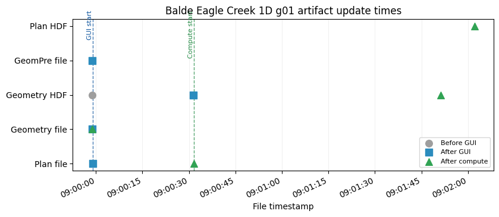
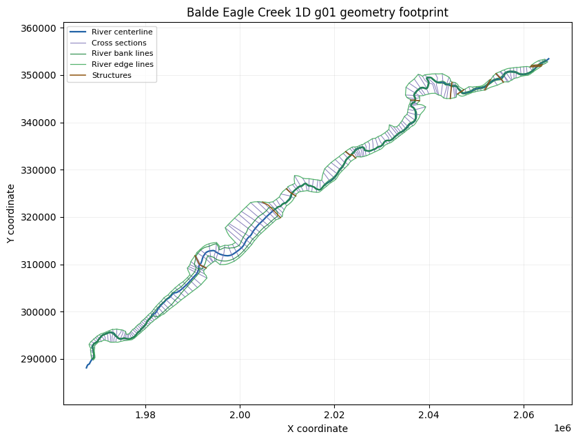
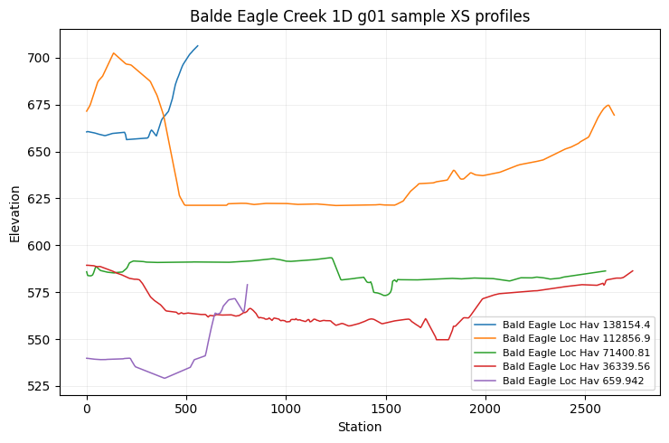
Displayed 3 validation figure(s).
{'label': 'Balde Eagle Creek 1D: all XS attributes except terrain',
'project': 'Balde Eagle Creek 1D',
'geometry_number': '01',
'plan_number': '03',
'status': 'passed',
'passed': True,
'plan_path': 'C:\\GH\\ras-commander\\working\\notebook_runs\\122_full_live_20260429_085928\\example_projects\\Balde Eagle Creek_122_rasmapper_updates_rm01_balde_eagle_creek_1\\BaldEagle.p03',
'plan_encoding': 'utf-8',
'geometry_path': 'C:\\GH\\ras-commander\\working\\notebook_runs\\122_full_live_20260429_085928\\example_projects\\Balde Eagle Creek_122_rasmapper_updates_rm01_balde_eagle_creek_1\\BaldEagle.g01',
'geometry_encoding': 'utf-8',
'geometry_hdf_path': 'C:\\GH\\ras-commander\\working\\notebook_runs\\122_full_live_20260429_085928\\example_projects\\Balde Eagle Creek_122_rasmapper_updates_rm01_balde_eagle_creek_1\\BaldEagle.g01.hdf',
'geometry_hdf_keys': 'Geometry',
'plan_hdf_path': 'C:\\GH\\ras-commander\\working\\notebook_runs\\122_full_live_20260429_085928\\example_projects\\Balde Eagle Creek_122_rasmapper_updates_rm01_balde_eagle_creek_1\\BaldEagle.p03.hdf',
'plan_hdf_keys': 'Event Conditions, Geometry, Plan Data, Results',
'plan_file_read': True,
'plan_shortid_updated': True,
'plan_title_updated': True,
'plan_geometry_updated': True,
'geometry_preprocessor_enabled': True,
'geometry_file_read': True,
'gui_update_succeeded': True,
'geometry_artifact_updated': True,
'geometry_hdf_read': True,
'compute_ran': True,
'compute_succeeded': True,
'result_hdf_read': True,
'result_hdf_updated': True,
'figures_displayed': 3}
Demonstration 2: Davis pipe model: river stations table¶
2026-04-29 09:02:03 - ras_commander.RasExamples - INFO - ----- RasExamples Extracting Project -----
2026-04-29 09:02:03 - ras_commander.RasExamples - INFO - Extracting project 'Davis' as 'Davis_122_rasmapper_updates_rm02_davis_pipe_model_ri'
2026-04-29 09:02:03 - ras_commander.RasExamples - INFO - Successfully extracted project 'Davis' to C:\GH\ras-commander\working\notebook_runs\122_full_live_20260429_085928\example_projects\Davis_122_rasmapper_updates_rm02_davis_pipe_model_ri
2026-04-29 09:02:03 - ras_commander.RasUtils - INFO - Discovered HEC-RAS 7.0 at C:\Program Files (x86)\HEC\HEC-RAS\7.0\Ras.exe via filesystem (x86)
2026-04-29 09:02:03 - ras_commander.RasUtils - INFO - Discovered HEC-RAS 6.7 Beta 5 at C:\Program Files (x86)\HEC\HEC-RAS\6.7 Beta 5\Ras.exe via filesystem (x86)
2026-04-29 09:02:03 - ras_commander.RasUtils - INFO - Discovered HEC-RAS 6.7 Beta 4 at C:\Program Files (x86)\HEC\HEC-RAS\6.7 Beta 4\Ras.exe via filesystem (x86)
2026-04-29 09:02:03 - ras_commander.RasUtils - INFO - Discovered HEC-RAS 6.5 at C:\Program Files (x86)\HEC\HEC-RAS\6.5\Ras.exe via filesystem (x86)
2026-04-29 09:02:03 - ras_commander.RasUtils - INFO - Discovered HEC-RAS 6.4.1 at C:\Program Files (x86)\HEC\HEC-RAS\6.4.1\Ras.exe via filesystem (x86)
2026-04-29 09:02:03 - ras_commander.RasUtils - INFO - Discovered HEC-RAS 6.3.1 at C:\Program Files (x86)\HEC\HEC-RAS\6.3.1\Ras.exe via filesystem (x86)
2026-04-29 09:02:03 - ras_commander.RasUtils - INFO - Discovered HEC-RAS 6.3 at C:\Program Files (x86)\HEC\HEC-RAS\6.3\Ras.exe via filesystem (x86)
2026-04-29 09:02:03 - ras_commander.RasUtils - INFO - Discovered HEC-RAS 6.2 at C:\Program Files (x86)\HEC\HEC-RAS\6.2\Ras.exe via filesystem (x86)
2026-04-29 09:02:03 - ras_commander.RasUtils - INFO - Discovered HEC-RAS 6.1 at C:\Program Files (x86)\HEC\HEC-RAS\6.1\Ras.exe via filesystem (x86)
2026-04-29 09:02:03 - ras_commander.RasUtils - INFO - Discovered HEC-RAS 6.0 at C:\Program Files (x86)\HEC\HEC-RAS\6.0\Ras.exe via filesystem (x86)
2026-04-29 09:02:03 - ras_commander.RasUtils - INFO - Discovered HEC-RAS 5.0.7 at C:\Program Files (x86)\HEC\HEC-RAS\5.0.7\Ras.exe via filesystem (x86)
2026-04-29 09:02:03 - ras_commander.RasUtils - INFO - Discovered HEC-RAS 5.0.6 at C:\Program Files (x86)\HEC\HEC-RAS\5.0.6\Ras.exe via filesystem (x86)
2026-04-29 09:02:03 - ras_commander.RasUtils - INFO - Discovered HEC-RAS 5.0.5 at C:\Program Files (x86)\HEC\HEC-RAS\5.0.5\Ras.exe via filesystem (x86)
2026-04-29 09:02:03 - ras_commander.RasUtils - INFO - Discovered HEC-RAS 5.0.4 at C:\Program Files (x86)\HEC\HEC-RAS\5.0.4\Ras.exe via filesystem (x86)
2026-04-29 09:02:03 - ras_commander.RasUtils - INFO - Discovered HEC-RAS 5.0.3 at C:\Program Files (x86)\HEC\HEC-RAS\5.0.3\Ras.exe via filesystem (x86)
2026-04-29 09:02:03 - ras_commander.RasUtils - INFO - Discovered HEC-RAS 5.0.1 at C:\Program Files (x86)\HEC\HEC-RAS\5.0.1\Ras.exe via filesystem (x86)
2026-04-29 09:02:03 - ras_commander.RasUtils - INFO - Discovered HEC-RAS 5.0 at C:\Program Files (x86)\HEC\HEC-RAS\5.0\Ras.exe via filesystem (x86)
2026-04-29 09:02:03 - ras_commander.RasUtils - INFO - Discovered HEC-RAS 4.1.0 at C:\Program Files (x86)\HEC\HEC-RAS\4.1.0\Ras.exe via filesystem (x86)
2026-04-29 09:02:03 - ras_commander.RasUtils - INFO - Discovered HEC-RAS 4.0 at C:\Program Files (x86)\HEC\HEC-RAS\4.0\Ras.exe via filesystem (x86)
2026-04-29 09:02:03 - ras_commander.RasUtils - INFO - Discovered HEC-RAS 6.6 at C:\Program Files (x86)\HEC\HEC-RAS\6.6\Ras.exe via filesystem (x86)
2026-04-29 09:02:03 - ras_commander.RasUtils - INFO - Discovered 20 installed HEC-RAS version(s)
2026-04-29 09:02:03 - ras_commander.RasPrj - INFO - HEC-RAS 7.0 found via version discovery: C:\Program Files (x86)\HEC\HEC-RAS\7.0\Ras.exe
2026-04-29 09:02:03 - ras_commander.RasMap - INFO - Successfully parsed RASMapper file: C:\GH\ras-commander\working\notebook_runs\122_full_live_20260429_085928\example_projects\Davis_122_rasmapper_updates_rm02_davis_pipe_model_ri\DavisStormSystem.rasmap
2026-04-29 09:02:03 - ras_commander.hdf.HdfBase - INFO - Found projection in HDF file: C:\GH\ras-commander\working\notebook_runs\122_full_live_20260429_085928\example_projects\Davis_122_rasmapper_updates_rm02_davis_pipe_model_ri\DavisStormSystem.g02.hdf
2026-04-29 09:02:03 - ras_commander.hdf.HdfBase - INFO - Converted WKT to EPSG:2871 from HDF file DavisStormSystem.g02.hdf
2026-04-29 09:02:03 - ras_commander.RasPrj - INFO - Updated results_df with 1 plan(s)
2026-04-29 09:02:03 - ras_commander.RasPrj - INFO - ras-commander v0.94.0 | An open-source project of CLB Engineering Corporation (https://clbengineering.com/) | Docs: https://ras-commander.readthedocs.io | GitHub: https://github.com/gpt-cmdr/ras-commander
2026-04-29 09:02:03 - ras_commander.RasPrj - INFO - Project initialized: DavisStormSystem | Folder: C:\GH\ras-commander\working\notebook_runs\122_full_live_20260429_085928\example_projects\Davis_122_rasmapper_updates_rm02_davis_pipe_model_ri
2026-04-29 09:02:03 - ras_commander.RasPrj - INFO - Using HEC-RAS executable: C:\Program Files (x86)\HEC\HEC-RAS\7.0\Ras.exe
2026-04-29 09:02:03 - ras_commander.RasUtils - INFO - File cloned from C:\GH\ras-commander\working\notebook_runs\122_full_live_20260429_085928\example_projects\Davis_122_rasmapper_updates_rm02_davis_pipe_model_ri\DavisStormSystem.p02 to C:\GH\ras-commander\working\notebook_runs\122_full_live_20260429_085928\example_projects\Davis_122_rasmapper_updates_rm02_davis_pipe_model_ri\DavisStormSystem.p01
2026-04-29 09:02:03 - ras_commander.RasUtils - INFO - Successfully updated file: C:\GH\ras-commander\working\notebook_runs\122_full_live_20260429_085928\example_projects\Davis_122_rasmapper_updates_rm02_davis_pipe_model_ri\DavisStormSystem.p01
2026-04-29 09:02:03 - ras_commander.RasUtils - INFO - Project file updated with new Plan entry: 01
2026-04-29 09:02:03 - ras_commander.RasMap - INFO - Successfully parsed RASMapper file: C:\GH\ras-commander\working\notebook_runs\122_full_live_20260429_085928\example_projects\Davis_122_rasmapper_updates_rm02_davis_pipe_model_ri\DavisStormSystem.rasmap
2026-04-29 09:02:03 - ras_commander.hdf.HdfBase - INFO - Found projection in HDF file: C:\GH\ras-commander\working\notebook_runs\122_full_live_20260429_085928\example_projects\Davis_122_rasmapper_updates_rm02_davis_pipe_model_ri\DavisStormSystem.g02.hdf
2026-04-29 09:02:03 - ras_commander.hdf.HdfBase - INFO - Converted WKT to EPSG:2871 from HDF file DavisStormSystem.g02.hdf
2026-04-29 09:02:03 - ras_commander.RasPrj - INFO - Updated results_df with 2 plan(s)
--------------------------------------------------------------------------------
Davis pipe model: river stations table
Model: Davis -> suffix 122_rasmapper_updates_rm02_davis_pipe_model_ri
Function: RasMapperXsecUpdateWorkflow.update_cross_sections
Geometry: g02
Plan clone metadata: shortid=RM02_DAVIS_PIPE_MODEL_RI, title=RM 02 Davis pipe model river sta
Args: ('02', 'river_stations_table')
Kwargs: {'timeout': 900}
2026-04-29 09:02:03 - ras_commander.RasPlan - INFO - Updated Geom File in plan file to g02 for plan 01
2026-04-29 09:02:03 - ras_commander.RasPlan - INFO - Geometry for plan 01 set to 02
2026-04-29 09:02:03 - ras_commander.RasPlan - INFO - Successfully updated run flags in plan file: C:\GH\ras-commander\working\notebook_runs\122_full_live_20260429_085928\example_projects\Davis_122_rasmapper_updates_rm02_davis_pipe_model_ri\DavisStormSystem.p01 (flags modified: 1)
2026-04-29 09:02:03 - ras_commander.RasUtils - INFO - Constructed plan file path: C:\GH\ras-commander\working\notebook_runs\122_full_live_20260429_085928\example_projects\Davis_122_rasmapper_updates_rm02_davis_pipe_model_ri\DavisStormSystem.p01
2026-04-29 09:02:03 - ras_commander.RasPlan - INFO - Updated Short Identifier in plan file to: RM02_DAVIS_PIPE_MODEL_RI
2026-04-29 09:02:03 - ras_commander.RasUtils - INFO - Constructed plan file path: C:\GH\ras-commander\working\notebook_runs\122_full_live_20260429_085928\example_projects\Davis_122_rasmapper_updates_rm02_davis_pipe_model_ri\DavisStormSystem.p01
2026-04-29 09:02:03 - ras_commander.RasPlan - INFO - Updated Plan Title in plan file to: RM 02 Davis pipe model river sta
2026-04-29 09:02:03 - ras_commander.RasPlan - INFO - Successfully updated run flags in plan file: C:\GH\ras-commander\working\notebook_runs\122_full_live_20260429_085928\example_projects\Davis_122_rasmapper_updates_rm02_davis_pipe_model_ri\DavisStormSystem.p01 (flags modified: 1)
2026-04-29 09:02:03 - ras_commander.RasMap - INFO - Found 1 geometries in .rasmap
2026-04-29 09:02:03 - ras_commander.gui.workflow_base - INFO - Starting RASMapperLayerCommand[Cross Sections > Update Cross Sections > River Stations Table] (8 steps)
2026-04-29 09:02:03 - ras_commander.gui.workflow_base - INFO - [1/8] Verify HEC-RAS is closed
2026-04-29 09:02:03 - ras_commander.gui.workflow_base - INFO - [1/8] Verify HEC-RAS is closed completed (0.0s)
2026-04-29 09:02:03 - ras_commander.gui.workflow_base - INFO - [2/8] Launch HEC-RAS
2026-04-29 09:02:03 - ras_commander.gui.hecras_elements - INFO - Opening HEC-RAS...
2026-04-29 09:02:03 - ras_commander.gui.hecras_elements - INFO - HEC-RAS opened with Process ID: 110176
2026-04-29 09:02:04 - ras_commander.gui.hecras_elements - INFO - Found 'already running' dialog - clicking Yes to continue
2026-04-29 09:02:04 - ras_commander.gui.win32_primitives - INFO - Clicked button: &Yes
2026-04-29 09:02:04 - ras_commander.gui.hecras_elements - INFO - Clicked 'Yes' button on already running dialog
2026-04-29 09:02:05 - ras_commander.gui.hecras_elements - INFO - Waiting for HEC-RAS main window...
2026-04-29 09:02:07 - ras_commander.gui.hecras_elements - INFO - Found HEC-RAS main window: HEC-RAS 7.0
2026-04-29 09:02:07 - ras_commander.gui.workflow_base - INFO - [2/8] Launch HEC-RAS completed (3.5s)
2026-04-29 09:02:07 - ras_commander.gui.workflow_base - INFO - [3/8] Open RASMapper
2026-04-29 09:02:07 - ras_commander.gui.hecras_elements - INFO - Found menu item: 'RAS Mapper ...' (ID: 103)
2026-04-29 09:02:07 - ras_commander.gui.win32_primitives - INFO - Clicked menu item ID: 103
2026-04-29 09:02:07 - ras_commander.gui.workflow_base - INFO - [3/8] Open RASMapper completed (0.5s)
2026-04-29 09:02:07 - ras_commander.gui.workflow_base - INFO - [4/8] Wait for RASMapper
2026-04-29 09:02:10 - ras_commander.gui.rasmapper_elements - INFO - RASMapper opened: RAS Mapper (took 3s)
2026-04-29 09:02:10 - ras_commander.gui.workflow_base - INFO - [4/8] Wait for RASMapper completed (3.0s)
2026-04-29 09:02:10 - ras_commander.gui.workflow_base - INFO - [5/8] Start geometry editing
2026-04-29 09:02:11 - ras_commander.gui.workflow_base - WARNING - [5/8] Start geometry editing failed (attempt 1/2): Could not find RASMapper tree node: Davis Full System w_ Pump > Cross Sections
[!] Could not find 'Cross Sections' at depth 1
2026-04-29 09:02:14 - ras_commander.gui.workflow_base - WARNING - [5/8] Start geometry editing failed (attempt 2/2): Could not find RASMapper tree node: Davis Full System w_ Pump > Cross Sections
2026-04-29 09:02:14 - ras_commander.gui.workflow_base - ERROR - Required step 'Start geometry editing' failed after 2 attempts
2026-04-29 09:02:14 - ras_commander.gui.workflow_base - ERROR - RASMapperLayerCommand[Cross Sections > Update Cross Sections > River Stations Table] failed at step 'Start geometry editing' (10.5s, 4/8 steps completed)
2026-04-29 09:02:14 - ras_commander.gui.win32_primitives - INFO - Closed window: RAS Mapper
[!] Could not find 'Cross Sections' at depth 1
2026-04-29 09:02:19 - ras_commander.gui.win32_primitives - INFO - Closed window: HEC-RAS 7.0
GUI update success: False
GUI update error: Could not find RASMapper tree node: Davis Full System w_ Pump > Cross Sections
WorkflowResult(success=False, steps_completed=['Verify HEC-RAS is closed', 'Launch HEC-RAS', 'Open RASMapper', 'Wait for RASMapper'], steps_failed=['Start geometry editing'], step_results={'Verify HEC-RAS is closed': None, 'Launch HEC-RAS': None, 'Open RASMapper': None, 'Wait for RASMapper': None}, elapsed_seconds=10.503051280975342, error=RuntimeError('Could not find RASMapper tree node: Davis Full System w_ Pump > Cross Sections'))
| label | project | geometry_number | plan_number | status | passed | plan_path | plan_encoding | geometry_path | geometry_encoding | ... | plan_geometry_updated | geometry_preprocessor_enabled | geometry_file_read | gui_update_succeeded | geometry_artifact_updated | geometry_hdf_read | compute_ran | compute_succeeded | result_hdf_read | result_hdf_updated | |
|---|---|---|---|---|---|---|---|---|---|---|---|---|---|---|---|---|---|---|---|---|---|
| 0 | Davis pipe model: river stations table | Davis | 02 | 01 | failed | False | C:\GH\ras-commander\working\notebook_runs\122_... | utf-8 | C:\GH\ras-commander\working\notebook_runs\122_... | utf-8 | ... | True | True | True | False | True | True | False | False | False | False |
1 rows × 27 columns
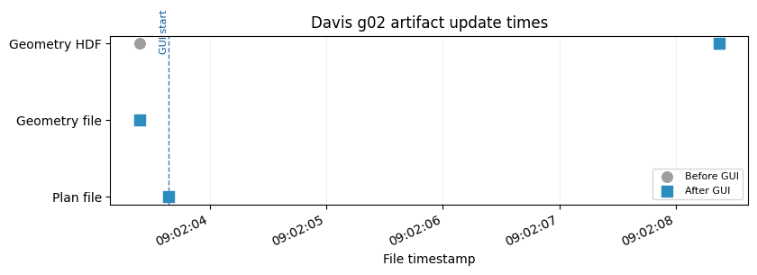
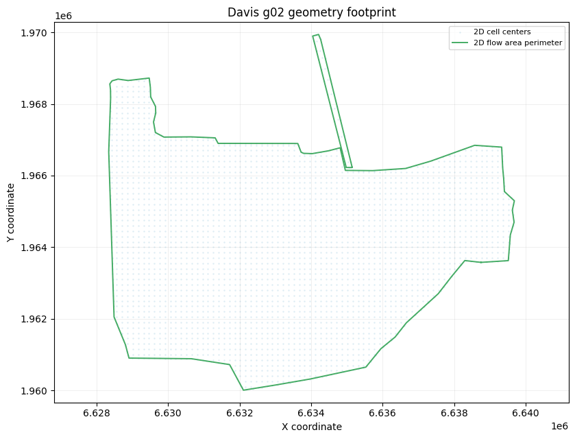
Displayed 2 validation figure(s).
{'label': 'Davis pipe model: river stations table',
'project': 'Davis',
'geometry_number': '02',
'plan_number': '01',
'status': 'failed',
'passed': False,
'plan_path': 'C:\\GH\\ras-commander\\working\\notebook_runs\\122_full_live_20260429_085928\\example_projects\\Davis_122_rasmapper_updates_rm02_davis_pipe_model_ri\\DavisStormSystem.p01',
'plan_encoding': 'utf-8',
'geometry_path': 'C:\\GH\\ras-commander\\working\\notebook_runs\\122_full_live_20260429_085928\\example_projects\\Davis_122_rasmapper_updates_rm02_davis_pipe_model_ri\\DavisStormSystem.g02',
'geometry_encoding': 'utf-8',
'geometry_hdf_path': 'C:\\GH\\ras-commander\\working\\notebook_runs\\122_full_live_20260429_085928\\example_projects\\Davis_122_rasmapper_updates_rm02_davis_pipe_model_ri\\DavisStormSystem.g02.hdf',
'geometry_hdf_keys': 'Geometry',
'plan_hdf_path': 'C:\\GH\\ras-commander\\working\\notebook_runs\\122_full_live_20260429_085928\\example_projects\\Davis_122_rasmapper_updates_rm02_davis_pipe_model_ri\\DavisStormSystem.p01.hdf',
'plan_hdf_keys': '',
'plan_file_read': True,
'plan_shortid_updated': True,
'plan_title_updated': True,
'plan_geometry_updated': True,
'geometry_preprocessor_enabled': True,
'geometry_file_read': True,
'gui_update_succeeded': False,
'geometry_artifact_updated': True,
'geometry_hdf_read': True,
'compute_ran': False,
'compute_succeeded': False,
'result_hdf_read': False,
'result_hdf_updated': False,
'figures_displayed': 2}
Demonstration 3: New Orleans Metro: elevation profiles from terrain¶
2026-04-29 09:02:19 - ras_commander.RasExamples - INFO - ----- RasExamples Extracting Special Project -----
2026-04-29 09:02:19 - ras_commander.RasExamples - INFO - Extracting special project 'NewOrleansMetro' as 'NewOrleansMetro_122_rasmapper_updates_rm03_new_orleans_metro_e'
2026-04-29 09:02:19 - ras_commander.RasExamples - INFO - Downloading special project from: https://www.hec.usace.army.mil/confluence/rasdocs/hgt/files/latest/299502039/299502111/1/1747692522764/NewOrleansMetroPipesExample.zip
2026-04-29 09:02:19 - ras_commander.RasExamples - INFO - This may take a few moments...
--------------------------------------------------------------------------------
New Orleans Metro: elevation profiles from terrain
Model: NewOrleansMetro -> suffix 122_rasmapper_updates_rm03_new_orleans_metro_e
Function: RasMapperXsecUpdateWorkflow.update_cross_sections
Geometry: g02
Plan clone metadata: shortid=RM03_NEW_ORLEANS_METRO_E, title=RM 03 New Orleans Metro elevatio
Args: ('02', 'elevation_profiles_from_terrain')
Kwargs: {'timeout': 900}
2026-04-29 09:02:26 - ras_commander.RasExamples - INFO - Downloaded special project zip file to C:\GH\ras-commander\working\notebook_runs\122_full_live_20260429_085928\example_projects\NewOrleansMetro_122_rasmapper_updates_rm03_new_orleans_metro_e_temp.zip
2026-04-29 09:02:27 - ras_commander.RasExamples - INFO - Successfully extracted special project 'NewOrleansMetro' to C:\GH\ras-commander\working\notebook_runs\122_full_live_20260429_085928\example_projects\NewOrleansMetro_122_rasmapper_updates_rm03_new_orleans_metro_e
2026-04-29 09:02:27 - ras_commander.RasUtils - INFO - Discovered HEC-RAS 7.0 at C:\Program Files (x86)\HEC\HEC-RAS\7.0\Ras.exe via filesystem (x86)
2026-04-29 09:02:27 - ras_commander.RasUtils - INFO - Discovered HEC-RAS 6.7 Beta 5 at C:\Program Files (x86)\HEC\HEC-RAS\6.7 Beta 5\Ras.exe via filesystem (x86)
2026-04-29 09:02:27 - ras_commander.RasUtils - INFO - Discovered HEC-RAS 6.7 Beta 4 at C:\Program Files (x86)\HEC\HEC-RAS\6.7 Beta 4\Ras.exe via filesystem (x86)
2026-04-29 09:02:27 - ras_commander.RasUtils - INFO - Discovered HEC-RAS 6.5 at C:\Program Files (x86)\HEC\HEC-RAS\6.5\Ras.exe via filesystem (x86)
2026-04-29 09:02:27 - ras_commander.RasUtils - INFO - Discovered HEC-RAS 6.4.1 at C:\Program Files (x86)\HEC\HEC-RAS\6.4.1\Ras.exe via filesystem (x86)
2026-04-29 09:02:27 - ras_commander.RasUtils - INFO - Discovered HEC-RAS 6.3.1 at C:\Program Files (x86)\HEC\HEC-RAS\6.3.1\Ras.exe via filesystem (x86)
2026-04-29 09:02:27 - ras_commander.RasUtils - INFO - Discovered HEC-RAS 6.3 at C:\Program Files (x86)\HEC\HEC-RAS\6.3\Ras.exe via filesystem (x86)
2026-04-29 09:02:27 - ras_commander.RasUtils - INFO - Discovered HEC-RAS 6.2 at C:\Program Files (x86)\HEC\HEC-RAS\6.2\Ras.exe via filesystem (x86)
2026-04-29 09:02:27 - ras_commander.RasUtils - INFO - Discovered HEC-RAS 6.1 at C:\Program Files (x86)\HEC\HEC-RAS\6.1\Ras.exe via filesystem (x86)
2026-04-29 09:02:27 - ras_commander.RasUtils - INFO - Discovered HEC-RAS 6.0 at C:\Program Files (x86)\HEC\HEC-RAS\6.0\Ras.exe via filesystem (x86)
2026-04-29 09:02:27 - ras_commander.RasUtils - INFO - Discovered HEC-RAS 5.0.7 at C:\Program Files (x86)\HEC\HEC-RAS\5.0.7\Ras.exe via filesystem (x86)
2026-04-29 09:02:27 - ras_commander.RasUtils - INFO - Discovered HEC-RAS 5.0.6 at C:\Program Files (x86)\HEC\HEC-RAS\5.0.6\Ras.exe via filesystem (x86)
2026-04-29 09:02:27 - ras_commander.RasUtils - INFO - Discovered HEC-RAS 5.0.5 at C:\Program Files (x86)\HEC\HEC-RAS\5.0.5\Ras.exe via filesystem (x86)
2026-04-29 09:02:27 - ras_commander.RasUtils - INFO - Discovered HEC-RAS 5.0.4 at C:\Program Files (x86)\HEC\HEC-RAS\5.0.4\Ras.exe via filesystem (x86)
2026-04-29 09:02:27 - ras_commander.RasUtils - INFO - Discovered HEC-RAS 5.0.3 at C:\Program Files (x86)\HEC\HEC-RAS\5.0.3\Ras.exe via filesystem (x86)
2026-04-29 09:02:27 - ras_commander.RasUtils - INFO - Discovered HEC-RAS 5.0.1 at C:\Program Files (x86)\HEC\HEC-RAS\5.0.1\Ras.exe via filesystem (x86)
2026-04-29 09:02:27 - ras_commander.RasUtils - INFO - Discovered HEC-RAS 5.0 at C:\Program Files (x86)\HEC\HEC-RAS\5.0\Ras.exe via filesystem (x86)
2026-04-29 09:02:27 - ras_commander.RasUtils - INFO - Discovered HEC-RAS 4.1.0 at C:\Program Files (x86)\HEC\HEC-RAS\4.1.0\Ras.exe via filesystem (x86)
2026-04-29 09:02:27 - ras_commander.RasUtils - INFO - Discovered HEC-RAS 4.0 at C:\Program Files (x86)\HEC\HEC-RAS\4.0\Ras.exe via filesystem (x86)
2026-04-29 09:02:27 - ras_commander.RasUtils - INFO - Discovered HEC-RAS 6.6 at C:\Program Files (x86)\HEC\HEC-RAS\6.6\Ras.exe via filesystem (x86)
2026-04-29 09:02:27 - ras_commander.RasUtils - INFO - Discovered 20 installed HEC-RAS version(s)
2026-04-29 09:02:27 - ras_commander.RasPrj - INFO - HEC-RAS 7.0 found via version discovery: C:\Program Files (x86)\HEC\HEC-RAS\7.0\Ras.exe
2026-04-29 09:02:27 - ras_commander.RasMap - INFO - Successfully parsed RASMapper file: C:\GH\ras-commander\working\notebook_runs\122_full_live_20260429_085928\example_projects\NewOrleansMetro_122_rasmapper_updates_rm03_new_orleans_metro_e\NewOrleansMetro.rasmap
2026-04-29 09:02:27 - ras_commander.hdf.HdfBase - INFO - Found projection in HDF file: C:\GH\ras-commander\working\notebook_runs\122_full_live_20260429_085928\example_projects\NewOrleansMetro_122_rasmapper_updates_rm03_new_orleans_metro_e\NewOrleansMetro.g02.hdf
2026-04-29 09:02:27 - ras_commander.hdf.HdfBase - INFO - Converted WKT to EPSG:3457 from HDF file NewOrleansMetro.g02.hdf
2026-04-29 09:02:27 - ras_commander.RasPrj - INFO - Updated results_df with 1 plan(s)
2026-04-29 09:02:27 - ras_commander.RasPrj - INFO - ras-commander v0.94.0 | An open-source project of CLB Engineering Corporation (https://clbengineering.com/) | Docs: https://ras-commander.readthedocs.io | GitHub: https://github.com/gpt-cmdr/ras-commander
2026-04-29 09:02:27 - ras_commander.RasPrj - INFO - Project initialized: NewOrleansMetro | Folder: C:\GH\ras-commander\working\notebook_runs\122_full_live_20260429_085928\example_projects\NewOrleansMetro_122_rasmapper_updates_rm03_new_orleans_metro_e
2026-04-29 09:02:27 - ras_commander.RasPrj - INFO - Using HEC-RAS executable: C:\Program Files (x86)\HEC\HEC-RAS\7.0\Ras.exe
2026-04-29 09:02:27 - ras_commander.RasUtils - INFO - File cloned from C:\GH\ras-commander\working\notebook_runs\122_full_live_20260429_085928\example_projects\NewOrleansMetro_122_rasmapper_updates_rm03_new_orleans_metro_e\NewOrleansMetro.p01 to C:\GH\ras-commander\working\notebook_runs\122_full_live_20260429_085928\example_projects\NewOrleansMetro_122_rasmapper_updates_rm03_new_orleans_metro_e\NewOrleansMetro.p02
2026-04-29 09:02:27 - ras_commander.RasUtils - INFO - Successfully updated file: C:\GH\ras-commander\working\notebook_runs\122_full_live_20260429_085928\example_projects\NewOrleansMetro_122_rasmapper_updates_rm03_new_orleans_metro_e\NewOrleansMetro.p02
2026-04-29 09:02:27 - ras_commander.RasUtils - INFO - Project file updated with new Plan entry: 02
2026-04-29 09:02:27 - ras_commander.RasMap - INFO - Successfully parsed RASMapper file: C:\GH\ras-commander\working\notebook_runs\122_full_live_20260429_085928\example_projects\NewOrleansMetro_122_rasmapper_updates_rm03_new_orleans_metro_e\NewOrleansMetro.rasmap
2026-04-29 09:02:27 - ras_commander.hdf.HdfBase - INFO - Found projection in HDF file: C:\GH\ras-commander\working\notebook_runs\122_full_live_20260429_085928\example_projects\NewOrleansMetro_122_rasmapper_updates_rm03_new_orleans_metro_e\NewOrleansMetro.g02.hdf
2026-04-29 09:02:27 - ras_commander.hdf.HdfBase - INFO - Converted WKT to EPSG:3457 from HDF file NewOrleansMetro.g02.hdf
2026-04-29 09:02:27 - ras_commander.RasPrj - INFO - Updated results_df with 2 plan(s)
2026-04-29 09:02:27 - ras_commander.RasPlan - INFO - Updated Geom File in plan file to g02 for plan 02
2026-04-29 09:02:27 - ras_commander.RasPlan - INFO - Geometry for plan 02 set to 02
2026-04-29 09:02:27 - ras_commander.RasPlan - INFO - Successfully updated run flags in plan file: C:\GH\ras-commander\working\notebook_runs\122_full_live_20260429_085928\example_projects\NewOrleansMetro_122_rasmapper_updates_rm03_new_orleans_metro_e\NewOrleansMetro.p02 (flags modified: 1)
2026-04-29 09:02:27 - ras_commander.RasUtils - INFO - Constructed plan file path: C:\GH\ras-commander\working\notebook_runs\122_full_live_20260429_085928\example_projects\NewOrleansMetro_122_rasmapper_updates_rm03_new_orleans_metro_e\NewOrleansMetro.p02
2026-04-29 09:02:27 - ras_commander.RasPlan - INFO - Updated Short Identifier in plan file to: RM03_NEW_ORLEANS_METRO_E
2026-04-29 09:02:27 - ras_commander.RasUtils - INFO - Constructed plan file path: C:\GH\ras-commander\working\notebook_runs\122_full_live_20260429_085928\example_projects\NewOrleansMetro_122_rasmapper_updates_rm03_new_orleans_metro_e\NewOrleansMetro.p02
2026-04-29 09:02:27 - ras_commander.RasPlan - INFO - Updated Plan Title in plan file to: RM 03 New Orleans Metro elevatio
2026-04-29 09:02:27 - ras_commander.RasPlan - INFO - Successfully updated run flags in plan file: C:\GH\ras-commander\working\notebook_runs\122_full_live_20260429_085928\example_projects\NewOrleansMetro_122_rasmapper_updates_rm03_new_orleans_metro_e\NewOrleansMetro.p02 (flags modified: 1)
2026-04-29 09:02:27 - ras_commander.RasMap - INFO - Found 1 geometries in .rasmap
2026-04-29 09:02:27 - ras_commander.gui.workflow_base - INFO - Starting RASMapperLayerCommand[Cross Sections > Update Cross Sections > Elevation Profiles from Terrain] (8 steps)
2026-04-29 09:02:27 - ras_commander.gui.workflow_base - INFO - [1/8] Verify HEC-RAS is closed
2026-04-29 09:02:27 - ras_commander.gui.workflow_base - INFO - [1/8] Verify HEC-RAS is closed completed (0.0s)
2026-04-29 09:02:27 - ras_commander.gui.workflow_base - INFO - [2/8] Launch HEC-RAS
2026-04-29 09:02:27 - ras_commander.gui.hecras_elements - INFO - Opening HEC-RAS...
2026-04-29 09:02:27 - ras_commander.gui.hecras_elements - INFO - HEC-RAS opened with Process ID: 95828
2026-04-29 09:02:28 - ras_commander.gui.hecras_elements - INFO - Found 'already running' dialog - clicking Yes to continue
2026-04-29 09:02:28 - ras_commander.gui.win32_primitives - INFO - Clicked button: &Yes
2026-04-29 09:02:28 - ras_commander.gui.hecras_elements - INFO - Clicked 'Yes' button on already running dialog
2026-04-29 09:02:29 - ras_commander.gui.hecras_elements - INFO - Waiting for HEC-RAS main window...
2026-04-29 09:02:31 - ras_commander.gui.hecras_elements - INFO - Found HEC-RAS main window: HEC-RAS 7.0
2026-04-29 09:02:31 - ras_commander.gui.workflow_base - INFO - [2/8] Launch HEC-RAS completed (3.5s)
2026-04-29 09:02:31 - ras_commander.gui.workflow_base - INFO - [3/8] Open RASMapper
2026-04-29 09:02:31 - ras_commander.gui.hecras_elements - INFO - Found menu item: 'RAS Mapper ...' (ID: 103)
2026-04-29 09:02:31 - ras_commander.gui.win32_primitives - INFO - Clicked menu item ID: 103
2026-04-29 09:02:31 - ras_commander.gui.workflow_base - INFO - [3/8] Open RASMapper completed (0.5s)
2026-04-29 09:02:31 - ras_commander.gui.workflow_base - INFO - [4/8] Wait for RASMapper
2026-04-29 09:02:37 - ras_commander.gui.rasmapper_elements - INFO - RASMapper opened: RAS Mapper (took 6s)
2026-04-29 09:02:37 - ras_commander.gui.workflow_base - INFO - [4/8] Wait for RASMapper completed (6.0s)
2026-04-29 09:02:37 - ras_commander.gui.workflow_base - INFO - [5/8] Start geometry editing
2026-04-29 09:02:38 - ras_commander.gui.workflow_base - WARNING - [5/8] Start geometry editing failed (attempt 1/2): Could not find RASMapper tree node: 2D Surface Model w Pipes > Cross Sections
[!] Could not find 'Cross Sections' at depth 1
2026-04-29 09:02:41 - ras_commander.gui.workflow_base - WARNING - [5/8] Start geometry editing failed (attempt 2/2): Could not find RASMapper tree node: 2D Surface Model w Pipes > Cross Sections
2026-04-29 09:02:41 - ras_commander.gui.workflow_base - ERROR - Required step 'Start geometry editing' failed after 2 attempts
2026-04-29 09:02:41 - ras_commander.gui.workflow_base - ERROR - RASMapperLayerCommand[Cross Sections > Update Cross Sections > Elevation Profiles from Terrain] failed at step 'Start geometry editing' (13.5s, 4/8 steps completed)
2026-04-29 09:02:41 - ras_commander.gui.win32_primitives - INFO - Closed window: RAS Mapper
[!] Could not find 'Cross Sections' at depth 1
2026-04-29 09:02:46 - ras_commander.gui.win32_primitives - INFO - Closed window: HEC-RAS 7.0
GUI update success: False
GUI update error: Could not find RASMapper tree node: 2D Surface Model w Pipes > Cross Sections
WorkflowResult(success=False, steps_completed=['Verify HEC-RAS is closed', 'Launch HEC-RAS', 'Open RASMapper', 'Wait for RASMapper'], steps_failed=['Start geometry editing'], step_results={'Verify HEC-RAS is closed': None, 'Launch HEC-RAS': None, 'Open RASMapper': None, 'Wait for RASMapper': None}, elapsed_seconds=13.51828908920288, error=RuntimeError('Could not find RASMapper tree node: 2D Surface Model w Pipes > Cross Sections'))
| label | project | geometry_number | plan_number | status | passed | plan_path | plan_encoding | geometry_path | geometry_encoding | ... | plan_geometry_updated | geometry_preprocessor_enabled | geometry_file_read | gui_update_succeeded | geometry_artifact_updated | geometry_hdf_read | compute_ran | compute_succeeded | result_hdf_read | result_hdf_updated | |
|---|---|---|---|---|---|---|---|---|---|---|---|---|---|---|---|---|---|---|---|---|---|
| 0 | New Orleans Metro: elevation profiles from ter... | NewOrleansMetro | 02 | 02 | failed | False | C:\GH\ras-commander\working\notebook_runs\122_... | utf-8 | C:\GH\ras-commander\working\notebook_runs\122_... | utf-8 | ... | True | True | True | False | True | True | False | False | False | False |
1 rows × 27 columns
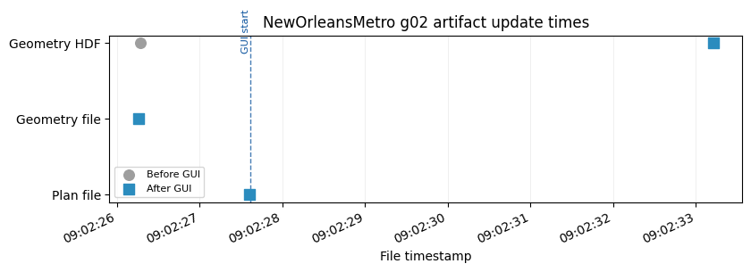
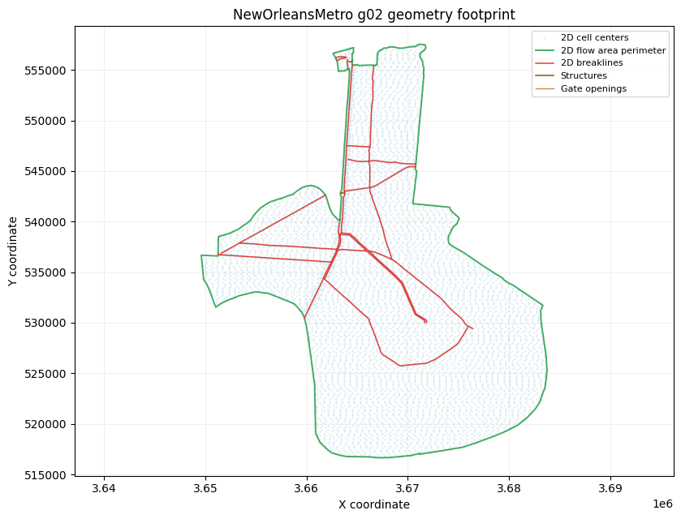
Displayed 2 validation figure(s).
{'label': 'New Orleans Metro: elevation profiles from terrain',
'project': 'NewOrleansMetro',
'geometry_number': '02',
'plan_number': '02',
'status': 'failed',
'passed': False,
'plan_path': 'C:\\GH\\ras-commander\\working\\notebook_runs\\122_full_live_20260429_085928\\example_projects\\NewOrleansMetro_122_rasmapper_updates_rm03_new_orleans_metro_e\\NewOrleansMetro.p02',
'plan_encoding': 'utf-8',
'geometry_path': 'C:\\GH\\ras-commander\\working\\notebook_runs\\122_full_live_20260429_085928\\example_projects\\NewOrleansMetro_122_rasmapper_updates_rm03_new_orleans_metro_e\\NewOrleansMetro.g02',
'geometry_encoding': 'utf-8',
'geometry_hdf_path': 'C:\\GH\\ras-commander\\working\\notebook_runs\\122_full_live_20260429_085928\\example_projects\\NewOrleansMetro_122_rasmapper_updates_rm03_new_orleans_metro_e\\NewOrleansMetro.g02.hdf',
'geometry_hdf_keys': 'Geometry',
'plan_hdf_path': 'C:\\GH\\ras-commander\\working\\notebook_runs\\122_full_live_20260429_085928\\example_projects\\NewOrleansMetro_122_rasmapper_updates_rm03_new_orleans_metro_e\\NewOrleansMetro.p02.hdf',
'plan_hdf_keys': '',
'plan_file_read': True,
'plan_shortid_updated': True,
'plan_title_updated': True,
'plan_geometry_updated': True,
'geometry_preprocessor_enabled': True,
'geometry_file_read': True,
'gui_update_succeeded': False,
'geometry_artifact_updated': True,
'geometry_hdf_read': True,
'compute_ran': False,
'compute_succeeded': False,
'result_hdf_read': False,
'result_hdf_updated': False,
'figures_displayed': 2}
Demonstration 4: Muncie: compute XS interpolation surface¶
2026-04-29 09:02:46 - ras_commander.RasExamples - INFO - ----- RasExamples Extracting Project -----
2026-04-29 09:02:46 - ras_commander.RasExamples - INFO - Extracting project 'Muncie' as 'Muncie_122_rasmapper_updates_rm04_muncie_compute_xs_i'
--------------------------------------------------------------------------------
Muncie: compute XS interpolation surface
Model: Muncie -> suffix 122_rasmapper_updates_rm04_muncie_compute_xs_i
Function: RasMapperLayerCommandWorkflow.run_command
Geometry: g04
Plan clone metadata: shortid=RM04_MUNCIE_COMPUTE_XS_I, title=RM 04 Muncie compute XS interpol
Args: ('Interpolation Surface', 'xs_interpolation_surface', '04')
Kwargs: {'timeout': 900}
2026-04-29 09:02:46 - ras_commander.RasExamples - INFO - Successfully extracted project 'Muncie' to C:\GH\ras-commander\working\notebook_runs\122_full_live_20260429_085928\example_projects\Muncie_122_rasmapper_updates_rm04_muncie_compute_xs_i
2026-04-29 09:02:46 - ras_commander.RasUtils - INFO - Discovered HEC-RAS 7.0 at C:\Program Files (x86)\HEC\HEC-RAS\7.0\Ras.exe via filesystem (x86)
2026-04-29 09:02:46 - ras_commander.RasUtils - INFO - Discovered HEC-RAS 6.7 Beta 5 at C:\Program Files (x86)\HEC\HEC-RAS\6.7 Beta 5\Ras.exe via filesystem (x86)
2026-04-29 09:02:46 - ras_commander.RasUtils - INFO - Discovered HEC-RAS 6.7 Beta 4 at C:\Program Files (x86)\HEC\HEC-RAS\6.7 Beta 4\Ras.exe via filesystem (x86)
2026-04-29 09:02:46 - ras_commander.RasUtils - INFO - Discovered HEC-RAS 6.5 at C:\Program Files (x86)\HEC\HEC-RAS\6.5\Ras.exe via filesystem (x86)
2026-04-29 09:02:46 - ras_commander.RasUtils - INFO - Discovered HEC-RAS 6.4.1 at C:\Program Files (x86)\HEC\HEC-RAS\6.4.1\Ras.exe via filesystem (x86)
2026-04-29 09:02:46 - ras_commander.RasUtils - INFO - Discovered HEC-RAS 6.3.1 at C:\Program Files (x86)\HEC\HEC-RAS\6.3.1\Ras.exe via filesystem (x86)
2026-04-29 09:02:46 - ras_commander.RasUtils - INFO - Discovered HEC-RAS 6.3 at C:\Program Files (x86)\HEC\HEC-RAS\6.3\Ras.exe via filesystem (x86)
2026-04-29 09:02:46 - ras_commander.RasUtils - INFO - Discovered HEC-RAS 6.2 at C:\Program Files (x86)\HEC\HEC-RAS\6.2\Ras.exe via filesystem (x86)
2026-04-29 09:02:46 - ras_commander.RasUtils - INFO - Discovered HEC-RAS 6.1 at C:\Program Files (x86)\HEC\HEC-RAS\6.1\Ras.exe via filesystem (x86)
2026-04-29 09:02:46 - ras_commander.RasUtils - INFO - Discovered HEC-RAS 6.0 at C:\Program Files (x86)\HEC\HEC-RAS\6.0\Ras.exe via filesystem (x86)
2026-04-29 09:02:46 - ras_commander.RasUtils - INFO - Discovered HEC-RAS 5.0.7 at C:\Program Files (x86)\HEC\HEC-RAS\5.0.7\Ras.exe via filesystem (x86)
2026-04-29 09:02:46 - ras_commander.RasUtils - INFO - Discovered HEC-RAS 5.0.6 at C:\Program Files (x86)\HEC\HEC-RAS\5.0.6\Ras.exe via filesystem (x86)
2026-04-29 09:02:46 - ras_commander.RasUtils - INFO - Discovered HEC-RAS 5.0.5 at C:\Program Files (x86)\HEC\HEC-RAS\5.0.5\Ras.exe via filesystem (x86)
2026-04-29 09:02:46 - ras_commander.RasUtils - INFO - Discovered HEC-RAS 5.0.4 at C:\Program Files (x86)\HEC\HEC-RAS\5.0.4\Ras.exe via filesystem (x86)
2026-04-29 09:02:46 - ras_commander.RasUtils - INFO - Discovered HEC-RAS 5.0.3 at C:\Program Files (x86)\HEC\HEC-RAS\5.0.3\Ras.exe via filesystem (x86)
2026-04-29 09:02:46 - ras_commander.RasUtils - INFO - Discovered HEC-RAS 5.0.1 at C:\Program Files (x86)\HEC\HEC-RAS\5.0.1\Ras.exe via filesystem (x86)
2026-04-29 09:02:46 - ras_commander.RasUtils - INFO - Discovered HEC-RAS 5.0 at C:\Program Files (x86)\HEC\HEC-RAS\5.0\Ras.exe via filesystem (x86)
2026-04-29 09:02:46 - ras_commander.RasUtils - INFO - Discovered HEC-RAS 4.1.0 at C:\Program Files (x86)\HEC\HEC-RAS\4.1.0\Ras.exe via filesystem (x86)
2026-04-29 09:02:46 - ras_commander.RasUtils - INFO - Discovered HEC-RAS 4.0 at C:\Program Files (x86)\HEC\HEC-RAS\4.0\Ras.exe via filesystem (x86)
2026-04-29 09:02:46 - ras_commander.RasUtils - INFO - Discovered HEC-RAS 6.6 at C:\Program Files (x86)\HEC\HEC-RAS\6.6\Ras.exe via filesystem (x86)
2026-04-29 09:02:46 - ras_commander.RasUtils - INFO - Discovered 20 installed HEC-RAS version(s)
2026-04-29 09:02:46 - ras_commander.RasPrj - INFO - HEC-RAS 7.0 found via version discovery: C:\Program Files (x86)\HEC\HEC-RAS\7.0\Ras.exe
2026-04-29 09:02:46 - ras_commander.RasMap - INFO - Successfully parsed RASMapper file: C:\GH\ras-commander\working\notebook_runs\122_full_live_20260429_085928\example_projects\Muncie_122_rasmapper_updates_rm04_muncie_compute_xs_i\Muncie.rasmap
2026-04-29 09:02:46 - ras_commander.hdf.HdfBase - INFO - Found projection in projection file: C:\GH\ras-commander\working\notebook_runs\122_full_live_20260429_085928\example_projects\Muncie_122_rasmapper_updates_rm04_muncie_compute_xs_i\GIS_Data\Muncie_IA_Clip.prj
2026-04-29 09:02:46 - ras_commander.RasPrj - INFO - Updated results_df with 3 plan(s)
2026-04-29 09:02:46 - ras_commander.RasPrj - INFO - ras-commander v0.94.0 | An open-source project of CLB Engineering Corporation (https://clbengineering.com/) | Docs: https://ras-commander.readthedocs.io | GitHub: https://github.com/gpt-cmdr/ras-commander
2026-04-29 09:02:46 - ras_commander.RasPrj - INFO - Project initialized: Muncie | Folder: C:\GH\ras-commander\working\notebook_runs\122_full_live_20260429_085928\example_projects\Muncie_122_rasmapper_updates_rm04_muncie_compute_xs_i
2026-04-29 09:02:46 - ras_commander.RasPrj - INFO - Using HEC-RAS executable: C:\Program Files (x86)\HEC\HEC-RAS\7.0\Ras.exe
2026-04-29 09:02:47 - ras_commander.RasUtils - INFO - File cloned from C:\GH\ras-commander\working\notebook_runs\122_full_live_20260429_085928\example_projects\Muncie_122_rasmapper_updates_rm04_muncie_compute_xs_i\Muncie.p04 to C:\GH\ras-commander\working\notebook_runs\122_full_live_20260429_085928\example_projects\Muncie_122_rasmapper_updates_rm04_muncie_compute_xs_i\Muncie.p02
2026-04-29 09:02:47 - ras_commander.RasUtils - INFO - Successfully updated file: C:\GH\ras-commander\working\notebook_runs\122_full_live_20260429_085928\example_projects\Muncie_122_rasmapper_updates_rm04_muncie_compute_xs_i\Muncie.p02
2026-04-29 09:02:47 - ras_commander.RasUtils - INFO - Project file updated with new Plan entry: 02
2026-04-29 09:02:47 - ras_commander.RasMap - INFO - Successfully parsed RASMapper file: C:\GH\ras-commander\working\notebook_runs\122_full_live_20260429_085928\example_projects\Muncie_122_rasmapper_updates_rm04_muncie_compute_xs_i\Muncie.rasmap
2026-04-29 09:02:47 - ras_commander.hdf.HdfBase - INFO - Found projection in projection file: C:\GH\ras-commander\working\notebook_runs\122_full_live_20260429_085928\example_projects\Muncie_122_rasmapper_updates_rm04_muncie_compute_xs_i\GIS_Data\Muncie_IA_Clip.prj
2026-04-29 09:02:47 - ras_commander.RasPrj - INFO - Updated results_df with 4 plan(s)
2026-04-29 09:02:47 - ras_commander.RasPlan - INFO - Updated Geom File in plan file to g04 for plan 02
2026-04-29 09:02:47 - ras_commander.RasPlan - INFO - Geometry for plan 02 set to 04
2026-04-29 09:02:47 - ras_commander.RasPlan - INFO - Successfully updated run flags in plan file: C:\GH\ras-commander\working\notebook_runs\122_full_live_20260429_085928\example_projects\Muncie_122_rasmapper_updates_rm04_muncie_compute_xs_i\Muncie.p02 (flags modified: 1)
2026-04-29 09:02:47 - ras_commander.RasUtils - INFO - Constructed plan file path: C:\GH\ras-commander\working\notebook_runs\122_full_live_20260429_085928\example_projects\Muncie_122_rasmapper_updates_rm04_muncie_compute_xs_i\Muncie.p02
2026-04-29 09:02:47 - ras_commander.RasPlan - INFO - Updated Short Identifier in plan file to: RM04_MUNCIE_COMPUTE_XS_I
2026-04-29 09:02:47 - ras_commander.RasUtils - INFO - Constructed plan file path: C:\GH\ras-commander\working\notebook_runs\122_full_live_20260429_085928\example_projects\Muncie_122_rasmapper_updates_rm04_muncie_compute_xs_i\Muncie.p02
2026-04-29 09:02:47 - ras_commander.RasPlan - INFO - Updated Plan Title in plan file to: RM 04 Muncie compute XS interpol
2026-04-29 09:02:47 - ras_commander.RasPlan - INFO - Successfully updated run flags in plan file: C:\GH\ras-commander\working\notebook_runs\122_full_live_20260429_085928\example_projects\Muncie_122_rasmapper_updates_rm04_muncie_compute_xs_i\Muncie.p02 (flags modified: 1)
2026-04-29 09:02:47 - ras_commander.RasMap - INFO - Found 3 geometries in .rasmap
2026-04-29 09:02:47 - ras_commander.gui.workflow_base - INFO - Starting RASMapperLayerCommand[Interpolation Surface > Compute XS Interpolation Surface] (8 steps)
2026-04-29 09:02:47 - ras_commander.gui.workflow_base - INFO - [1/8] Verify HEC-RAS is closed
2026-04-29 09:02:47 - ras_commander.gui.workflow_base - INFO - [1/8] Verify HEC-RAS is closed completed (0.0s)
2026-04-29 09:02:47 - ras_commander.gui.workflow_base - INFO - [2/8] Launch HEC-RAS
2026-04-29 09:02:47 - ras_commander.gui.hecras_elements - INFO - Opening HEC-RAS...
2026-04-29 09:02:47 - ras_commander.gui.hecras_elements - INFO - HEC-RAS opened with Process ID: 107028
2026-04-29 09:02:48 - ras_commander.gui.hecras_elements - INFO - Found 'already running' dialog - clicking Yes to continue
2026-04-29 09:02:48 - ras_commander.gui.win32_primitives - INFO - Clicked button: &Yes
2026-04-29 09:02:48 - ras_commander.gui.hecras_elements - INFO - Clicked 'Yes' button on already running dialog
2026-04-29 09:02:48 - ras_commander.gui.hecras_elements - INFO - Waiting for HEC-RAS main window...
2026-04-29 09:02:50 - ras_commander.gui.hecras_elements - INFO - Found HEC-RAS main window: HEC-RAS 7.0
2026-04-29 09:02:50 - ras_commander.gui.workflow_base - INFO - [2/8] Launch HEC-RAS completed (3.5s)
2026-04-29 09:02:50 - ras_commander.gui.workflow_base - INFO - [3/8] Open RASMapper
2026-04-29 09:02:51 - ras_commander.gui.hecras_elements - INFO - Found menu item: 'RAS Mapper ...' (ID: 103)
2026-04-29 09:02:51 - ras_commander.gui.win32_primitives - INFO - Clicked menu item ID: 103
2026-04-29 09:02:51 - ras_commander.gui.workflow_base - INFO - [3/8] Open RASMapper completed (0.5s)
2026-04-29 09:02:51 - ras_commander.gui.workflow_base - INFO - [4/8] Wait for RASMapper
2026-04-29 09:02:54 - ras_commander.gui.rasmapper_elements - INFO - RASMapper opened: RAS Mapper (took 3s)
2026-04-29 09:02:54 - ras_commander.gui.workflow_base - INFO - [4/8] Wait for RASMapper completed (3.0s)
2026-04-29 09:02:54 - ras_commander.gui.workflow_base - INFO - [5/8] Start geometry editing
[*] Trying physical mouse right-click...
[*] Physical mouse click at screen (531, 320)
[+] Context menu via physical mouse: hwnd=0x1c2025a
[+] Found menu path item: 'Edit Geometry'
2026-04-29 09:03:00 - ras_commander.gui.workflows.xsec_update - INFO - Started RASMapper geometry edit mode
2026-04-29 09:03:01 - ras_commander.gui.workflow_base - INFO - [5/8] Start geometry editing completed (7.0s)
2026-04-29 09:03:01 - ras_commander.gui.workflow_base - INFO - [6/8] Run layer command
[*] Trying physical mouse right-click...
[*] Physical mouse click at screen (531, 320)
[+] Context menu via physical mouse: hwnd=0x1c2025a
[+] Found menu path item: 'Compute XS Interpolation Surface'
2026-04-29 09:03:06 - ras_commander.gui.workflows.xsec_update - INFO - Triggered RASMapper layer command: Muncie Geometry - 50ft User n Value Regi > Cross Sections > Interpolation Surface > Compute XS Interpolation Surface
2026-04-29 09:03:06 - ras_commander.gui.workflow_base - INFO - [6/8] Run layer command completed (5.6s)
2026-04-29 09:03:06 - ras_commander.gui.workflow_base - INFO - [7/8] Wait for command to complete
2026-04-29 09:03:14 - ras_commander.gui.rasmapper_elements - INFO - RASMapper remained responsive; treating as idle (6s)
2026-04-29 09:03:14 - ras_commander.gui.workflow_base - INFO - [7/8] Wait for command to complete completed (8.0s)
2026-04-29 09:03:14 - ras_commander.gui.workflow_base - INFO - [8/8] Save geometry
2026-04-29 09:03:15 - ras_commander.gui.workflows.xsec_update - INFO - Sent Ctrl+S to RASMapper
2026-04-29 09:03:15 - ras_commander.gui.workflow_base - INFO - [8/8] Save geometry completed (0.7s)
2026-04-29 09:03:15 - ras_commander.gui.workflow_base - INFO - RASMapperLayerCommand[Interpolation Surface > Compute XS Interpolation Surface] completed successfully (28.3s)
2026-04-29 09:03:15 - ras_commander.gui.win32_primitives - INFO - Closed window: RAS Mapper
2026-04-29 09:03:17 - ras_commander.gui.win32_primitives - INFO - Clicked button: &No
2026-04-29 09:03:17 - ras_commander.gui.hecras_elements - INFO - Dismissed save prompt
2026-04-29 09:03:17 - ras_commander.gui.win32_primitives - INFO - Closed window: HEC-RAS 7.0
2026-04-29 09:03:17 - ras_commander.RasCmdr - INFO - Using ras_object with project folder: C:\GH\ras-commander\working\notebook_runs\122_full_live_20260429_085928\example_projects\Muncie_122_rasmapper_updates_rm04_muncie_compute_xs_i
2026-04-29 09:03:17 - ras_commander.RasCurrency - INFO - Deleted geometry HDF: C:\GH\ras-commander\working\notebook_runs\122_full_live_20260429_085928\example_projects\Muncie_122_rasmapper_updates_rm04_muncie_compute_xs_i\Muncie.g04.hdf
2026-04-29 09:03:17 - ras_commander.geom.GeomPreprocessor - INFO - Clearing geometry preprocessor file for single plan: C:\GH\ras-commander\working\notebook_runs\122_full_live_20260429_085928\example_projects\Muncie_122_rasmapper_updates_rm04_muncie_compute_xs_i\Muncie.p02
2026-04-29 09:03:17 - ras_commander.geom.GeomPreprocessor - INFO - Deleted geometry preprocessor file: C:\GH\ras-commander\working\notebook_runs\122_full_live_20260429_085928\example_projects\Muncie_122_rasmapper_updates_rm04_muncie_compute_xs_i\Muncie.c04
2026-04-29 09:03:17 - ras_commander.geom.GeomPreprocessor - INFO - Geometry dataframe updated successfully.
2026-04-29 09:03:17 - ras_commander.RasCmdr - INFO - Force-cleared all geometry preprocessor files for plan: 02
2026-04-29 09:03:17 - ras_commander.RasUtils - INFO - Using provided plan file path: C:\GH\ras-commander\working\notebook_runs\122_full_live_20260429_085928\example_projects\Muncie_122_rasmapper_updates_rm04_muncie_compute_xs_i\Muncie.p02
2026-04-29 09:03:17 - ras_commander.RasUtils - INFO - Successfully updated file: C:\GH\ras-commander\working\notebook_runs\122_full_live_20260429_085928\example_projects\Muncie_122_rasmapper_updates_rm04_muncie_compute_xs_i\Muncie.p02
2026-04-29 09:03:18 - ras_commander.RasCmdr - INFO - Set number of cores to 2 for plan: 02
2026-04-29 09:03:18 - ras_commander.RasCmdr - INFO - Running HEC-RAS from the Command Line:
2026-04-29 09:03:18 - ras_commander.RasCmdr - INFO - Running command: "C:\Program Files (x86)\HEC\HEC-RAS\7.0\Ras.exe" -c "C:\GH\ras-commander\working\notebook_runs\122_full_live_20260429_085928\example_projects\Muncie_122_rasmapper_updates_rm04_muncie_compute_xs_i\Muncie.prj" "C:\GH\ras-commander\working\notebook_runs\122_full_live_20260429_085928\example_projects\Muncie_122_rasmapper_updates_rm04_muncie_compute_xs_i\Muncie.p02"
GUI update success: True
2026-04-29 09:03:53 - ras_commander.RasCmdr - INFO - HEC-RAS execution completed for plan: 02
2026-04-29 09:03:53 - ras_commander.RasCmdr - INFO - Total run time for plan 02: 35.44 seconds
2026-04-29 09:03:53 - ras_commander.hdf.HdfResultsPlan - INFO - Using existing Path object HDF file: C:\GH\ras-commander\working\notebook_runs\122_full_live_20260429_085928\example_projects\Muncie_122_rasmapper_updates_rm04_muncie_compute_xs_i\Muncie.p02.hdf
2026-04-29 09:03:53 - ras_commander.hdf.HdfResultsPlan - INFO - Final validated file path: C:\GH\ras-commander\working\notebook_runs\122_full_live_20260429_085928\example_projects\Muncie_122_rasmapper_updates_rm04_muncie_compute_xs_i\Muncie.p02.hdf
2026-04-29 09:03:53 - ras_commander.hdf.HdfResultsPlan - INFO - Reading computation messages from HDF: Muncie.p02.hdf
2026-04-29 09:03:53 - ras_commander.hdf.HdfResultsPlan - INFO - Successfully extracted 2378 characters from HDF
2026-04-29 09:03:53 - ras_commander.hdf.HdfResultsPlan - INFO - Using existing Path object HDF file: C:\GH\ras-commander\working\notebook_runs\122_full_live_20260429_085928\example_projects\Muncie_122_rasmapper_updates_rm04_muncie_compute_xs_i\Muncie.p02.hdf
2026-04-29 09:03:53 - ras_commander.hdf.HdfResultsPlan - INFO - Final validated file path: C:\GH\ras-commander\working\notebook_runs\122_full_live_20260429_085928\example_projects\Muncie_122_rasmapper_updates_rm04_muncie_compute_xs_i\Muncie.p02.hdf
2026-04-29 09:03:53 - ras_commander.hdf.HdfResultsPlan - INFO - Extracting Plan Information from: Muncie.p02.hdf
2026-04-29 09:03:53 - ras_commander.hdf.HdfResultsPlan - INFO - Plan Name: RM 04 Muncie compute XS interpol
2026-04-29 09:03:53 - ras_commander.hdf.HdfResultsPlan - INFO - Simulation Duration (hours): 24.0
2026-04-29 09:03:53 - ras_commander.hdf.HdfResultsPlan - INFO - Using existing Path object HDF file: C:\GH\ras-commander\working\notebook_runs\122_full_live_20260429_085928\example_projects\Muncie_122_rasmapper_updates_rm04_muncie_compute_xs_i\Muncie.p02.hdf
2026-04-29 09:03:53 - ras_commander.hdf.HdfResultsPlan - INFO - Final validated file path: C:\GH\ras-commander\working\notebook_runs\122_full_live_20260429_085928\example_projects\Muncie_122_rasmapper_updates_rm04_muncie_compute_xs_i\Muncie.p02.hdf
2026-04-29 09:03:53 - ras_commander.RasPrj - INFO - Updated results_df with 1 plan(s)
Compute success: True
Closed 1 HEC-RAS/RASMapper process(es) during post-operation cleanup.
WorkflowResult(success=True, steps_completed=['Verify HEC-RAS is closed', 'Launch HEC-RAS', 'Open RASMapper', 'Wait for RASMapper', 'Start geometry editing', 'Run layer command', 'Wait for command to complete', 'Save geometry'], steps_failed=[], step_results={'Verify HEC-RAS is closed': None, 'Launch HEC-RAS': None, 'Open RASMapper': None, 'Wait for RASMapper': None, 'Start geometry editing': None, 'Run layer command': None, 'Wait for command to complete': None, 'Save geometry': None}, elapsed_seconds=28.322401762008667, error=None)
| label | project | geometry_number | plan_number | status | passed | plan_path | plan_encoding | geometry_path | geometry_encoding | ... | plan_geometry_updated | geometry_preprocessor_enabled | geometry_file_read | gui_update_succeeded | geometry_artifact_updated | geometry_hdf_read | compute_ran | compute_succeeded | result_hdf_read | result_hdf_updated | |
|---|---|---|---|---|---|---|---|---|---|---|---|---|---|---|---|---|---|---|---|---|---|
| 0 | Muncie: compute XS interpolation surface | Muncie | 04 | 02 | passed | True | C:\GH\ras-commander\working\notebook_runs\122_... | utf-8 | C:\GH\ras-commander\working\notebook_runs\122_... | utf-8 | ... | True | True | True | True | True | True | True | True | True | True |
1 rows × 27 columns
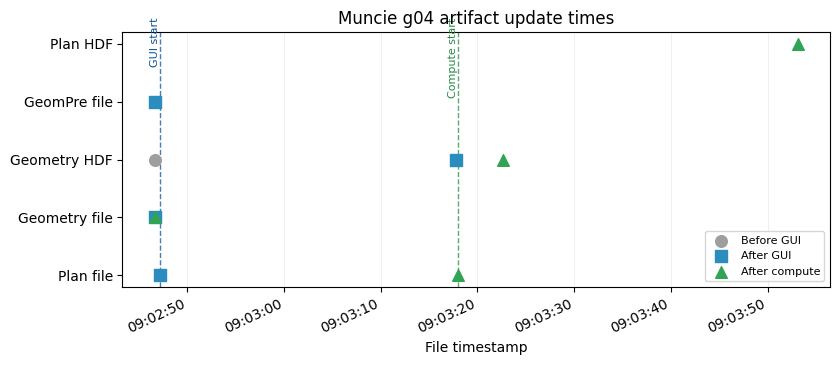
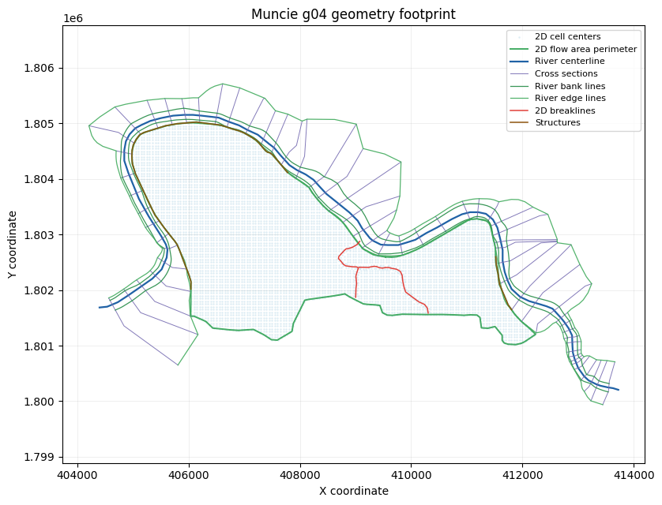
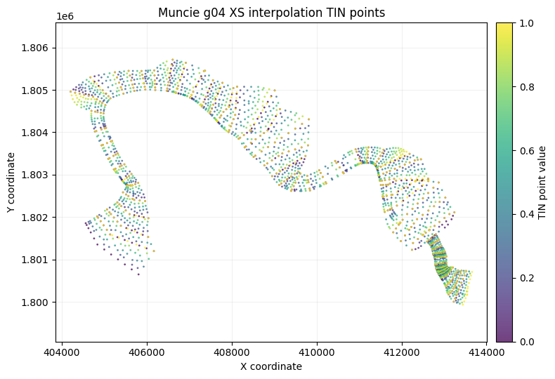
Displayed 3 validation figure(s).
{'label': 'Muncie: compute XS interpolation surface',
'project': 'Muncie',
'geometry_number': '04',
'plan_number': '02',
'status': 'passed',
'passed': True,
'plan_path': 'C:\\GH\\ras-commander\\working\\notebook_runs\\122_full_live_20260429_085928\\example_projects\\Muncie_122_rasmapper_updates_rm04_muncie_compute_xs_i\\Muncie.p02',
'plan_encoding': 'utf-8',
'geometry_path': 'C:\\GH\\ras-commander\\working\\notebook_runs\\122_full_live_20260429_085928\\example_projects\\Muncie_122_rasmapper_updates_rm04_muncie_compute_xs_i\\Muncie.g04',
'geometry_encoding': 'utf-8',
'geometry_hdf_path': 'C:\\GH\\ras-commander\\working\\notebook_runs\\122_full_live_20260429_085928\\example_projects\\Muncie_122_rasmapper_updates_rm04_muncie_compute_xs_i\\Muncie.g04.hdf',
'geometry_hdf_keys': 'Geometry',
'plan_hdf_path': 'C:\\GH\\ras-commander\\working\\notebook_runs\\122_full_live_20260429_085928\\example_projects\\Muncie_122_rasmapper_updates_rm04_muncie_compute_xs_i\\Muncie.p02.hdf',
'plan_hdf_keys': 'Event Conditions, Geometry, Plan Data, Results',
'plan_file_read': True,
'plan_shortid_updated': True,
'plan_title_updated': True,
'plan_geometry_updated': True,
'geometry_preprocessor_enabled': True,
'geometry_file_read': True,
'gui_update_succeeded': True,
'geometry_artifact_updated': True,
'geometry_hdf_read': True,
'compute_ran': True,
'compute_succeeded': True,
'result_hdf_read': True,
'result_hdf_updated': True,
'figures_displayed': 3}
Demonstration 5: Muncie: storage area elevation-volume curves¶
2026-04-29 09:03:54 - ras_commander.RasExamples - INFO - ----- RasExamples Extracting Project -----
2026-04-29 09:03:54 - ras_commander.RasExamples - INFO - Extracting project 'Muncie' as 'Muncie_122_rasmapper_updates_rm05_muncie_storage_area'
--------------------------------------------------------------------------------
Muncie: storage area elevation-volume curves
Model: Muncie -> suffix 122_rasmapper_updates_rm05_muncie_storage_area
Function: RasMapperLayerCommandWorkflow.update_storage_area_curves
Geometry: g01
Plan clone metadata: shortid=RM05_MUNCIE_STORAGE_AREA, title=RM 05 Muncie storage area elevat
Args: ('01',)
Kwargs: {'timeout': 900}
2026-04-29 09:03:54 - ras_commander.RasExamples - INFO - Successfully extracted project 'Muncie' to C:\GH\ras-commander\working\notebook_runs\122_full_live_20260429_085928\example_projects\Muncie_122_rasmapper_updates_rm05_muncie_storage_area
2026-04-29 09:03:54 - ras_commander.RasUtils - INFO - Discovered HEC-RAS 7.0 at C:\Program Files (x86)\HEC\HEC-RAS\7.0\Ras.exe via filesystem (x86)
2026-04-29 09:03:54 - ras_commander.RasUtils - INFO - Discovered HEC-RAS 6.7 Beta 5 at C:\Program Files (x86)\HEC\HEC-RAS\6.7 Beta 5\Ras.exe via filesystem (x86)
2026-04-29 09:03:54 - ras_commander.RasUtils - INFO - Discovered HEC-RAS 6.7 Beta 4 at C:\Program Files (x86)\HEC\HEC-RAS\6.7 Beta 4\Ras.exe via filesystem (x86)
2026-04-29 09:03:54 - ras_commander.RasUtils - INFO - Discovered HEC-RAS 6.5 at C:\Program Files (x86)\HEC\HEC-RAS\6.5\Ras.exe via filesystem (x86)
2026-04-29 09:03:54 - ras_commander.RasUtils - INFO - Discovered HEC-RAS 6.4.1 at C:\Program Files (x86)\HEC\HEC-RAS\6.4.1\Ras.exe via filesystem (x86)
2026-04-29 09:03:54 - ras_commander.RasUtils - INFO - Discovered HEC-RAS 6.3.1 at C:\Program Files (x86)\HEC\HEC-RAS\6.3.1\Ras.exe via filesystem (x86)
2026-04-29 09:03:54 - ras_commander.RasUtils - INFO - Discovered HEC-RAS 6.3 at C:\Program Files (x86)\HEC\HEC-RAS\6.3\Ras.exe via filesystem (x86)
2026-04-29 09:03:54 - ras_commander.RasUtils - INFO - Discovered HEC-RAS 6.2 at C:\Program Files (x86)\HEC\HEC-RAS\6.2\Ras.exe via filesystem (x86)
2026-04-29 09:03:54 - ras_commander.RasUtils - INFO - Discovered HEC-RAS 6.1 at C:\Program Files (x86)\HEC\HEC-RAS\6.1\Ras.exe via filesystem (x86)
2026-04-29 09:03:54 - ras_commander.RasUtils - INFO - Discovered HEC-RAS 6.0 at C:\Program Files (x86)\HEC\HEC-RAS\6.0\Ras.exe via filesystem (x86)
2026-04-29 09:03:54 - ras_commander.RasUtils - INFO - Discovered HEC-RAS 5.0.7 at C:\Program Files (x86)\HEC\HEC-RAS\5.0.7\Ras.exe via filesystem (x86)
2026-04-29 09:03:54 - ras_commander.RasUtils - INFO - Discovered HEC-RAS 5.0.6 at C:\Program Files (x86)\HEC\HEC-RAS\5.0.6\Ras.exe via filesystem (x86)
2026-04-29 09:03:54 - ras_commander.RasUtils - INFO - Discovered HEC-RAS 5.0.5 at C:\Program Files (x86)\HEC\HEC-RAS\5.0.5\Ras.exe via filesystem (x86)
2026-04-29 09:03:54 - ras_commander.RasUtils - INFO - Discovered HEC-RAS 5.0.4 at C:\Program Files (x86)\HEC\HEC-RAS\5.0.4\Ras.exe via filesystem (x86)
2026-04-29 09:03:54 - ras_commander.RasUtils - INFO - Discovered HEC-RAS 5.0.3 at C:\Program Files (x86)\HEC\HEC-RAS\5.0.3\Ras.exe via filesystem (x86)
2026-04-29 09:03:54 - ras_commander.RasUtils - INFO - Discovered HEC-RAS 5.0.1 at C:\Program Files (x86)\HEC\HEC-RAS\5.0.1\Ras.exe via filesystem (x86)
2026-04-29 09:03:54 - ras_commander.RasUtils - INFO - Discovered HEC-RAS 5.0 at C:\Program Files (x86)\HEC\HEC-RAS\5.0\Ras.exe via filesystem (x86)
2026-04-29 09:03:54 - ras_commander.RasUtils - INFO - Discovered HEC-RAS 4.1.0 at C:\Program Files (x86)\HEC\HEC-RAS\4.1.0\Ras.exe via filesystem (x86)
2026-04-29 09:03:54 - ras_commander.RasUtils - INFO - Discovered HEC-RAS 4.0 at C:\Program Files (x86)\HEC\HEC-RAS\4.0\Ras.exe via filesystem (x86)
2026-04-29 09:03:54 - ras_commander.RasUtils - INFO - Discovered HEC-RAS 6.6 at C:\Program Files (x86)\HEC\HEC-RAS\6.6\Ras.exe via filesystem (x86)
2026-04-29 09:03:54 - ras_commander.RasUtils - INFO - Discovered 20 installed HEC-RAS version(s)
2026-04-29 09:03:54 - ras_commander.RasPrj - INFO - HEC-RAS 7.0 found via version discovery: C:\Program Files (x86)\HEC\HEC-RAS\7.0\Ras.exe
2026-04-29 09:03:54 - ras_commander.RasMap - INFO - Successfully parsed RASMapper file: C:\GH\ras-commander\working\notebook_runs\122_full_live_20260429_085928\example_projects\Muncie_122_rasmapper_updates_rm05_muncie_storage_area\Muncie.rasmap
2026-04-29 09:03:54 - ras_commander.hdf.HdfBase - INFO - Found projection in projection file: C:\GH\ras-commander\working\notebook_runs\122_full_live_20260429_085928\example_projects\Muncie_122_rasmapper_updates_rm05_muncie_storage_area\GIS_Data\Muncie_IA_Clip.prj
2026-04-29 09:03:54 - ras_commander.RasPrj - INFO - Updated results_df with 3 plan(s)
2026-04-29 09:03:54 - ras_commander.RasPrj - INFO - ras-commander v0.94.0 | An open-source project of CLB Engineering Corporation (https://clbengineering.com/) | Docs: https://ras-commander.readthedocs.io | GitHub: https://github.com/gpt-cmdr/ras-commander
2026-04-29 09:03:54 - ras_commander.RasPrj - INFO - Project initialized: Muncie | Folder: C:\GH\ras-commander\working\notebook_runs\122_full_live_20260429_085928\example_projects\Muncie_122_rasmapper_updates_rm05_muncie_storage_area
2026-04-29 09:03:54 - ras_commander.RasPrj - INFO - Using HEC-RAS executable: C:\Program Files (x86)\HEC\HEC-RAS\7.0\Ras.exe
2026-04-29 09:03:54 - ras_commander.RasUtils - INFO - File cloned from C:\GH\ras-commander\working\notebook_runs\122_full_live_20260429_085928\example_projects\Muncie_122_rasmapper_updates_rm05_muncie_storage_area\Muncie.p01 to C:\GH\ras-commander\working\notebook_runs\122_full_live_20260429_085928\example_projects\Muncie_122_rasmapper_updates_rm05_muncie_storage_area\Muncie.p02
2026-04-29 09:03:54 - ras_commander.RasUtils - INFO - Successfully updated file: C:\GH\ras-commander\working\notebook_runs\122_full_live_20260429_085928\example_projects\Muncie_122_rasmapper_updates_rm05_muncie_storage_area\Muncie.p02
2026-04-29 09:03:54 - ras_commander.RasUtils - INFO - Project file updated with new Plan entry: 02
2026-04-29 09:03:54 - ras_commander.RasMap - INFO - Successfully parsed RASMapper file: C:\GH\ras-commander\working\notebook_runs\122_full_live_20260429_085928\example_projects\Muncie_122_rasmapper_updates_rm05_muncie_storage_area\Muncie.rasmap
2026-04-29 09:03:54 - ras_commander.hdf.HdfBase - INFO - Found projection in projection file: C:\GH\ras-commander\working\notebook_runs\122_full_live_20260429_085928\example_projects\Muncie_122_rasmapper_updates_rm05_muncie_storage_area\GIS_Data\Muncie_IA_Clip.prj
2026-04-29 09:03:54 - ras_commander.RasPrj - INFO - Updated results_df with 4 plan(s)
2026-04-29 09:03:54 - ras_commander.RasPlan - INFO - Updated Geom File in plan file to g01 for plan 02
2026-04-29 09:03:54 - ras_commander.RasPlan - INFO - Geometry for plan 02 set to 01
2026-04-29 09:03:54 - ras_commander.RasPlan - INFO - Successfully updated run flags in plan file: C:\GH\ras-commander\working\notebook_runs\122_full_live_20260429_085928\example_projects\Muncie_122_rasmapper_updates_rm05_muncie_storage_area\Muncie.p02 (flags modified: 1)
2026-04-29 09:03:54 - ras_commander.RasUtils - INFO - Constructed plan file path: C:\GH\ras-commander\working\notebook_runs\122_full_live_20260429_085928\example_projects\Muncie_122_rasmapper_updates_rm05_muncie_storage_area\Muncie.p02
2026-04-29 09:03:54 - ras_commander.RasPlan - INFO - Updated Short Identifier in plan file to: RM05_MUNCIE_STORAGE_AREA
2026-04-29 09:03:54 - ras_commander.RasUtils - INFO - Constructed plan file path: C:\GH\ras-commander\working\notebook_runs\122_full_live_20260429_085928\example_projects\Muncie_122_rasmapper_updates_rm05_muncie_storage_area\Muncie.p02
2026-04-29 09:03:54 - ras_commander.RasPlan - INFO - Updated Plan Title in plan file to: RM 05 Muncie storage area elevat
2026-04-29 09:03:54 - ras_commander.RasPlan - INFO - Successfully updated run flags in plan file: C:\GH\ras-commander\working\notebook_runs\122_full_live_20260429_085928\example_projects\Muncie_122_rasmapper_updates_rm05_muncie_storage_area\Muncie.p02 (flags modified: 1)
2026-04-29 09:03:54 - ras_commander.RasMap - INFO - Found 3 geometries in .rasmap
2026-04-29 09:03:54 - ras_commander.gui.workflow_base - INFO - Starting RASMapperLayerCommand[Storage Areas > Compute Elevation-Volume Data] (8 steps)
2026-04-29 09:03:54 - ras_commander.gui.workflow_base - INFO - [1/8] Verify HEC-RAS is closed
2026-04-29 09:03:54 - ras_commander.gui.workflow_base - INFO - [1/8] Verify HEC-RAS is closed completed (0.0s)
2026-04-29 09:03:54 - ras_commander.gui.workflow_base - INFO - [2/8] Launch HEC-RAS
2026-04-29 09:03:54 - ras_commander.gui.hecras_elements - INFO - Opening HEC-RAS...
2026-04-29 09:03:54 - ras_commander.gui.hecras_elements - INFO - HEC-RAS opened with Process ID: 70188
2026-04-29 09:03:55 - ras_commander.gui.hecras_elements - INFO - Found 'already running' dialog - clicking Yes to continue
2026-04-29 09:03:55 - ras_commander.gui.win32_primitives - INFO - Clicked button: &Yes
2026-04-29 09:03:55 - ras_commander.gui.hecras_elements - INFO - Clicked 'Yes' button on already running dialog
2026-04-29 09:03:56 - ras_commander.gui.hecras_elements - INFO - Waiting for HEC-RAS main window...
2026-04-29 09:03:58 - ras_commander.gui.hecras_elements - INFO - Found HEC-RAS main window: HEC-RAS 7.0
2026-04-29 09:03:58 - ras_commander.gui.workflow_base - INFO - [2/8] Launch HEC-RAS completed (3.5s)
2026-04-29 09:03:58 - ras_commander.gui.workflow_base - INFO - [3/8] Open RASMapper
2026-04-29 09:03:58 - ras_commander.gui.hecras_elements - INFO - Found menu item: 'RAS Mapper ...' (ID: 103)
2026-04-29 09:03:58 - ras_commander.gui.win32_primitives - INFO - Clicked menu item ID: 103
2026-04-29 09:03:58 - ras_commander.gui.workflow_base - INFO - [3/8] Open RASMapper completed (0.5s)
2026-04-29 09:03:58 - ras_commander.gui.workflow_base - INFO - [4/8] Wait for RASMapper
2026-04-29 09:04:01 - ras_commander.gui.rasmapper_elements - INFO - RASMapper opened: RAS Mapper (took 3s)
2026-04-29 09:04:01 - ras_commander.gui.workflow_base - INFO - [4/8] Wait for RASMapper completed (3.0s)
2026-04-29 09:04:01 - ras_commander.gui.workflow_base - INFO - [5/8] Start geometry editing
[*] Trying physical mouse right-click...
[*] Physical mouse click at screen (503, 240)
[+] Context menu via physical mouse: hwnd=0xa6156e
[+] Found menu path item: 'Edit Geometry'
2026-04-29 09:04:07 - ras_commander.gui.workflows.xsec_update - INFO - Started RASMapper geometry edit mode
2026-04-29 09:04:08 - ras_commander.gui.workflow_base - INFO - [5/8] Start geometry editing completed (6.8s)
2026-04-29 09:04:08 - ras_commander.gui.workflow_base - INFO - [6/8] Run layer command
[*] Trying physical mouse right-click...
[*] Physical mouse click at screen (503, 240)
[+] Context menu via physical mouse: hwnd=0xa6156e
[+] Found menu path item: 'Compute Elevation-Volume Data'
2026-04-29 09:04:13 - ras_commander.gui.workflows.xsec_update - INFO - Triggered RASMapper layer command: Muncie Base Geometry - 9 SAs > Storage Areas > Compute Elevation-Volume Data
2026-04-29 09:04:13 - ras_commander.gui.workflow_base - INFO - [6/8] Run layer command completed (5.3s)
2026-04-29 09:04:13 - ras_commander.gui.workflow_base - INFO - [7/8] Wait for command to complete
2026-04-29 09:04:21 - ras_commander.gui.rasmapper_elements - INFO - RASMapper remained responsive; treating as idle (6s)
2026-04-29 09:04:21 - ras_commander.gui.workflow_base - INFO - [7/8] Wait for command to complete completed (8.0s)
2026-04-29 09:04:21 - ras_commander.gui.workflow_base - INFO - [8/8] Save geometry
2026-04-29 09:04:22 - ras_commander.gui.workflows.xsec_update - INFO - Sent Ctrl+S to RASMapper
2026-04-29 09:04:22 - ras_commander.gui.workflow_base - INFO - [8/8] Save geometry completed (0.7s)
2026-04-29 09:04:22 - ras_commander.gui.workflow_base - INFO - RASMapperLayerCommand[Storage Areas > Compute Elevation-Volume Data] completed successfully (27.8s)
2026-04-29 09:04:22 - ras_commander.gui.win32_primitives - INFO - Closed window: RAS Mapper
2026-04-29 09:04:24 - ras_commander.gui.win32_primitives - INFO - Clicked button: &No
2026-04-29 09:04:24 - ras_commander.gui.hecras_elements - INFO - Dismissed save prompt
2026-04-29 09:04:24 - ras_commander.gui.win32_primitives - INFO - Closed window: HEC-RAS 7.0
2026-04-29 09:04:24 - ras_commander.RasCmdr - INFO - Using ras_object with project folder: C:\GH\ras-commander\working\notebook_runs\122_full_live_20260429_085928\example_projects\Muncie_122_rasmapper_updates_rm05_muncie_storage_area
2026-04-29 09:04:24 - ras_commander.RasCurrency - INFO - Deleted geometry HDF: C:\GH\ras-commander\working\notebook_runs\122_full_live_20260429_085928\example_projects\Muncie_122_rasmapper_updates_rm05_muncie_storage_area\Muncie.g01.hdf
2026-04-29 09:04:24 - ras_commander.geom.GeomPreprocessor - INFO - Clearing geometry preprocessor file for single plan: C:\GH\ras-commander\working\notebook_runs\122_full_live_20260429_085928\example_projects\Muncie_122_rasmapper_updates_rm05_muncie_storage_area\Muncie.p02
2026-04-29 09:04:24 - ras_commander.geom.GeomPreprocessor - INFO - Deleted geometry preprocessor file: C:\GH\ras-commander\working\notebook_runs\122_full_live_20260429_085928\example_projects\Muncie_122_rasmapper_updates_rm05_muncie_storage_area\Muncie.c01
2026-04-29 09:04:24 - ras_commander.geom.GeomPreprocessor - INFO - Geometry dataframe updated successfully.
2026-04-29 09:04:25 - ras_commander.RasCmdr - INFO - Force-cleared all geometry preprocessor files for plan: 02
2026-04-29 09:04:25 - ras_commander.RasUtils - INFO - Using provided plan file path: C:\GH\ras-commander\working\notebook_runs\122_full_live_20260429_085928\example_projects\Muncie_122_rasmapper_updates_rm05_muncie_storage_area\Muncie.p02
2026-04-29 09:04:25 - ras_commander.RasUtils - INFO - Successfully updated file: C:\GH\ras-commander\working\notebook_runs\122_full_live_20260429_085928\example_projects\Muncie_122_rasmapper_updates_rm05_muncie_storage_area\Muncie.p02
2026-04-29 09:04:25 - ras_commander.RasCmdr - INFO - Set number of cores to 2 for plan: 02
2026-04-29 09:04:25 - ras_commander.RasCmdr - INFO - Running HEC-RAS from the Command Line:
2026-04-29 09:04:25 - ras_commander.RasCmdr - INFO - Running command: "C:\Program Files (x86)\HEC\HEC-RAS\7.0\Ras.exe" -c "C:\GH\ras-commander\working\notebook_runs\122_full_live_20260429_085928\example_projects\Muncie_122_rasmapper_updates_rm05_muncie_storage_area\Muncie.prj" "C:\GH\ras-commander\working\notebook_runs\122_full_live_20260429_085928\example_projects\Muncie_122_rasmapper_updates_rm05_muncie_storage_area\Muncie.p02"
GUI update success: True
2026-04-29 09:04:38 - ras_commander.RasCmdr - INFO - HEC-RAS execution completed for plan: 02
2026-04-29 09:04:38 - ras_commander.RasCmdr - INFO - Total run time for plan 02: 13.08 seconds
2026-04-29 09:04:38 - ras_commander.hdf.HdfResultsPlan - INFO - Using existing Path object HDF file: C:\GH\ras-commander\working\notebook_runs\122_full_live_20260429_085928\example_projects\Muncie_122_rasmapper_updates_rm05_muncie_storage_area\Muncie.p02.hdf
2026-04-29 09:04:38 - ras_commander.hdf.HdfResultsPlan - INFO - Final validated file path: C:\GH\ras-commander\working\notebook_runs\122_full_live_20260429_085928\example_projects\Muncie_122_rasmapper_updates_rm05_muncie_storage_area\Muncie.p02.hdf
2026-04-29 09:04:38 - ras_commander.hdf.HdfResultsPlan - INFO - Reading computation messages from HDF: Muncie.p02.hdf
2026-04-29 09:04:38 - ras_commander.hdf.HdfResultsPlan - INFO - Successfully extracted 2661 characters from HDF
2026-04-29 09:04:38 - ras_commander.hdf.HdfResultsPlan - INFO - Using existing Path object HDF file: C:\GH\ras-commander\working\notebook_runs\122_full_live_20260429_085928\example_projects\Muncie_122_rasmapper_updates_rm05_muncie_storage_area\Muncie.p02.hdf
2026-04-29 09:04:38 - ras_commander.hdf.HdfResultsPlan - INFO - Final validated file path: C:\GH\ras-commander\working\notebook_runs\122_full_live_20260429_085928\example_projects\Muncie_122_rasmapper_updates_rm05_muncie_storage_area\Muncie.p02.hdf
2026-04-29 09:04:38 - ras_commander.hdf.HdfResultsPlan - INFO - Extracting Plan Information from: Muncie.p02.hdf
2026-04-29 09:04:38 - ras_commander.hdf.HdfResultsPlan - INFO - Plan Name: RM 05 Muncie storage area elevat
2026-04-29 09:04:38 - ras_commander.hdf.HdfResultsPlan - INFO - Simulation Duration (hours): 24.0
2026-04-29 09:04:38 - ras_commander.hdf.HdfResultsPlan - INFO - Using existing Path object HDF file: C:\GH\ras-commander\working\notebook_runs\122_full_live_20260429_085928\example_projects\Muncie_122_rasmapper_updates_rm05_muncie_storage_area\Muncie.p02.hdf
2026-04-29 09:04:38 - ras_commander.hdf.HdfResultsPlan - INFO - Final validated file path: C:\GH\ras-commander\working\notebook_runs\122_full_live_20260429_085928\example_projects\Muncie_122_rasmapper_updates_rm05_muncie_storage_area\Muncie.p02.hdf
2026-04-29 09:04:38 - ras_commander.RasPrj - INFO - Updated results_df with 1 plan(s)
Compute success: True
WorkflowResult(success=True, steps_completed=['Verify HEC-RAS is closed', 'Launch HEC-RAS', 'Open RASMapper', 'Wait for RASMapper', 'Start geometry editing', 'Run layer command', 'Wait for command to complete', 'Save geometry'], steps_failed=[], step_results={'Verify HEC-RAS is closed': None, 'Launch HEC-RAS': None, 'Open RASMapper': None, 'Wait for RASMapper': None, 'Start geometry editing': None, 'Run layer command': None, 'Wait for command to complete': None, 'Save geometry': None}, elapsed_seconds=27.785340309143066, error=None)
| label | project | geometry_number | plan_number | status | passed | plan_path | plan_encoding | geometry_path | geometry_encoding | ... | plan_geometry_updated | geometry_preprocessor_enabled | geometry_file_read | gui_update_succeeded | geometry_artifact_updated | geometry_hdf_read | compute_ran | compute_succeeded | result_hdf_read | result_hdf_updated | |
|---|---|---|---|---|---|---|---|---|---|---|---|---|---|---|---|---|---|---|---|---|---|
| 0 | Muncie: storage area elevation-volume curves | Muncie | 01 | 02 | passed | True | C:\GH\ras-commander\working\notebook_runs\122_... | utf-8 | C:\GH\ras-commander\working\notebook_runs\122_... | utf-8 | ... | True | True | True | True | True | True | True | True | True | True |
1 rows × 27 columns
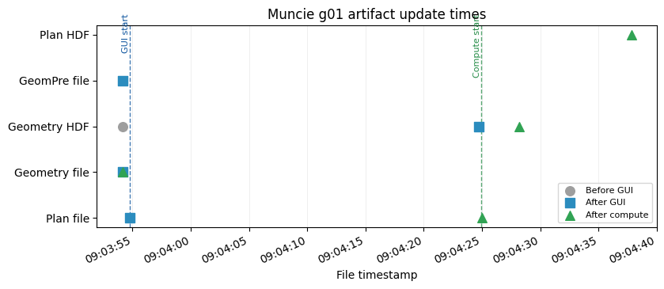

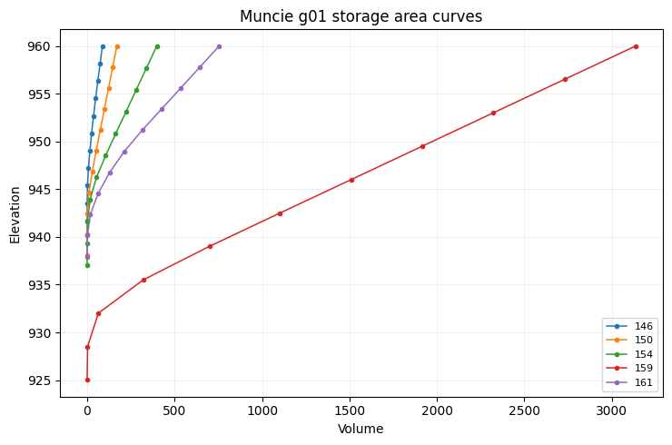
Displayed 3 validation figure(s).
{'label': 'Muncie: storage area elevation-volume curves',
'project': 'Muncie',
'geometry_number': '01',
'plan_number': '02',
'status': 'passed',
'passed': True,
'plan_path': 'C:\\GH\\ras-commander\\working\\notebook_runs\\122_full_live_20260429_085928\\example_projects\\Muncie_122_rasmapper_updates_rm05_muncie_storage_area\\Muncie.p02',
'plan_encoding': 'utf-8',
'geometry_path': 'C:\\GH\\ras-commander\\working\\notebook_runs\\122_full_live_20260429_085928\\example_projects\\Muncie_122_rasmapper_updates_rm05_muncie_storage_area\\Muncie.g01',
'geometry_encoding': 'utf-8',
'geometry_hdf_path': 'C:\\GH\\ras-commander\\working\\notebook_runs\\122_full_live_20260429_085928\\example_projects\\Muncie_122_rasmapper_updates_rm05_muncie_storage_area\\Muncie.g01.hdf',
'geometry_hdf_keys': 'Geometry',
'plan_hdf_path': 'C:\\GH\\ras-commander\\working\\notebook_runs\\122_full_live_20260429_085928\\example_projects\\Muncie_122_rasmapper_updates_rm05_muncie_storage_area\\Muncie.p02.hdf',
'plan_hdf_keys': 'Event Conditions, Geometry, Plan Data, Results',
'plan_file_read': True,
'plan_shortid_updated': True,
'plan_title_updated': True,
'plan_geometry_updated': True,
'geometry_preprocessor_enabled': True,
'geometry_file_read': True,
'gui_update_succeeded': True,
'geometry_artifact_updated': True,
'geometry_hdf_read': True,
'compute_ran': True,
'compute_succeeded': True,
'result_hdf_read': True,
'result_hdf_updated': True,
'figures_displayed': 3}
Demonstration 6: BaldEagle Multi2D: SA/2D connection from/to¶
2026-04-29 09:04:38 - ras_commander.RasExamples - INFO - ----- RasExamples Extracting Project -----
2026-04-29 09:04:38 - ras_commander.RasExamples - INFO - Extracting project 'BaldEagleCrkMulti2D' as 'BaldEagleCrkMulti2D_122_rasmapper_updates_rm06_baldeagle_multi2d_s'
--------------------------------------------------------------------------------
BaldEagle Multi2D: SA/2D connection from/to
Model: BaldEagleCrkMulti2D -> suffix 122_rasmapper_updates_rm06_baldeagle_multi2d_s
Function: RasMapperLayerCommandWorkflow.update_sa2d_connections
Geometry: g12
Plan clone metadata: shortid=RM06_BALDEAGLE_MULTI2D_S, title=RM 06 BaldEagle Multi2D SA 2D co
Args: ('12', 'connection_from_to')
Kwargs: {'timeout': 900}
2026-04-29 09:04:40 - ras_commander.RasExamples - INFO - Successfully extracted project 'BaldEagleCrkMulti2D' to C:\GH\ras-commander\working\notebook_runs\122_full_live_20260429_085928\example_projects\BaldEagleCrkMulti2D_122_rasmapper_updates_rm06_baldeagle_multi2d_s
2026-04-29 09:04:40 - ras_commander.RasUtils - INFO - Discovered HEC-RAS 7.0 at C:\Program Files (x86)\HEC\HEC-RAS\7.0\Ras.exe via filesystem (x86)
2026-04-29 09:04:40 - ras_commander.RasUtils - INFO - Discovered HEC-RAS 6.7 Beta 5 at C:\Program Files (x86)\HEC\HEC-RAS\6.7 Beta 5\Ras.exe via filesystem (x86)
2026-04-29 09:04:40 - ras_commander.RasUtils - INFO - Discovered HEC-RAS 6.7 Beta 4 at C:\Program Files (x86)\HEC\HEC-RAS\6.7 Beta 4\Ras.exe via filesystem (x86)
2026-04-29 09:04:40 - ras_commander.RasUtils - INFO - Discovered HEC-RAS 6.5 at C:\Program Files (x86)\HEC\HEC-RAS\6.5\Ras.exe via filesystem (x86)
2026-04-29 09:04:40 - ras_commander.RasUtils - INFO - Discovered HEC-RAS 6.4.1 at C:\Program Files (x86)\HEC\HEC-RAS\6.4.1\Ras.exe via filesystem (x86)
2026-04-29 09:04:40 - ras_commander.RasUtils - INFO - Discovered HEC-RAS 6.3.1 at C:\Program Files (x86)\HEC\HEC-RAS\6.3.1\Ras.exe via filesystem (x86)
2026-04-29 09:04:40 - ras_commander.RasUtils - INFO - Discovered HEC-RAS 6.3 at C:\Program Files (x86)\HEC\HEC-RAS\6.3\Ras.exe via filesystem (x86)
2026-04-29 09:04:40 - ras_commander.RasUtils - INFO - Discovered HEC-RAS 6.2 at C:\Program Files (x86)\HEC\HEC-RAS\6.2\Ras.exe via filesystem (x86)
2026-04-29 09:04:40 - ras_commander.RasUtils - INFO - Discovered HEC-RAS 6.1 at C:\Program Files (x86)\HEC\HEC-RAS\6.1\Ras.exe via filesystem (x86)
2026-04-29 09:04:40 - ras_commander.RasUtils - INFO - Discovered HEC-RAS 6.0 at C:\Program Files (x86)\HEC\HEC-RAS\6.0\Ras.exe via filesystem (x86)
2026-04-29 09:04:40 - ras_commander.RasUtils - INFO - Discovered HEC-RAS 5.0.7 at C:\Program Files (x86)\HEC\HEC-RAS\5.0.7\Ras.exe via filesystem (x86)
2026-04-29 09:04:40 - ras_commander.RasUtils - INFO - Discovered HEC-RAS 5.0.6 at C:\Program Files (x86)\HEC\HEC-RAS\5.0.6\Ras.exe via filesystem (x86)
2026-04-29 09:04:40 - ras_commander.RasUtils - INFO - Discovered HEC-RAS 5.0.5 at C:\Program Files (x86)\HEC\HEC-RAS\5.0.5\Ras.exe via filesystem (x86)
2026-04-29 09:04:40 - ras_commander.RasUtils - INFO - Discovered HEC-RAS 5.0.4 at C:\Program Files (x86)\HEC\HEC-RAS\5.0.4\Ras.exe via filesystem (x86)
2026-04-29 09:04:40 - ras_commander.RasUtils - INFO - Discovered HEC-RAS 5.0.3 at C:\Program Files (x86)\HEC\HEC-RAS\5.0.3\Ras.exe via filesystem (x86)
2026-04-29 09:04:40 - ras_commander.RasUtils - INFO - Discovered HEC-RAS 5.0.1 at C:\Program Files (x86)\HEC\HEC-RAS\5.0.1\Ras.exe via filesystem (x86)
2026-04-29 09:04:40 - ras_commander.RasUtils - INFO - Discovered HEC-RAS 5.0 at C:\Program Files (x86)\HEC\HEC-RAS\5.0\Ras.exe via filesystem (x86)
2026-04-29 09:04:40 - ras_commander.RasUtils - INFO - Discovered HEC-RAS 4.1.0 at C:\Program Files (x86)\HEC\HEC-RAS\4.1.0\Ras.exe via filesystem (x86)
2026-04-29 09:04:40 - ras_commander.RasUtils - INFO - Discovered HEC-RAS 4.0 at C:\Program Files (x86)\HEC\HEC-RAS\4.0\Ras.exe via filesystem (x86)
2026-04-29 09:04:40 - ras_commander.RasUtils - INFO - Discovered HEC-RAS 6.6 at C:\Program Files (x86)\HEC\HEC-RAS\6.6\Ras.exe via filesystem (x86)
2026-04-29 09:04:40 - ras_commander.RasUtils - INFO - Discovered 20 installed HEC-RAS version(s)
2026-04-29 09:04:40 - ras_commander.RasPrj - INFO - HEC-RAS 7.0 found via version discovery: C:\Program Files (x86)\HEC\HEC-RAS\7.0\Ras.exe
2026-04-29 09:04:40 - ras_commander.RasMap - INFO - Successfully parsed RASMapper file: C:\GH\ras-commander\working\notebook_runs\122_full_live_20260429_085928\example_projects\BaldEagleCrkMulti2D_122_rasmapper_updates_rm06_baldeagle_multi2d_s\BaldEagleDamBrk.rasmap
2026-04-29 09:04:40 - ras_commander.hdf.HdfBase - INFO - Found projection in HDF file: C:\GH\ras-commander\working\notebook_runs\122_full_live_20260429_085928\example_projects\BaldEagleCrkMulti2D_122_rasmapper_updates_rm06_baldeagle_multi2d_s\BaldEagleDamBrk.g09.hdf
2026-04-29 09:04:40 - ras_commander.hdf.HdfBase - INFO - Converted WKT to EPSG:2271 from HDF file BaldEagleDamBrk.g09.hdf
2026-04-29 09:04:40 - ras_commander.RasPrj - INFO - Updated results_df with 11 plan(s)
2026-04-29 09:04:40 - ras_commander.RasPrj - INFO - ras-commander v0.94.0 | An open-source project of CLB Engineering Corporation (https://clbengineering.com/) | Docs: https://ras-commander.readthedocs.io | GitHub: https://github.com/gpt-cmdr/ras-commander
2026-04-29 09:04:40 - ras_commander.RasPrj - INFO - Project initialized: BaldEagleDamBrk | Folder: C:\GH\ras-commander\working\notebook_runs\122_full_live_20260429_085928\example_projects\BaldEagleCrkMulti2D_122_rasmapper_updates_rm06_baldeagle_multi2d_s
2026-04-29 09:04:40 - ras_commander.RasPrj - INFO - Using HEC-RAS executable: C:\Program Files (x86)\HEC\HEC-RAS\7.0\Ras.exe
2026-04-29 09:04:40 - ras_commander.RasUtils - INFO - File cloned from C:\GH\ras-commander\working\notebook_runs\122_full_live_20260429_085928\example_projects\BaldEagleCrkMulti2D_122_rasmapper_updates_rm06_baldeagle_multi2d_s\BaldEagleDamBrk.p19 to C:\GH\ras-commander\working\notebook_runs\122_full_live_20260429_085928\example_projects\BaldEagleCrkMulti2D_122_rasmapper_updates_rm06_baldeagle_multi2d_s\BaldEagleDamBrk.p07
2026-04-29 09:04:40 - ras_commander.RasUtils - INFO - Successfully updated file: C:\GH\ras-commander\working\notebook_runs\122_full_live_20260429_085928\example_projects\BaldEagleCrkMulti2D_122_rasmapper_updates_rm06_baldeagle_multi2d_s\BaldEagleDamBrk.p07
2026-04-29 09:04:40 - ras_commander.RasUtils - INFO - Project file updated with new Plan entry: 07
2026-04-29 09:04:40 - ras_commander.RasMap - INFO - Successfully parsed RASMapper file: C:\GH\ras-commander\working\notebook_runs\122_full_live_20260429_085928\example_projects\BaldEagleCrkMulti2D_122_rasmapper_updates_rm06_baldeagle_multi2d_s\BaldEagleDamBrk.rasmap
2026-04-29 09:04:40 - ras_commander.hdf.HdfBase - INFO - Found projection in HDF file: C:\GH\ras-commander\working\notebook_runs\122_full_live_20260429_085928\example_projects\BaldEagleCrkMulti2D_122_rasmapper_updates_rm06_baldeagle_multi2d_s\BaldEagleDamBrk.g09.hdf
2026-04-29 09:04:40 - ras_commander.hdf.HdfBase - INFO - Converted WKT to EPSG:2271 from HDF file BaldEagleDamBrk.g09.hdf
2026-04-29 09:04:40 - ras_commander.RasPrj - INFO - Updated results_df with 12 plan(s)
2026-04-29 09:04:40 - ras_commander.RasPlan - INFO - Updated Geom File in plan file to g12 for plan 07
2026-04-29 09:04:40 - ras_commander.RasPlan - INFO - Geometry for plan 07 set to 12
2026-04-29 09:04:40 - ras_commander.RasPlan - INFO - Successfully updated run flags in plan file: C:\GH\ras-commander\working\notebook_runs\122_full_live_20260429_085928\example_projects\BaldEagleCrkMulti2D_122_rasmapper_updates_rm06_baldeagle_multi2d_s\BaldEagleDamBrk.p07 (flags modified: 1)
2026-04-29 09:04:40 - ras_commander.RasUtils - INFO - Constructed plan file path: C:\GH\ras-commander\working\notebook_runs\122_full_live_20260429_085928\example_projects\BaldEagleCrkMulti2D_122_rasmapper_updates_rm06_baldeagle_multi2d_s\BaldEagleDamBrk.p07
2026-04-29 09:04:40 - ras_commander.RasPlan - INFO - Updated Short Identifier in plan file to: RM06_BALDEAGLE_MULTI2D_S
2026-04-29 09:04:40 - ras_commander.RasUtils - INFO - Constructed plan file path: C:\GH\ras-commander\working\notebook_runs\122_full_live_20260429_085928\example_projects\BaldEagleCrkMulti2D_122_rasmapper_updates_rm06_baldeagle_multi2d_s\BaldEagleDamBrk.p07
2026-04-29 09:04:40 - ras_commander.RasPlan - INFO - Updated Plan Title in plan file to: RM 06 BaldEagle Multi2D SA 2D co
2026-04-29 09:04:40 - ras_commander.RasPlan - INFO - Successfully updated run flags in plan file: C:\GH\ras-commander\working\notebook_runs\122_full_live_20260429_085928\example_projects\BaldEagleCrkMulti2D_122_rasmapper_updates_rm06_baldeagle_multi2d_s\BaldEagleDamBrk.p07 (flags modified: 1)
2026-04-29 09:04:40 - ras_commander.RasMap - INFO - Found 10 geometries in .rasmap
2026-04-29 09:04:40 - ras_commander.gui.workflow_base - INFO - Starting RASMapperLayerCommand[SA/2D Connections > Update SA/2D Connections > Connection From/To] (8 steps)
2026-04-29 09:04:40 - ras_commander.gui.workflow_base - INFO - [1/8] Verify HEC-RAS is closed
2026-04-29 09:04:40 - ras_commander.gui.workflow_base - INFO - [1/8] Verify HEC-RAS is closed completed (0.0s)
2026-04-29 09:04:40 - ras_commander.gui.workflow_base - INFO - [2/8] Launch HEC-RAS
2026-04-29 09:04:40 - ras_commander.gui.hecras_elements - INFO - Opening HEC-RAS...
2026-04-29 09:04:40 - ras_commander.gui.hecras_elements - INFO - HEC-RAS opened with Process ID: 20148
2026-04-29 09:04:41 - ras_commander.gui.hecras_elements - INFO - Found 'already running' dialog - clicking Yes to continue
2026-04-29 09:04:41 - ras_commander.gui.win32_primitives - INFO - Clicked button: &Yes
2026-04-29 09:04:41 - ras_commander.gui.hecras_elements - INFO - Clicked 'Yes' button on already running dialog
2026-04-29 09:04:42 - ras_commander.gui.hecras_elements - INFO - Waiting for HEC-RAS main window...
2026-04-29 09:04:44 - ras_commander.gui.hecras_elements - INFO - Found HEC-RAS main window: HEC-RAS 7.0
2026-04-29 09:04:44 - ras_commander.gui.workflow_base - INFO - [2/8] Launch HEC-RAS completed (3.5s)
2026-04-29 09:04:44 - ras_commander.gui.workflow_base - INFO - [3/8] Open RASMapper
2026-04-29 09:04:44 - ras_commander.gui.hecras_elements - INFO - Found menu item: 'RAS Mapper ...' (ID: 103)
2026-04-29 09:04:44 - ras_commander.gui.win32_primitives - INFO - Clicked menu item ID: 103
2026-04-29 09:04:44 - ras_commander.gui.workflow_base - INFO - [3/8] Open RASMapper completed (0.5s)
2026-04-29 09:04:44 - ras_commander.gui.workflow_base - INFO - [4/8] Wait for RASMapper
2026-04-29 09:05:00 - ras_commander.gui.rasmapper_elements - INFO - RASMapper opened: RAS Mapper (took 15s)
2026-04-29 09:05:00 - ras_commander.gui.workflow_base - INFO - [4/8] Wait for RASMapper completed (15.4s)
2026-04-29 09:05:00 - ras_commander.gui.workflow_base - INFO - [5/8] Start geometry editing
[*] Trying physical mouse right-click...
[*] Physical mouse click at screen (511, 304)
[+] Context menu via physical mouse: hwnd=0x3814a4
[+] Found menu path item: 'Edit Geometry'
2026-04-29 09:05:06 - ras_commander.gui.workflows.xsec_update - INFO - Started RASMapper geometry edit mode
2026-04-29 09:05:07 - ras_commander.gui.workflow_base - INFO - [5/8] Start geometry editing completed (6.9s)
2026-04-29 09:05:07 - ras_commander.gui.workflow_base - INFO - [6/8] Run layer command
[*] Trying physical mouse right-click...
[*] Physical mouse click at screen (511, 384)
[+] Context menu via physical mouse: hwnd=0x3814a4
[+] Found menu path item: 'Update SA/2D Connections (1 of 1)'
[+] Found menu path item: 'Connection From/To'
2026-04-29 09:05:14 - ras_commander.gui.workflows.xsec_update - INFO - Triggered RASMapper layer command: SA to 2D Connection > SA/2D Connections > Update SA/2D Connections > Connection From/To
2026-04-29 09:05:14 - ras_commander.gui.workflow_base - INFO - [6/8] Run layer command completed (7.1s)
2026-04-29 09:05:14 - ras_commander.gui.workflow_base - INFO - [7/8] Wait for command to complete
2026-04-29 09:05:22 - ras_commander.gui.rasmapper_elements - INFO - RASMapper remained responsive; treating as idle (6s)
2026-04-29 09:05:22 - ras_commander.gui.workflow_base - INFO - [7/8] Wait for command to complete completed (8.0s)
2026-04-29 09:05:22 - ras_commander.gui.workflow_base - INFO - [8/8] Save geometry
2026-04-29 09:05:23 - ras_commander.gui.workflows.xsec_update - INFO - Sent Ctrl+S to RASMapper
2026-04-29 09:05:23 - ras_commander.gui.workflow_base - INFO - [8/8] Save geometry completed (0.7s)
2026-04-29 09:05:23 - ras_commander.gui.workflow_base - INFO - RASMapperLayerCommand[SA/2D Connections > Update SA/2D Connections > Connection From/To] completed successfully (42.1s)
2026-04-29 09:05:23 - ras_commander.gui.win32_primitives - INFO - Closed window: RAS Mapper
2026-04-29 09:05:25 - ras_commander.gui.win32_primitives - INFO - Clicked button: &No
2026-04-29 09:05:25 - ras_commander.gui.hecras_elements - INFO - Dismissed save prompt
2026-04-29 09:05:25 - ras_commander.gui.win32_primitives - INFO - Closed window: HEC-RAS 7.0
2026-04-29 09:05:25 - ras_commander.RasCmdr - INFO - Using ras_object with project folder: C:\GH\ras-commander\working\notebook_runs\122_full_live_20260429_085928\example_projects\BaldEagleCrkMulti2D_122_rasmapper_updates_rm06_baldeagle_multi2d_s
2026-04-29 09:05:25 - ras_commander.RasCurrency - INFO - Deleted geometry HDF: C:\GH\ras-commander\working\notebook_runs\122_full_live_20260429_085928\example_projects\BaldEagleCrkMulti2D_122_rasmapper_updates_rm06_baldeagle_multi2d_s\BaldEagleDamBrk.g12.hdf
2026-04-29 09:05:25 - ras_commander.geom.GeomPreprocessor - INFO - Clearing geometry preprocessor file for single plan: C:\GH\ras-commander\working\notebook_runs\122_full_live_20260429_085928\example_projects\BaldEagleCrkMulti2D_122_rasmapper_updates_rm06_baldeagle_multi2d_s\BaldEagleDamBrk.p07
2026-04-29 09:05:25 - ras_commander.geom.GeomPreprocessor - INFO - Deleted geometry preprocessor file: C:\GH\ras-commander\working\notebook_runs\122_full_live_20260429_085928\example_projects\BaldEagleCrkMulti2D_122_rasmapper_updates_rm06_baldeagle_multi2d_s\BaldEagleDamBrk.c12
2026-04-29 09:05:25 - ras_commander.geom.GeomPreprocessor - INFO - Geometry dataframe updated successfully.
2026-04-29 09:05:25 - ras_commander.RasCmdr - INFO - Force-cleared all geometry preprocessor files for plan: 07
2026-04-29 09:05:25 - ras_commander.RasUtils - INFO - Using provided plan file path: C:\GH\ras-commander\working\notebook_runs\122_full_live_20260429_085928\example_projects\BaldEagleCrkMulti2D_122_rasmapper_updates_rm06_baldeagle_multi2d_s\BaldEagleDamBrk.p07
2026-04-29 09:05:25 - ras_commander.RasUtils - INFO - Successfully updated file: C:\GH\ras-commander\working\notebook_runs\122_full_live_20260429_085928\example_projects\BaldEagleCrkMulti2D_122_rasmapper_updates_rm06_baldeagle_multi2d_s\BaldEagleDamBrk.p07
GUI update success: True
2026-04-29 09:05:25 - ras_commander.RasCmdr - INFO - Set number of cores to 2 for plan: 07
2026-04-29 09:05:25 - ras_commander.RasCmdr - INFO - Running HEC-RAS from the Command Line:
2026-04-29 09:05:25 - ras_commander.RasCmdr - INFO - Running command: "C:\Program Files (x86)\HEC\HEC-RAS\7.0\Ras.exe" -c "C:\GH\ras-commander\working\notebook_runs\122_full_live_20260429_085928\example_projects\BaldEagleCrkMulti2D_122_rasmapper_updates_rm06_baldeagle_multi2d_s\BaldEagleDamBrk.prj" "C:\GH\ras-commander\working\notebook_runs\122_full_live_20260429_085928\example_projects\BaldEagleCrkMulti2D_122_rasmapper_updates_rm06_baldeagle_multi2d_s\BaldEagleDamBrk.p07"
2026-04-29 09:05:55 - ras_commander.RasCmdr - INFO - HEC-RAS execution completed for plan: 07
2026-04-29 09:05:55 - ras_commander.RasCmdr - INFO - Total run time for plan 07: 29.68 seconds
2026-04-29 09:05:55 - ras_commander.hdf.HdfResultsPlan - INFO - Using existing Path object HDF file: C:\GH\ras-commander\working\notebook_runs\122_full_live_20260429_085928\example_projects\BaldEagleCrkMulti2D_122_rasmapper_updates_rm06_baldeagle_multi2d_s\BaldEagleDamBrk.p07.hdf
2026-04-29 09:05:55 - ras_commander.hdf.HdfResultsPlan - INFO - Final validated file path: C:\GH\ras-commander\working\notebook_runs\122_full_live_20260429_085928\example_projects\BaldEagleCrkMulti2D_122_rasmapper_updates_rm06_baldeagle_multi2d_s\BaldEagleDamBrk.p07.hdf
2026-04-29 09:05:55 - ras_commander.hdf.HdfResultsPlan - INFO - Reading computation messages from HDF: BaldEagleDamBrk.p07.hdf
2026-04-29 09:05:55 - ras_commander.hdf.HdfResultsPlan - INFO - Successfully extracted 1877 characters from HDF
2026-04-29 09:05:55 - ras_commander.hdf.HdfResultsPlan - INFO - Using existing Path object HDF file: C:\GH\ras-commander\working\notebook_runs\122_full_live_20260429_085928\example_projects\BaldEagleCrkMulti2D_122_rasmapper_updates_rm06_baldeagle_multi2d_s\BaldEagleDamBrk.p07.hdf
2026-04-29 09:05:55 - ras_commander.hdf.HdfResultsPlan - INFO - Final validated file path: C:\GH\ras-commander\working\notebook_runs\122_full_live_20260429_085928\example_projects\BaldEagleCrkMulti2D_122_rasmapper_updates_rm06_baldeagle_multi2d_s\BaldEagleDamBrk.p07.hdf
2026-04-29 09:05:55 - ras_commander.hdf.HdfResultsPlan - INFO - Extracting Plan Information from: BaldEagleDamBrk.p07.hdf
2026-04-29 09:05:55 - ras_commander.hdf.HdfResultsPlan - INFO - Plan Name: RM 06 BaldEagle Multi2D SA 2D co
2026-04-29 09:05:55 - ras_commander.hdf.HdfResultsPlan - INFO - Simulation Duration (hours): 72.0
2026-04-29 09:05:55 - ras_commander.hdf.HdfResultsPlan - INFO - Using existing Path object HDF file: C:\GH\ras-commander\working\notebook_runs\122_full_live_20260429_085928\example_projects\BaldEagleCrkMulti2D_122_rasmapper_updates_rm06_baldeagle_multi2d_s\BaldEagleDamBrk.p07.hdf
2026-04-29 09:05:55 - ras_commander.hdf.HdfResultsPlan - INFO - Final validated file path: C:\GH\ras-commander\working\notebook_runs\122_full_live_20260429_085928\example_projects\BaldEagleCrkMulti2D_122_rasmapper_updates_rm06_baldeagle_multi2d_s\BaldEagleDamBrk.p07.hdf
2026-04-29 09:05:55 - ras_commander.RasPrj - INFO - Updated results_df with 1 plan(s)
Compute success: True
WorkflowResult(success=True, steps_completed=['Verify HEC-RAS is closed', 'Launch HEC-RAS', 'Open RASMapper', 'Wait for RASMapper', 'Start geometry editing', 'Run layer command', 'Wait for command to complete', 'Save geometry'], steps_failed=[], step_results={'Verify HEC-RAS is closed': None, 'Launch HEC-RAS': None, 'Open RASMapper': None, 'Wait for RASMapper': None, 'Start geometry editing': None, 'Run layer command': None, 'Wait for command to complete': None, 'Save geometry': None}, elapsed_seconds=42.09464406967163, error=None)
| label | project | geometry_number | plan_number | status | passed | plan_path | plan_encoding | geometry_path | geometry_encoding | ... | plan_geometry_updated | geometry_preprocessor_enabled | geometry_file_read | gui_update_succeeded | geometry_artifact_updated | geometry_hdf_read | compute_ran | compute_succeeded | result_hdf_read | result_hdf_updated | |
|---|---|---|---|---|---|---|---|---|---|---|---|---|---|---|---|---|---|---|---|---|---|
| 0 | BaldEagle Multi2D: SA/2D connection from/to | BaldEagleCrkMulti2D | 12 | 07 | passed | True | C:\GH\ras-commander\working\notebook_runs\122_... | utf-8 | C:\GH\ras-commander\working\notebook_runs\122_... | utf-8 | ... | True | True | True | True | True | True | True | True | True | True |
1 rows × 27 columns
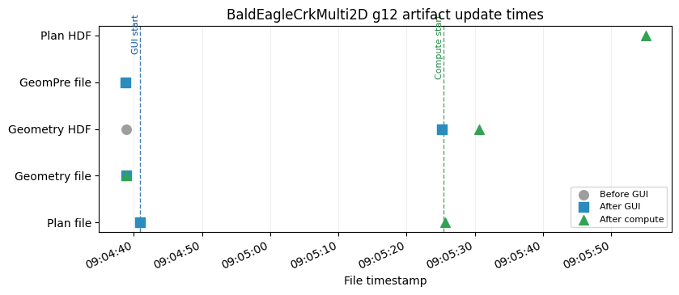
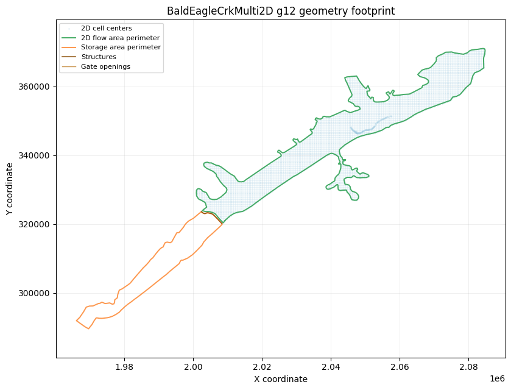
Displayed 2 validation figure(s).
{'label': 'BaldEagle Multi2D: SA/2D connection from/to',
'project': 'BaldEagleCrkMulti2D',
'geometry_number': '12',
'plan_number': '07',
'status': 'passed',
'passed': True,
'plan_path': 'C:\\GH\\ras-commander\\working\\notebook_runs\\122_full_live_20260429_085928\\example_projects\\BaldEagleCrkMulti2D_122_rasmapper_updates_rm06_baldeagle_multi2d_s\\BaldEagleDamBrk.p07',
'plan_encoding': 'utf-8',
'geometry_path': 'C:\\GH\\ras-commander\\working\\notebook_runs\\122_full_live_20260429_085928\\example_projects\\BaldEagleCrkMulti2D_122_rasmapper_updates_rm06_baldeagle_multi2d_s\\BaldEagleDamBrk.g12',
'geometry_encoding': 'utf-8',
'geometry_hdf_path': 'C:\\GH\\ras-commander\\working\\notebook_runs\\122_full_live_20260429_085928\\example_projects\\BaldEagleCrkMulti2D_122_rasmapper_updates_rm06_baldeagle_multi2d_s\\BaldEagleDamBrk.g12.hdf',
'geometry_hdf_keys': 'Geometry',
'plan_hdf_path': 'C:\\GH\\ras-commander\\working\\notebook_runs\\122_full_live_20260429_085928\\example_projects\\BaldEagleCrkMulti2D_122_rasmapper_updates_rm06_baldeagle_multi2d_s\\BaldEagleDamBrk.p07.hdf',
'plan_hdf_keys': 'Event Conditions, Geometry, Plan Data, Results',
'plan_file_read': True,
'plan_shortid_updated': True,
'plan_title_updated': True,
'plan_geometry_updated': True,
'geometry_preprocessor_enabled': True,
'geometry_file_read': True,
'gui_update_succeeded': True,
'geometry_artifact_updated': True,
'geometry_hdf_read': True,
'compute_ran': True,
'compute_succeeded': True,
'result_hdf_read': True,
'result_hdf_updated': True,
'figures_displayed': 2}
Demonstration 7: BaldEagle Multi2D: bridge/culvert river stations¶
2026-04-29 09:05:56 - ras_commander.RasExamples - INFO - ----- RasExamples Extracting Project -----
2026-04-29 09:05:56 - ras_commander.RasExamples - INFO - Extracting project 'BaldEagleCrkMulti2D' as 'BaldEagleCrkMulti2D_122_rasmapper_updates_rm07_baldeagle_multi2d_b'
--------------------------------------------------------------------------------
BaldEagle Multi2D: bridge/culvert river stations
Model: BaldEagleCrkMulti2D -> suffix 122_rasmapper_updates_rm07_baldeagle_multi2d_b
Function: RasMapperLayerCommandWorkflow.update_structure
Geometry: g03
Plan clone metadata: shortid=RM07_BALDEAGLE_MULTI2D_B, title=RM 07 BaldEagle Multi2D bridge c
Args: ('03', 'bridges_culverts', 'river_stations')
Kwargs: {'timeout': 900}
2026-04-29 09:05:57 - ras_commander.RasExamples - INFO - Successfully extracted project 'BaldEagleCrkMulti2D' to C:\GH\ras-commander\working\notebook_runs\122_full_live_20260429_085928\example_projects\BaldEagleCrkMulti2D_122_rasmapper_updates_rm07_baldeagle_multi2d_b
2026-04-29 09:05:57 - ras_commander.RasUtils - INFO - Discovered HEC-RAS 7.0 at C:\Program Files (x86)\HEC\HEC-RAS\7.0\Ras.exe via filesystem (x86)
2026-04-29 09:05:57 - ras_commander.RasUtils - INFO - Discovered HEC-RAS 6.7 Beta 5 at C:\Program Files (x86)\HEC\HEC-RAS\6.7 Beta 5\Ras.exe via filesystem (x86)
2026-04-29 09:05:57 - ras_commander.RasUtils - INFO - Discovered HEC-RAS 6.7 Beta 4 at C:\Program Files (x86)\HEC\HEC-RAS\6.7 Beta 4\Ras.exe via filesystem (x86)
2026-04-29 09:05:57 - ras_commander.RasUtils - INFO - Discovered HEC-RAS 6.5 at C:\Program Files (x86)\HEC\HEC-RAS\6.5\Ras.exe via filesystem (x86)
2026-04-29 09:05:57 - ras_commander.RasUtils - INFO - Discovered HEC-RAS 6.4.1 at C:\Program Files (x86)\HEC\HEC-RAS\6.4.1\Ras.exe via filesystem (x86)
2026-04-29 09:05:57 - ras_commander.RasUtils - INFO - Discovered HEC-RAS 6.3.1 at C:\Program Files (x86)\HEC\HEC-RAS\6.3.1\Ras.exe via filesystem (x86)
2026-04-29 09:05:57 - ras_commander.RasUtils - INFO - Discovered HEC-RAS 6.3 at C:\Program Files (x86)\HEC\HEC-RAS\6.3\Ras.exe via filesystem (x86)
2026-04-29 09:05:57 - ras_commander.RasUtils - INFO - Discovered HEC-RAS 6.2 at C:\Program Files (x86)\HEC\HEC-RAS\6.2\Ras.exe via filesystem (x86)
2026-04-29 09:05:57 - ras_commander.RasUtils - INFO - Discovered HEC-RAS 6.1 at C:\Program Files (x86)\HEC\HEC-RAS\6.1\Ras.exe via filesystem (x86)
2026-04-29 09:05:57 - ras_commander.RasUtils - INFO - Discovered HEC-RAS 6.0 at C:\Program Files (x86)\HEC\HEC-RAS\6.0\Ras.exe via filesystem (x86)
2026-04-29 09:05:57 - ras_commander.RasUtils - INFO - Discovered HEC-RAS 5.0.7 at C:\Program Files (x86)\HEC\HEC-RAS\5.0.7\Ras.exe via filesystem (x86)
2026-04-29 09:05:57 - ras_commander.RasUtils - INFO - Discovered HEC-RAS 5.0.6 at C:\Program Files (x86)\HEC\HEC-RAS\5.0.6\Ras.exe via filesystem (x86)
2026-04-29 09:05:57 - ras_commander.RasUtils - INFO - Discovered HEC-RAS 5.0.5 at C:\Program Files (x86)\HEC\HEC-RAS\5.0.5\Ras.exe via filesystem (x86)
2026-04-29 09:05:57 - ras_commander.RasUtils - INFO - Discovered HEC-RAS 5.0.4 at C:\Program Files (x86)\HEC\HEC-RAS\5.0.4\Ras.exe via filesystem (x86)
2026-04-29 09:05:57 - ras_commander.RasUtils - INFO - Discovered HEC-RAS 5.0.3 at C:\Program Files (x86)\HEC\HEC-RAS\5.0.3\Ras.exe via filesystem (x86)
2026-04-29 09:05:57 - ras_commander.RasUtils - INFO - Discovered HEC-RAS 5.0.1 at C:\Program Files (x86)\HEC\HEC-RAS\5.0.1\Ras.exe via filesystem (x86)
2026-04-29 09:05:57 - ras_commander.RasUtils - INFO - Discovered HEC-RAS 5.0 at C:\Program Files (x86)\HEC\HEC-RAS\5.0\Ras.exe via filesystem (x86)
2026-04-29 09:05:57 - ras_commander.RasUtils - INFO - Discovered HEC-RAS 4.1.0 at C:\Program Files (x86)\HEC\HEC-RAS\4.1.0\Ras.exe via filesystem (x86)
2026-04-29 09:05:57 - ras_commander.RasUtils - INFO - Discovered HEC-RAS 4.0 at C:\Program Files (x86)\HEC\HEC-RAS\4.0\Ras.exe via filesystem (x86)
2026-04-29 09:05:57 - ras_commander.RasUtils - INFO - Discovered HEC-RAS 6.6 at C:\Program Files (x86)\HEC\HEC-RAS\6.6\Ras.exe via filesystem (x86)
2026-04-29 09:05:57 - ras_commander.RasUtils - INFO - Discovered 20 installed HEC-RAS version(s)
2026-04-29 09:05:57 - ras_commander.RasPrj - INFO - HEC-RAS 7.0 found via version discovery: C:\Program Files (x86)\HEC\HEC-RAS\7.0\Ras.exe
2026-04-29 09:05:57 - ras_commander.RasMap - INFO - Successfully parsed RASMapper file: C:\GH\ras-commander\working\notebook_runs\122_full_live_20260429_085928\example_projects\BaldEagleCrkMulti2D_122_rasmapper_updates_rm07_baldeagle_multi2d_b\BaldEagleDamBrk.rasmap
2026-04-29 09:05:57 - ras_commander.hdf.HdfBase - INFO - Found projection in HDF file: C:\GH\ras-commander\working\notebook_runs\122_full_live_20260429_085928\example_projects\BaldEagleCrkMulti2D_122_rasmapper_updates_rm07_baldeagle_multi2d_b\BaldEagleDamBrk.g09.hdf
2026-04-29 09:05:57 - ras_commander.hdf.HdfBase - INFO - Converted WKT to EPSG:2271 from HDF file BaldEagleDamBrk.g09.hdf
2026-04-29 09:05:57 - ras_commander.RasPrj - INFO - Updated results_df with 11 plan(s)
2026-04-29 09:05:57 - ras_commander.RasPrj - INFO - ras-commander v0.94.0 | An open-source project of CLB Engineering Corporation (https://clbengineering.com/) | Docs: https://ras-commander.readthedocs.io | GitHub: https://github.com/gpt-cmdr/ras-commander
2026-04-29 09:05:57 - ras_commander.RasPrj - INFO - Project initialized: BaldEagleDamBrk | Folder: C:\GH\ras-commander\working\notebook_runs\122_full_live_20260429_085928\example_projects\BaldEagleCrkMulti2D_122_rasmapper_updates_rm07_baldeagle_multi2d_b
2026-04-29 09:05:57 - ras_commander.RasPrj - INFO - Using HEC-RAS executable: C:\Program Files (x86)\HEC\HEC-RAS\7.0\Ras.exe
2026-04-29 09:05:57 - ras_commander.RasUtils - INFO - File cloned from C:\GH\ras-commander\working\notebook_runs\122_full_live_20260429_085928\example_projects\BaldEagleCrkMulti2D_122_rasmapper_updates_rm07_baldeagle_multi2d_b\BaldEagleDamBrk.p05 to C:\GH\ras-commander\working\notebook_runs\122_full_live_20260429_085928\example_projects\BaldEagleCrkMulti2D_122_rasmapper_updates_rm07_baldeagle_multi2d_b\BaldEagleDamBrk.p07
2026-04-29 09:05:57 - ras_commander.RasUtils - INFO - Successfully updated file: C:\GH\ras-commander\working\notebook_runs\122_full_live_20260429_085928\example_projects\BaldEagleCrkMulti2D_122_rasmapper_updates_rm07_baldeagle_multi2d_b\BaldEagleDamBrk.p07
2026-04-29 09:05:57 - ras_commander.RasUtils - INFO - Project file updated with new Plan entry: 07
2026-04-29 09:05:58 - ras_commander.RasMap - INFO - Successfully parsed RASMapper file: C:\GH\ras-commander\working\notebook_runs\122_full_live_20260429_085928\example_projects\BaldEagleCrkMulti2D_122_rasmapper_updates_rm07_baldeagle_multi2d_b\BaldEagleDamBrk.rasmap
2026-04-29 09:05:58 - ras_commander.hdf.HdfBase - INFO - Found projection in HDF file: C:\GH\ras-commander\working\notebook_runs\122_full_live_20260429_085928\example_projects\BaldEagleCrkMulti2D_122_rasmapper_updates_rm07_baldeagle_multi2d_b\BaldEagleDamBrk.g09.hdf
2026-04-29 09:05:58 - ras_commander.hdf.HdfBase - INFO - Converted WKT to EPSG:2271 from HDF file BaldEagleDamBrk.g09.hdf
2026-04-29 09:05:58 - ras_commander.RasPrj - INFO - Updated results_df with 12 plan(s)
2026-04-29 09:05:58 - ras_commander.RasPlan - INFO - Updated Geom File in plan file to g03 for plan 07
2026-04-29 09:05:58 - ras_commander.RasPlan - INFO - Geometry for plan 07 set to 03
2026-04-29 09:05:58 - ras_commander.RasPlan - INFO - Successfully updated run flags in plan file: C:\GH\ras-commander\working\notebook_runs\122_full_live_20260429_085928\example_projects\BaldEagleCrkMulti2D_122_rasmapper_updates_rm07_baldeagle_multi2d_b\BaldEagleDamBrk.p07 (flags modified: 1)
2026-04-29 09:05:58 - ras_commander.RasUtils - INFO - Constructed plan file path: C:\GH\ras-commander\working\notebook_runs\122_full_live_20260429_085928\example_projects\BaldEagleCrkMulti2D_122_rasmapper_updates_rm07_baldeagle_multi2d_b\BaldEagleDamBrk.p07
2026-04-29 09:05:58 - ras_commander.RasPlan - INFO - Updated Short Identifier in plan file to: RM07_BALDEAGLE_MULTI2D_B
2026-04-29 09:05:58 - ras_commander.RasUtils - INFO - Constructed plan file path: C:\GH\ras-commander\working\notebook_runs\122_full_live_20260429_085928\example_projects\BaldEagleCrkMulti2D_122_rasmapper_updates_rm07_baldeagle_multi2d_b\BaldEagleDamBrk.p07
2026-04-29 09:05:58 - ras_commander.RasPlan - INFO - Updated Plan Title in plan file to: RM 07 BaldEagle Multi2D bridge c
2026-04-29 09:05:58 - ras_commander.RasPlan - INFO - Successfully updated run flags in plan file: C:\GH\ras-commander\working\notebook_runs\122_full_live_20260429_085928\example_projects\BaldEagleCrkMulti2D_122_rasmapper_updates_rm07_baldeagle_multi2d_b\BaldEagleDamBrk.p07 (flags modified: 1)
2026-04-29 09:05:58 - ras_commander.RasMap - INFO - Found 10 geometries in .rasmap
2026-04-29 09:05:58 - ras_commander.gui.workflow_base - INFO - Starting RASMapperLayerCommand[Bridges/Culverts > Update Bridges/Culverts > River Stations] (8 steps)
2026-04-29 09:05:58 - ras_commander.gui.workflow_base - INFO - [1/8] Verify HEC-RAS is closed
2026-04-29 09:05:58 - ras_commander.gui.workflow_base - INFO - [1/8] Verify HEC-RAS is closed completed (0.0s)
2026-04-29 09:05:58 - ras_commander.gui.workflow_base - INFO - [2/8] Launch HEC-RAS
2026-04-29 09:05:58 - ras_commander.gui.hecras_elements - INFO - Opening HEC-RAS...
2026-04-29 09:05:58 - ras_commander.gui.hecras_elements - INFO - HEC-RAS opened with Process ID: 11872
2026-04-29 09:05:59 - ras_commander.gui.hecras_elements - INFO - Found 'already running' dialog - clicking Yes to continue
2026-04-29 09:05:59 - ras_commander.gui.win32_primitives - INFO - Clicked button: &Yes
2026-04-29 09:05:59 - ras_commander.gui.hecras_elements - INFO - Clicked 'Yes' button on already running dialog
2026-04-29 09:05:59 - ras_commander.gui.hecras_elements - INFO - Waiting for HEC-RAS main window...
2026-04-29 09:06:01 - ras_commander.gui.hecras_elements - INFO - Found HEC-RAS main window: HEC-RAS 7.0
2026-04-29 09:06:01 - ras_commander.gui.workflow_base - INFO - [2/8] Launch HEC-RAS completed (3.5s)
2026-04-29 09:06:01 - ras_commander.gui.workflow_base - INFO - [3/8] Open RASMapper
2026-04-29 09:06:02 - ras_commander.gui.hecras_elements - INFO - Found menu item: 'RAS Mapper ...' (ID: 103)
2026-04-29 09:06:02 - ras_commander.gui.win32_primitives - INFO - Clicked menu item ID: 103
2026-04-29 09:06:02 - ras_commander.gui.workflow_base - INFO - [3/8] Open RASMapper completed (0.5s)
2026-04-29 09:06:02 - ras_commander.gui.workflow_base - INFO - [4/8] Wait for RASMapper
2026-04-29 09:06:17 - ras_commander.gui.rasmapper_elements - INFO - RASMapper opened: RAS Mapper (took 15s)
2026-04-29 09:06:17 - ras_commander.gui.workflow_base - INFO - [4/8] Wait for RASMapper completed (15.3s)
2026-04-29 09:06:17 - ras_commander.gui.workflow_base - INFO - [5/8] Start geometry editing
2026-04-29 09:06:18 - ras_commander.gui.workflow_base - WARNING - [5/8] Start geometry editing failed (attempt 1/2): Could not find RASMapper tree node: Single 2D Area with Bridges and Breaklin > Bridges/Culverts
[!] Could not find 'Bridges/Culverts' at depth 1
2026-04-29 09:06:21 - ras_commander.gui.workflow_base - WARNING - [5/8] Start geometry editing failed (attempt 2/2): Could not find RASMapper tree node: Single 2D Area with Bridges and Breaklin > Bridges/Culverts
2026-04-29 09:06:21 - ras_commander.gui.workflow_base - ERROR - Required step 'Start geometry editing' failed after 2 attempts
2026-04-29 09:06:21 - ras_commander.gui.workflow_base - ERROR - RASMapperLayerCommand[Bridges/Culverts > Update Bridges/Culverts > River Stations] failed at step 'Start geometry editing' (22.8s, 4/8 steps completed)
2026-04-29 09:06:21 - ras_commander.gui.win32_primitives - INFO - Closed window: RAS Mapper
[!] Could not find 'Bridges/Culverts' at depth 1
2026-04-29 09:06:26 - ras_commander.gui.win32_primitives - INFO - Closed window: HEC-RAS 7.0
GUI update success: False
GUI update error: Could not find RASMapper tree node: Single 2D Area with Bridges and Breaklin > Bridges/Culverts
WorkflowResult(success=False, steps_completed=['Verify HEC-RAS is closed', 'Launch HEC-RAS', 'Open RASMapper', 'Wait for RASMapper'], steps_failed=['Start geometry editing'], step_results={'Verify HEC-RAS is closed': None, 'Launch HEC-RAS': None, 'Open RASMapper': None, 'Wait for RASMapper': None}, elapsed_seconds=22.84953737258911, error=RuntimeError('Could not find RASMapper tree node: Single 2D Area with Bridges and Breaklin > Bridges/Culverts'))
| label | project | geometry_number | plan_number | status | passed | plan_path | plan_encoding | geometry_path | geometry_encoding | ... | plan_geometry_updated | geometry_preprocessor_enabled | geometry_file_read | gui_update_succeeded | geometry_artifact_updated | geometry_hdf_read | compute_ran | compute_succeeded | result_hdf_read | result_hdf_updated | |
|---|---|---|---|---|---|---|---|---|---|---|---|---|---|---|---|---|---|---|---|---|---|
| 0 | BaldEagle Multi2D: bridge/culvert river stations | BaldEagleCrkMulti2D | 03 | 07 | failed | False | C:\GH\ras-commander\working\notebook_runs\122_... | utf-8 | C:\GH\ras-commander\working\notebook_runs\122_... | utf-8 | ... | True | True | True | False | True | True | False | False | False | False |
1 rows × 27 columns
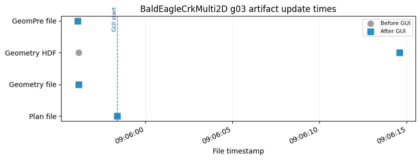

Displayed 2 validation figure(s).
{'label': 'BaldEagle Multi2D: bridge/culvert river stations',
'project': 'BaldEagleCrkMulti2D',
'geometry_number': '03',
'plan_number': '07',
'status': 'failed',
'passed': False,
'plan_path': 'C:\\GH\\ras-commander\\working\\notebook_runs\\122_full_live_20260429_085928\\example_projects\\BaldEagleCrkMulti2D_122_rasmapper_updates_rm07_baldeagle_multi2d_b\\BaldEagleDamBrk.p07',
'plan_encoding': 'utf-8',
'geometry_path': 'C:\\GH\\ras-commander\\working\\notebook_runs\\122_full_live_20260429_085928\\example_projects\\BaldEagleCrkMulti2D_122_rasmapper_updates_rm07_baldeagle_multi2d_b\\BaldEagleDamBrk.g03',
'geometry_encoding': 'utf-8',
'geometry_hdf_path': 'C:\\GH\\ras-commander\\working\\notebook_runs\\122_full_live_20260429_085928\\example_projects\\BaldEagleCrkMulti2D_122_rasmapper_updates_rm07_baldeagle_multi2d_b\\BaldEagleDamBrk.g03.hdf',
'geometry_hdf_keys': 'Geometry',
'plan_hdf_path': 'C:\\GH\\ras-commander\\working\\notebook_runs\\122_full_live_20260429_085928\\example_projects\\BaldEagleCrkMulti2D_122_rasmapper_updates_rm07_baldeagle_multi2d_b\\BaldEagleDamBrk.p07.hdf',
'plan_hdf_keys': '',
'plan_file_read': True,
'plan_shortid_updated': True,
'plan_title_updated': True,
'plan_geometry_updated': True,
'geometry_preprocessor_enabled': True,
'geometry_file_read': True,
'gui_update_succeeded': False,
'geometry_artifact_updated': True,
'geometry_hdf_read': True,
'compute_ran': False,
'compute_succeeded': False,
'result_hdf_read': False,
'result_hdf_updated': False,
'figures_displayed': 2}
Demonstration 8: BaldEagle Multi2D: bridge/culvert terrain profiles¶
2026-04-29 09:06:26 - ras_commander.RasExamples - INFO - ----- RasExamples Extracting Project -----
2026-04-29 09:06:26 - ras_commander.RasExamples - INFO - Extracting project 'BaldEagleCrkMulti2D' as 'BaldEagleCrkMulti2D_122_rasmapper_updates_rm08_baldeagle_multi2d_b'
--------------------------------------------------------------------------------
BaldEagle Multi2D: bridge/culvert terrain profiles
Model: BaldEagleCrkMulti2D -> suffix 122_rasmapper_updates_rm08_baldeagle_multi2d_b
Function: RasMapperLayerCommandWorkflow.update_structure
Geometry: g03
Plan clone metadata: shortid=RM08_BALDEAGLE_MULTI2D_B, title=RM 08 BaldEagle Multi2D bridge c
Args: ('03', 'bridges_culverts', 'terrain')
Kwargs: {'timeout': 900}
2026-04-29 09:06:28 - ras_commander.RasExamples - INFO - Successfully extracted project 'BaldEagleCrkMulti2D' to C:\GH\ras-commander\working\notebook_runs\122_full_live_20260429_085928\example_projects\BaldEagleCrkMulti2D_122_rasmapper_updates_rm08_baldeagle_multi2d_b
2026-04-29 09:06:28 - ras_commander.RasUtils - INFO - Discovered HEC-RAS 7.0 at C:\Program Files (x86)\HEC\HEC-RAS\7.0\Ras.exe via filesystem (x86)
2026-04-29 09:06:28 - ras_commander.RasUtils - INFO - Discovered HEC-RAS 6.7 Beta 5 at C:\Program Files (x86)\HEC\HEC-RAS\6.7 Beta 5\Ras.exe via filesystem (x86)
2026-04-29 09:06:28 - ras_commander.RasUtils - INFO - Discovered HEC-RAS 6.7 Beta 4 at C:\Program Files (x86)\HEC\HEC-RAS\6.7 Beta 4\Ras.exe via filesystem (x86)
2026-04-29 09:06:28 - ras_commander.RasUtils - INFO - Discovered HEC-RAS 6.5 at C:\Program Files (x86)\HEC\HEC-RAS\6.5\Ras.exe via filesystem (x86)
2026-04-29 09:06:28 - ras_commander.RasUtils - INFO - Discovered HEC-RAS 6.4.1 at C:\Program Files (x86)\HEC\HEC-RAS\6.4.1\Ras.exe via filesystem (x86)
2026-04-29 09:06:28 - ras_commander.RasUtils - INFO - Discovered HEC-RAS 6.3.1 at C:\Program Files (x86)\HEC\HEC-RAS\6.3.1\Ras.exe via filesystem (x86)
2026-04-29 09:06:28 - ras_commander.RasUtils - INFO - Discovered HEC-RAS 6.3 at C:\Program Files (x86)\HEC\HEC-RAS\6.3\Ras.exe via filesystem (x86)
2026-04-29 09:06:28 - ras_commander.RasUtils - INFO - Discovered HEC-RAS 6.2 at C:\Program Files (x86)\HEC\HEC-RAS\6.2\Ras.exe via filesystem (x86)
2026-04-29 09:06:28 - ras_commander.RasUtils - INFO - Discovered HEC-RAS 6.1 at C:\Program Files (x86)\HEC\HEC-RAS\6.1\Ras.exe via filesystem (x86)
2026-04-29 09:06:28 - ras_commander.RasUtils - INFO - Discovered HEC-RAS 6.0 at C:\Program Files (x86)\HEC\HEC-RAS\6.0\Ras.exe via filesystem (x86)
2026-04-29 09:06:28 - ras_commander.RasUtils - INFO - Discovered HEC-RAS 5.0.7 at C:\Program Files (x86)\HEC\HEC-RAS\5.0.7\Ras.exe via filesystem (x86)
2026-04-29 09:06:28 - ras_commander.RasUtils - INFO - Discovered HEC-RAS 5.0.6 at C:\Program Files (x86)\HEC\HEC-RAS\5.0.6\Ras.exe via filesystem (x86)
2026-04-29 09:06:28 - ras_commander.RasUtils - INFO - Discovered HEC-RAS 5.0.5 at C:\Program Files (x86)\HEC\HEC-RAS\5.0.5\Ras.exe via filesystem (x86)
2026-04-29 09:06:28 - ras_commander.RasUtils - INFO - Discovered HEC-RAS 5.0.4 at C:\Program Files (x86)\HEC\HEC-RAS\5.0.4\Ras.exe via filesystem (x86)
2026-04-29 09:06:28 - ras_commander.RasUtils - INFO - Discovered HEC-RAS 5.0.3 at C:\Program Files (x86)\HEC\HEC-RAS\5.0.3\Ras.exe via filesystem (x86)
2026-04-29 09:06:28 - ras_commander.RasUtils - INFO - Discovered HEC-RAS 5.0.1 at C:\Program Files (x86)\HEC\HEC-RAS\5.0.1\Ras.exe via filesystem (x86)
2026-04-29 09:06:28 - ras_commander.RasUtils - INFO - Discovered HEC-RAS 5.0 at C:\Program Files (x86)\HEC\HEC-RAS\5.0\Ras.exe via filesystem (x86)
2026-04-29 09:06:28 - ras_commander.RasUtils - INFO - Discovered HEC-RAS 4.1.0 at C:\Program Files (x86)\HEC\HEC-RAS\4.1.0\Ras.exe via filesystem (x86)
2026-04-29 09:06:28 - ras_commander.RasUtils - INFO - Discovered HEC-RAS 4.0 at C:\Program Files (x86)\HEC\HEC-RAS\4.0\Ras.exe via filesystem (x86)
2026-04-29 09:06:28 - ras_commander.RasUtils - INFO - Discovered HEC-RAS 6.6 at C:\Program Files (x86)\HEC\HEC-RAS\6.6\Ras.exe via filesystem (x86)
2026-04-29 09:06:28 - ras_commander.RasUtils - INFO - Discovered 20 installed HEC-RAS version(s)
2026-04-29 09:06:28 - ras_commander.RasPrj - INFO - HEC-RAS 7.0 found via version discovery: C:\Program Files (x86)\HEC\HEC-RAS\7.0\Ras.exe
2026-04-29 09:06:28 - ras_commander.RasMap - INFO - Successfully parsed RASMapper file: C:\GH\ras-commander\working\notebook_runs\122_full_live_20260429_085928\example_projects\BaldEagleCrkMulti2D_122_rasmapper_updates_rm08_baldeagle_multi2d_b\BaldEagleDamBrk.rasmap
2026-04-29 09:06:28 - ras_commander.hdf.HdfBase - INFO - Found projection in HDF file: C:\GH\ras-commander\working\notebook_runs\122_full_live_20260429_085928\example_projects\BaldEagleCrkMulti2D_122_rasmapper_updates_rm08_baldeagle_multi2d_b\BaldEagleDamBrk.g09.hdf
2026-04-29 09:06:28 - ras_commander.hdf.HdfBase - INFO - Converted WKT to EPSG:2271 from HDF file BaldEagleDamBrk.g09.hdf
2026-04-29 09:06:28 - ras_commander.RasPrj - INFO - Updated results_df with 11 plan(s)
2026-04-29 09:06:28 - ras_commander.RasPrj - INFO - ras-commander v0.94.0 | An open-source project of CLB Engineering Corporation (https://clbengineering.com/) | Docs: https://ras-commander.readthedocs.io | GitHub: https://github.com/gpt-cmdr/ras-commander
2026-04-29 09:06:28 - ras_commander.RasPrj - INFO - Project initialized: BaldEagleDamBrk | Folder: C:\GH\ras-commander\working\notebook_runs\122_full_live_20260429_085928\example_projects\BaldEagleCrkMulti2D_122_rasmapper_updates_rm08_baldeagle_multi2d_b
2026-04-29 09:06:28 - ras_commander.RasPrj - INFO - Using HEC-RAS executable: C:\Program Files (x86)\HEC\HEC-RAS\7.0\Ras.exe
2026-04-29 09:06:28 - ras_commander.RasUtils - INFO - File cloned from C:\GH\ras-commander\working\notebook_runs\122_full_live_20260429_085928\example_projects\BaldEagleCrkMulti2D_122_rasmapper_updates_rm08_baldeagle_multi2d_b\BaldEagleDamBrk.p05 to C:\GH\ras-commander\working\notebook_runs\122_full_live_20260429_085928\example_projects\BaldEagleCrkMulti2D_122_rasmapper_updates_rm08_baldeagle_multi2d_b\BaldEagleDamBrk.p07
2026-04-29 09:06:28 - ras_commander.RasUtils - INFO - Successfully updated file: C:\GH\ras-commander\working\notebook_runs\122_full_live_20260429_085928\example_projects\BaldEagleCrkMulti2D_122_rasmapper_updates_rm08_baldeagle_multi2d_b\BaldEagleDamBrk.p07
2026-04-29 09:06:28 - ras_commander.RasUtils - INFO - Project file updated with new Plan entry: 07
2026-04-29 09:06:28 - ras_commander.RasMap - INFO - Successfully parsed RASMapper file: C:\GH\ras-commander\working\notebook_runs\122_full_live_20260429_085928\example_projects\BaldEagleCrkMulti2D_122_rasmapper_updates_rm08_baldeagle_multi2d_b\BaldEagleDamBrk.rasmap
2026-04-29 09:06:28 - ras_commander.hdf.HdfBase - INFO - Found projection in HDF file: C:\GH\ras-commander\working\notebook_runs\122_full_live_20260429_085928\example_projects\BaldEagleCrkMulti2D_122_rasmapper_updates_rm08_baldeagle_multi2d_b\BaldEagleDamBrk.g09.hdf
2026-04-29 09:06:28 - ras_commander.hdf.HdfBase - INFO - Converted WKT to EPSG:2271 from HDF file BaldEagleDamBrk.g09.hdf
2026-04-29 09:06:28 - ras_commander.RasPrj - INFO - Updated results_df with 12 plan(s)
2026-04-29 09:06:29 - ras_commander.RasPlan - INFO - Updated Geom File in plan file to g03 for plan 07
2026-04-29 09:06:29 - ras_commander.RasPlan - INFO - Geometry for plan 07 set to 03
2026-04-29 09:06:29 - ras_commander.RasPlan - INFO - Successfully updated run flags in plan file: C:\GH\ras-commander\working\notebook_runs\122_full_live_20260429_085928\example_projects\BaldEagleCrkMulti2D_122_rasmapper_updates_rm08_baldeagle_multi2d_b\BaldEagleDamBrk.p07 (flags modified: 1)
2026-04-29 09:06:29 - ras_commander.RasUtils - INFO - Constructed plan file path: C:\GH\ras-commander\working\notebook_runs\122_full_live_20260429_085928\example_projects\BaldEagleCrkMulti2D_122_rasmapper_updates_rm08_baldeagle_multi2d_b\BaldEagleDamBrk.p07
2026-04-29 09:06:29 - ras_commander.RasPlan - INFO - Updated Short Identifier in plan file to: RM08_BALDEAGLE_MULTI2D_B
2026-04-29 09:06:29 - ras_commander.RasUtils - INFO - Constructed plan file path: C:\GH\ras-commander\working\notebook_runs\122_full_live_20260429_085928\example_projects\BaldEagleCrkMulti2D_122_rasmapper_updates_rm08_baldeagle_multi2d_b\BaldEagleDamBrk.p07
2026-04-29 09:06:29 - ras_commander.RasPlan - INFO - Updated Plan Title in plan file to: RM 08 BaldEagle Multi2D bridge c
2026-04-29 09:06:29 - ras_commander.RasPlan - INFO - Successfully updated run flags in plan file: C:\GH\ras-commander\working\notebook_runs\122_full_live_20260429_085928\example_projects\BaldEagleCrkMulti2D_122_rasmapper_updates_rm08_baldeagle_multi2d_b\BaldEagleDamBrk.p07 (flags modified: 1)
2026-04-29 09:06:29 - ras_commander.RasMap - INFO - Found 10 geometries in .rasmap
2026-04-29 09:06:29 - ras_commander.gui.workflow_base - INFO - Starting RASMapperLayerCommand[Bridges/Culverts > Update Bridges/Culverts > Elevation Profiles from Terrain] (8 steps)
2026-04-29 09:06:29 - ras_commander.gui.workflow_base - INFO - [1/8] Verify HEC-RAS is closed
2026-04-29 09:06:29 - ras_commander.gui.workflow_base - INFO - [1/8] Verify HEC-RAS is closed completed (0.0s)
2026-04-29 09:06:29 - ras_commander.gui.workflow_base - INFO - [2/8] Launch HEC-RAS
2026-04-29 09:06:29 - ras_commander.gui.hecras_elements - INFO - Opening HEC-RAS...
2026-04-29 09:06:29 - ras_commander.gui.hecras_elements - INFO - HEC-RAS opened with Process ID: 24060
2026-04-29 09:06:30 - ras_commander.gui.hecras_elements - INFO - Found 'already running' dialog - clicking Yes to continue
2026-04-29 09:06:30 - ras_commander.gui.win32_primitives - INFO - Clicked button: &Yes
2026-04-29 09:06:30 - ras_commander.gui.hecras_elements - INFO - Clicked 'Yes' button on already running dialog
2026-04-29 09:06:30 - ras_commander.gui.hecras_elements - INFO - Waiting for HEC-RAS main window...
2026-04-29 09:06:32 - ras_commander.gui.hecras_elements - INFO - Found HEC-RAS main window: HEC-RAS 7.0
2026-04-29 09:06:32 - ras_commander.gui.workflow_base - INFO - [2/8] Launch HEC-RAS completed (3.5s)
2026-04-29 09:06:32 - ras_commander.gui.workflow_base - INFO - [3/8] Open RASMapper
2026-04-29 09:06:33 - ras_commander.gui.hecras_elements - INFO - Found menu item: 'RAS Mapper ...' (ID: 103)
2026-04-29 09:06:33 - ras_commander.gui.win32_primitives - INFO - Clicked menu item ID: 103
2026-04-29 09:06:33 - ras_commander.gui.workflow_base - INFO - [3/8] Open RASMapper completed (0.5s)
2026-04-29 09:06:33 - ras_commander.gui.workflow_base - INFO - [4/8] Wait for RASMapper
2026-04-29 09:06:48 - ras_commander.gui.rasmapper_elements - INFO - RASMapper opened: RAS Mapper (took 15s)
2026-04-29 09:06:48 - ras_commander.gui.workflow_base - INFO - [4/8] Wait for RASMapper completed (15.4s)
2026-04-29 09:06:48 - ras_commander.gui.workflow_base - INFO - [5/8] Start geometry editing
2026-04-29 09:06:49 - ras_commander.gui.workflow_base - WARNING - [5/8] Start geometry editing failed (attempt 1/2): Could not find RASMapper tree node: Single 2D Area with Bridges and Breaklin > Bridges/Culverts
[!] Could not find 'Bridges/Culverts' at depth 1
2026-04-29 09:06:52 - ras_commander.gui.workflow_base - WARNING - [5/8] Start geometry editing failed (attempt 2/2): Could not find RASMapper tree node: Single 2D Area with Bridges and Breaklin > Bridges/Culverts
2026-04-29 09:06:52 - ras_commander.gui.workflow_base - ERROR - Required step 'Start geometry editing' failed after 2 attempts
2026-04-29 09:06:52 - ras_commander.gui.workflow_base - ERROR - RASMapperLayerCommand[Bridges/Culverts > Update Bridges/Culverts > Elevation Profiles from Terrain] failed at step 'Start geometry editing' (22.9s, 4/8 steps completed)
2026-04-29 09:06:52 - ras_commander.gui.win32_primitives - INFO - Closed window: RAS Mapper
[!] Could not find 'Bridges/Culverts' at depth 1
2026-04-29 09:06:57 - ras_commander.gui.win32_primitives - INFO - Closed window: HEC-RAS 7.0
GUI update success: False
GUI update error: Could not find RASMapper tree node: Single 2D Area with Bridges and Breaklin > Bridges/Culverts
WorkflowResult(success=False, steps_completed=['Verify HEC-RAS is closed', 'Launch HEC-RAS', 'Open RASMapper', 'Wait for RASMapper'], steps_failed=['Start geometry editing'], step_results={'Verify HEC-RAS is closed': None, 'Launch HEC-RAS': None, 'Open RASMapper': None, 'Wait for RASMapper': None}, elapsed_seconds=22.89321994781494, error=RuntimeError('Could not find RASMapper tree node: Single 2D Area with Bridges and Breaklin > Bridges/Culverts'))
| label | project | geometry_number | plan_number | status | passed | plan_path | plan_encoding | geometry_path | geometry_encoding | ... | plan_geometry_updated | geometry_preprocessor_enabled | geometry_file_read | gui_update_succeeded | geometry_artifact_updated | geometry_hdf_read | compute_ran | compute_succeeded | result_hdf_read | result_hdf_updated | |
|---|---|---|---|---|---|---|---|---|---|---|---|---|---|---|---|---|---|---|---|---|---|
| 0 | BaldEagle Multi2D: bridge/culvert terrain prof... | BaldEagleCrkMulti2D | 03 | 07 | failed | False | C:\GH\ras-commander\working\notebook_runs\122_... | utf-8 | C:\GH\ras-commander\working\notebook_runs\122_... | utf-8 | ... | True | True | True | False | True | True | False | False | False | False |
1 rows × 27 columns
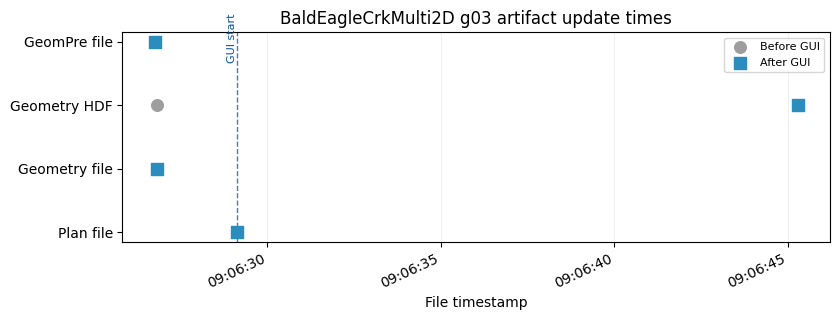
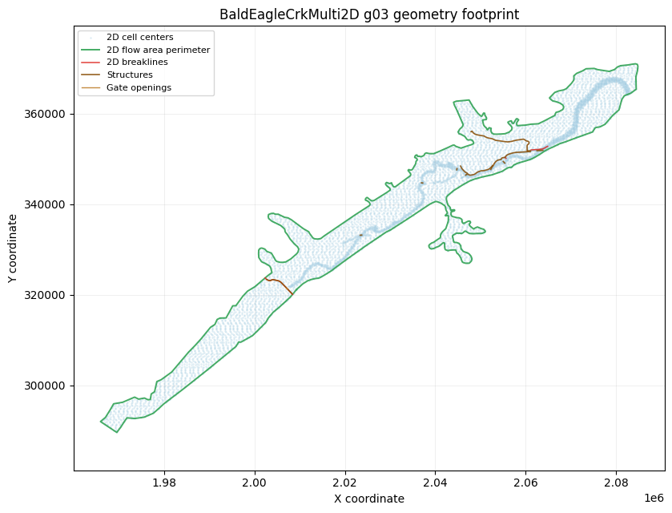
Displayed 2 validation figure(s).
{'label': 'BaldEagle Multi2D: bridge/culvert terrain profiles',
'project': 'BaldEagleCrkMulti2D',
'geometry_number': '03',
'plan_number': '07',
'status': 'failed',
'passed': False,
'plan_path': 'C:\\GH\\ras-commander\\working\\notebook_runs\\122_full_live_20260429_085928\\example_projects\\BaldEagleCrkMulti2D_122_rasmapper_updates_rm08_baldeagle_multi2d_b\\BaldEagleDamBrk.p07',
'plan_encoding': 'utf-8',
'geometry_path': 'C:\\GH\\ras-commander\\working\\notebook_runs\\122_full_live_20260429_085928\\example_projects\\BaldEagleCrkMulti2D_122_rasmapper_updates_rm08_baldeagle_multi2d_b\\BaldEagleDamBrk.g03',
'geometry_encoding': 'utf-8',
'geometry_hdf_path': 'C:\\GH\\ras-commander\\working\\notebook_runs\\122_full_live_20260429_085928\\example_projects\\BaldEagleCrkMulti2D_122_rasmapper_updates_rm08_baldeagle_multi2d_b\\BaldEagleDamBrk.g03.hdf',
'geometry_hdf_keys': 'Geometry',
'plan_hdf_path': 'C:\\GH\\ras-commander\\working\\notebook_runs\\122_full_live_20260429_085928\\example_projects\\BaldEagleCrkMulti2D_122_rasmapper_updates_rm08_baldeagle_multi2d_b\\BaldEagleDamBrk.p07.hdf',
'plan_hdf_keys': '',
'plan_file_read': True,
'plan_shortid_updated': True,
'plan_title_updated': True,
'plan_geometry_updated': True,
'geometry_preprocessor_enabled': True,
'geometry_file_read': True,
'gui_update_succeeded': False,
'geometry_artifact_updated': True,
'geometry_hdf_read': True,
'compute_ran': False,
'compute_succeeded': False,
'result_hdf_read': False,
'result_hdf_updated': False,
'figures_displayed': 2}
Demonstration 9: Muncie: lateral structure river stations¶
2026-04-29 09:06:57 - ras_commander.RasExamples - INFO - ----- RasExamples Extracting Project -----
2026-04-29 09:06:57 - ras_commander.RasExamples - INFO - Extracting project 'Muncie' as 'Muncie_122_rasmapper_updates_rm09_muncie_lateral_stru'
--------------------------------------------------------------------------------
Muncie: lateral structure river stations
Model: Muncie -> suffix 122_rasmapper_updates_rm09_muncie_lateral_stru
Function: RasMapperLayerCommandWorkflow.update_structure
Geometry: g01
Plan clone metadata: shortid=RM09_MUNCIE_LATERAL_STRU, title=RM 09 Muncie lateral structure r
Args: ('01', 'lateral', 'river_stations')
Kwargs: {'timeout': 900}
2026-04-29 09:06:57 - ras_commander.RasExamples - INFO - Successfully extracted project 'Muncie' to C:\GH\ras-commander\working\notebook_runs\122_full_live_20260429_085928\example_projects\Muncie_122_rasmapper_updates_rm09_muncie_lateral_stru
2026-04-29 09:06:57 - ras_commander.RasUtils - INFO - Discovered HEC-RAS 7.0 at C:\Program Files (x86)\HEC\HEC-RAS\7.0\Ras.exe via filesystem (x86)
2026-04-29 09:06:57 - ras_commander.RasUtils - INFO - Discovered HEC-RAS 6.7 Beta 5 at C:\Program Files (x86)\HEC\HEC-RAS\6.7 Beta 5\Ras.exe via filesystem (x86)
2026-04-29 09:06:57 - ras_commander.RasUtils - INFO - Discovered HEC-RAS 6.7 Beta 4 at C:\Program Files (x86)\HEC\HEC-RAS\6.7 Beta 4\Ras.exe via filesystem (x86)
2026-04-29 09:06:57 - ras_commander.RasUtils - INFO - Discovered HEC-RAS 6.5 at C:\Program Files (x86)\HEC\HEC-RAS\6.5\Ras.exe via filesystem (x86)
2026-04-29 09:06:57 - ras_commander.RasUtils - INFO - Discovered HEC-RAS 6.4.1 at C:\Program Files (x86)\HEC\HEC-RAS\6.4.1\Ras.exe via filesystem (x86)
2026-04-29 09:06:57 - ras_commander.RasUtils - INFO - Discovered HEC-RAS 6.3.1 at C:\Program Files (x86)\HEC\HEC-RAS\6.3.1\Ras.exe via filesystem (x86)
2026-04-29 09:06:57 - ras_commander.RasUtils - INFO - Discovered HEC-RAS 6.3 at C:\Program Files (x86)\HEC\HEC-RAS\6.3\Ras.exe via filesystem (x86)
2026-04-29 09:06:57 - ras_commander.RasUtils - INFO - Discovered HEC-RAS 6.2 at C:\Program Files (x86)\HEC\HEC-RAS\6.2\Ras.exe via filesystem (x86)
2026-04-29 09:06:57 - ras_commander.RasUtils - INFO - Discovered HEC-RAS 6.1 at C:\Program Files (x86)\HEC\HEC-RAS\6.1\Ras.exe via filesystem (x86)
2026-04-29 09:06:57 - ras_commander.RasUtils - INFO - Discovered HEC-RAS 6.0 at C:\Program Files (x86)\HEC\HEC-RAS\6.0\Ras.exe via filesystem (x86)
2026-04-29 09:06:57 - ras_commander.RasUtils - INFO - Discovered HEC-RAS 5.0.7 at C:\Program Files (x86)\HEC\HEC-RAS\5.0.7\Ras.exe via filesystem (x86)
2026-04-29 09:06:57 - ras_commander.RasUtils - INFO - Discovered HEC-RAS 5.0.6 at C:\Program Files (x86)\HEC\HEC-RAS\5.0.6\Ras.exe via filesystem (x86)
2026-04-29 09:06:57 - ras_commander.RasUtils - INFO - Discovered HEC-RAS 5.0.5 at C:\Program Files (x86)\HEC\HEC-RAS\5.0.5\Ras.exe via filesystem (x86)
2026-04-29 09:06:57 - ras_commander.RasUtils - INFO - Discovered HEC-RAS 5.0.4 at C:\Program Files (x86)\HEC\HEC-RAS\5.0.4\Ras.exe via filesystem (x86)
2026-04-29 09:06:57 - ras_commander.RasUtils - INFO - Discovered HEC-RAS 5.0.3 at C:\Program Files (x86)\HEC\HEC-RAS\5.0.3\Ras.exe via filesystem (x86)
2026-04-29 09:06:57 - ras_commander.RasUtils - INFO - Discovered HEC-RAS 5.0.1 at C:\Program Files (x86)\HEC\HEC-RAS\5.0.1\Ras.exe via filesystem (x86)
2026-04-29 09:06:57 - ras_commander.RasUtils - INFO - Discovered HEC-RAS 5.0 at C:\Program Files (x86)\HEC\HEC-RAS\5.0\Ras.exe via filesystem (x86)
2026-04-29 09:06:57 - ras_commander.RasUtils - INFO - Discovered HEC-RAS 4.1.0 at C:\Program Files (x86)\HEC\HEC-RAS\4.1.0\Ras.exe via filesystem (x86)
2026-04-29 09:06:57 - ras_commander.RasUtils - INFO - Discovered HEC-RAS 4.0 at C:\Program Files (x86)\HEC\HEC-RAS\4.0\Ras.exe via filesystem (x86)
2026-04-29 09:06:57 - ras_commander.RasUtils - INFO - Discovered HEC-RAS 6.6 at C:\Program Files (x86)\HEC\HEC-RAS\6.6\Ras.exe via filesystem (x86)
2026-04-29 09:06:57 - ras_commander.RasUtils - INFO - Discovered 20 installed HEC-RAS version(s)
2026-04-29 09:06:57 - ras_commander.RasPrj - INFO - HEC-RAS 7.0 found via version discovery: C:\Program Files (x86)\HEC\HEC-RAS\7.0\Ras.exe
2026-04-29 09:06:57 - ras_commander.RasMap - INFO - Successfully parsed RASMapper file: C:\GH\ras-commander\working\notebook_runs\122_full_live_20260429_085928\example_projects\Muncie_122_rasmapper_updates_rm09_muncie_lateral_stru\Muncie.rasmap
2026-04-29 09:06:57 - ras_commander.hdf.HdfBase - INFO - Found projection in projection file: C:\GH\ras-commander\working\notebook_runs\122_full_live_20260429_085928\example_projects\Muncie_122_rasmapper_updates_rm09_muncie_lateral_stru\GIS_Data\Muncie_IA_Clip.prj
2026-04-29 09:06:57 - ras_commander.RasPrj - INFO - Updated results_df with 3 plan(s)
2026-04-29 09:06:57 - ras_commander.RasPrj - INFO - ras-commander v0.94.0 | An open-source project of CLB Engineering Corporation (https://clbengineering.com/) | Docs: https://ras-commander.readthedocs.io | GitHub: https://github.com/gpt-cmdr/ras-commander
2026-04-29 09:06:57 - ras_commander.RasPrj - INFO - Project initialized: Muncie | Folder: C:\GH\ras-commander\working\notebook_runs\122_full_live_20260429_085928\example_projects\Muncie_122_rasmapper_updates_rm09_muncie_lateral_stru
2026-04-29 09:06:57 - ras_commander.RasPrj - INFO - Using HEC-RAS executable: C:\Program Files (x86)\HEC\HEC-RAS\7.0\Ras.exe
2026-04-29 09:06:57 - ras_commander.RasUtils - INFO - File cloned from C:\GH\ras-commander\working\notebook_runs\122_full_live_20260429_085928\example_projects\Muncie_122_rasmapper_updates_rm09_muncie_lateral_stru\Muncie.p01 to C:\GH\ras-commander\working\notebook_runs\122_full_live_20260429_085928\example_projects\Muncie_122_rasmapper_updates_rm09_muncie_lateral_stru\Muncie.p02
2026-04-29 09:06:57 - ras_commander.RasUtils - INFO - Successfully updated file: C:\GH\ras-commander\working\notebook_runs\122_full_live_20260429_085928\example_projects\Muncie_122_rasmapper_updates_rm09_muncie_lateral_stru\Muncie.p02
2026-04-29 09:06:57 - ras_commander.RasUtils - INFO - Project file updated with new Plan entry: 02
2026-04-29 09:06:57 - ras_commander.RasMap - INFO - Successfully parsed RASMapper file: C:\GH\ras-commander\working\notebook_runs\122_full_live_20260429_085928\example_projects\Muncie_122_rasmapper_updates_rm09_muncie_lateral_stru\Muncie.rasmap
2026-04-29 09:06:57 - ras_commander.hdf.HdfBase - INFO - Found projection in projection file: C:\GH\ras-commander\working\notebook_runs\122_full_live_20260429_085928\example_projects\Muncie_122_rasmapper_updates_rm09_muncie_lateral_stru\GIS_Data\Muncie_IA_Clip.prj
2026-04-29 09:06:57 - ras_commander.RasPrj - INFO - Updated results_df with 4 plan(s)
2026-04-29 09:06:58 - ras_commander.RasPlan - INFO - Updated Geom File in plan file to g01 for plan 02
2026-04-29 09:06:58 - ras_commander.RasPlan - INFO - Geometry for plan 02 set to 01
2026-04-29 09:06:58 - ras_commander.RasPlan - INFO - Successfully updated run flags in plan file: C:\GH\ras-commander\working\notebook_runs\122_full_live_20260429_085928\example_projects\Muncie_122_rasmapper_updates_rm09_muncie_lateral_stru\Muncie.p02 (flags modified: 1)
2026-04-29 09:06:58 - ras_commander.RasUtils - INFO - Constructed plan file path: C:\GH\ras-commander\working\notebook_runs\122_full_live_20260429_085928\example_projects\Muncie_122_rasmapper_updates_rm09_muncie_lateral_stru\Muncie.p02
2026-04-29 09:06:58 - ras_commander.RasPlan - INFO - Updated Short Identifier in plan file to: RM09_MUNCIE_LATERAL_STRU
2026-04-29 09:06:58 - ras_commander.RasUtils - INFO - Constructed plan file path: C:\GH\ras-commander\working\notebook_runs\122_full_live_20260429_085928\example_projects\Muncie_122_rasmapper_updates_rm09_muncie_lateral_stru\Muncie.p02
2026-04-29 09:06:58 - ras_commander.RasPlan - INFO - Updated Plan Title in plan file to: RM 09 Muncie lateral structure r
2026-04-29 09:06:58 - ras_commander.RasPlan - INFO - Successfully updated run flags in plan file: C:\GH\ras-commander\working\notebook_runs\122_full_live_20260429_085928\example_projects\Muncie_122_rasmapper_updates_rm09_muncie_lateral_stru\Muncie.p02 (flags modified: 1)
2026-04-29 09:06:58 - ras_commander.RasMap - INFO - Found 3 geometries in .rasmap
2026-04-29 09:06:58 - ras_commander.gui.workflow_base - INFO - Starting RASMapperLayerCommand[Lateral Structures > Update Lateral Structures > River Stations] (8 steps)
2026-04-29 09:06:58 - ras_commander.gui.workflow_base - INFO - [1/8] Verify HEC-RAS is closed
2026-04-29 09:06:58 - ras_commander.gui.workflow_base - INFO - [1/8] Verify HEC-RAS is closed completed (0.0s)
2026-04-29 09:06:58 - ras_commander.gui.workflow_base - INFO - [2/8] Launch HEC-RAS
2026-04-29 09:06:58 - ras_commander.gui.hecras_elements - INFO - Opening HEC-RAS...
2026-04-29 09:06:58 - ras_commander.gui.hecras_elements - INFO - HEC-RAS opened with Process ID: 105792
2026-04-29 09:06:59 - ras_commander.gui.hecras_elements - INFO - Found 'already running' dialog - clicking Yes to continue
2026-04-29 09:06:59 - ras_commander.gui.win32_primitives - INFO - Clicked button: &Yes
2026-04-29 09:06:59 - ras_commander.gui.hecras_elements - INFO - Clicked 'Yes' button on already running dialog
2026-04-29 09:06:59 - ras_commander.gui.hecras_elements - INFO - Waiting for HEC-RAS main window...
2026-04-29 09:07:01 - ras_commander.gui.hecras_elements - INFO - Found HEC-RAS main window: HEC-RAS 7.0
2026-04-29 09:07:01 - ras_commander.gui.workflow_base - INFO - [2/8] Launch HEC-RAS completed (3.5s)
2026-04-29 09:07:01 - ras_commander.gui.workflow_base - INFO - [3/8] Open RASMapper
2026-04-29 09:07:02 - ras_commander.gui.hecras_elements - INFO - Found menu item: 'RAS Mapper ...' (ID: 103)
2026-04-29 09:07:02 - ras_commander.gui.win32_primitives - INFO - Clicked menu item ID: 103
2026-04-29 09:07:02 - ras_commander.gui.workflow_base - INFO - [3/8] Open RASMapper completed (0.5s)
2026-04-29 09:07:02 - ras_commander.gui.workflow_base - INFO - [4/8] Wait for RASMapper
2026-04-29 09:07:05 - ras_commander.gui.rasmapper_elements - INFO - RASMapper opened: RAS Mapper (took 3s)
2026-04-29 09:07:05 - ras_commander.gui.workflow_base - INFO - [4/8] Wait for RASMapper completed (3.0s)
2026-04-29 09:07:05 - ras_commander.gui.workflow_base - INFO - [5/8] Start geometry editing
[*] Trying physical mouse right-click...
[*] Physical mouse click at screen (508, 256)
[+] Context menu via physical mouse: hwnd=0x54174e
[+] Found menu path item: 'Edit Geometry'
2026-04-29 09:07:10 - ras_commander.gui.workflows.xsec_update - INFO - Started RASMapper geometry edit mode
2026-04-29 09:07:11 - ras_commander.gui.workflow_base - INFO - [5/8] Start geometry editing completed (6.8s)
2026-04-29 09:07:11 - ras_commander.gui.workflow_base - INFO - [6/8] Run layer command
[*] Trying physical mouse right-click...
[*] Physical mouse click at screen (508, 304)
[+] Context menu via physical mouse: hwnd=0x54174e
[+] Found menu path item: 'Update Lateral Structures (2 of 2)'
[+] Found menu path item: 'River Stations'
2026-04-29 09:07:18 - ras_commander.gui.workflows.xsec_update - INFO - Triggered RASMapper layer command: Muncie Base Geometry - 9 SAs > Lateral Structures > Update Lateral Structures > River Stations
2026-04-29 09:07:18 - ras_commander.gui.workflow_base - INFO - [6/8] Run layer command completed (6.9s)
2026-04-29 09:07:18 - ras_commander.gui.workflow_base - INFO - [7/8] Wait for command to complete
2026-04-29 09:07:26 - ras_commander.gui.rasmapper_elements - INFO - RASMapper remained responsive; treating as idle (6s)
2026-04-29 09:07:26 - ras_commander.gui.workflow_base - INFO - [7/8] Wait for command to complete completed (8.0s)
2026-04-29 09:07:26 - ras_commander.gui.workflow_base - INFO - [8/8] Save geometry
2026-04-29 09:07:27 - ras_commander.gui.workflows.xsec_update - INFO - Sent Ctrl+S to RASMapper
2026-04-29 09:07:27 - ras_commander.gui.workflow_base - INFO - [8/8] Save geometry completed (0.7s)
2026-04-29 09:07:27 - ras_commander.gui.workflow_base - INFO - RASMapperLayerCommand[Lateral Structures > Update Lateral Structures > River Stations] completed successfully (29.4s)
2026-04-29 09:07:27 - ras_commander.gui.win32_primitives - INFO - Closed window: RAS Mapper
2026-04-29 09:07:29 - ras_commander.gui.win32_primitives - INFO - Clicked button: &No
2026-04-29 09:07:29 - ras_commander.gui.hecras_elements - INFO - Dismissed save prompt
2026-04-29 09:07:29 - ras_commander.gui.win32_primitives - INFO - Closed window: HEC-RAS 7.0
2026-04-29 09:07:29 - ras_commander.RasCmdr - INFO - Using ras_object with project folder: C:\GH\ras-commander\working\notebook_runs\122_full_live_20260429_085928\example_projects\Muncie_122_rasmapper_updates_rm09_muncie_lateral_stru
2026-04-29 09:07:29 - ras_commander.RasCurrency - INFO - Deleted geometry HDF: C:\GH\ras-commander\working\notebook_runs\122_full_live_20260429_085928\example_projects\Muncie_122_rasmapper_updates_rm09_muncie_lateral_stru\Muncie.g01.hdf
2026-04-29 09:07:29 - ras_commander.geom.GeomPreprocessor - INFO - Clearing geometry preprocessor file for single plan: C:\GH\ras-commander\working\notebook_runs\122_full_live_20260429_085928\example_projects\Muncie_122_rasmapper_updates_rm09_muncie_lateral_stru\Muncie.p02
2026-04-29 09:07:29 - ras_commander.geom.GeomPreprocessor - INFO - Deleted geometry preprocessor file: C:\GH\ras-commander\working\notebook_runs\122_full_live_20260429_085928\example_projects\Muncie_122_rasmapper_updates_rm09_muncie_lateral_stru\Muncie.c01
2026-04-29 09:07:30 - ras_commander.geom.GeomPreprocessor - INFO - Geometry dataframe updated successfully.
2026-04-29 09:07:30 - ras_commander.RasCmdr - INFO - Force-cleared all geometry preprocessor files for plan: 02
2026-04-29 09:07:30 - ras_commander.RasUtils - INFO - Using provided plan file path: C:\GH\ras-commander\working\notebook_runs\122_full_live_20260429_085928\example_projects\Muncie_122_rasmapper_updates_rm09_muncie_lateral_stru\Muncie.p02
2026-04-29 09:07:30 - ras_commander.RasUtils - INFO - Successfully updated file: C:\GH\ras-commander\working\notebook_runs\122_full_live_20260429_085928\example_projects\Muncie_122_rasmapper_updates_rm09_muncie_lateral_stru\Muncie.p02
2026-04-29 09:07:30 - ras_commander.RasCmdr - INFO - Set number of cores to 2 for plan: 02
2026-04-29 09:07:30 - ras_commander.RasCmdr - INFO - Running HEC-RAS from the Command Line:
2026-04-29 09:07:30 - ras_commander.RasCmdr - INFO - Running command: "C:\Program Files (x86)\HEC\HEC-RAS\7.0\Ras.exe" -c "C:\GH\ras-commander\working\notebook_runs\122_full_live_20260429_085928\example_projects\Muncie_122_rasmapper_updates_rm09_muncie_lateral_stru\Muncie.prj" "C:\GH\ras-commander\working\notebook_runs\122_full_live_20260429_085928\example_projects\Muncie_122_rasmapper_updates_rm09_muncie_lateral_stru\Muncie.p02"
GUI update success: True
2026-04-29 09:07:43 - ras_commander.RasCmdr - INFO - HEC-RAS execution completed for plan: 02
2026-04-29 09:07:43 - ras_commander.RasCmdr - INFO - Total run time for plan 02: 13.03 seconds
2026-04-29 09:07:43 - ras_commander.hdf.HdfResultsPlan - INFO - Using existing Path object HDF file: C:\GH\ras-commander\working\notebook_runs\122_full_live_20260429_085928\example_projects\Muncie_122_rasmapper_updates_rm09_muncie_lateral_stru\Muncie.p02.hdf
2026-04-29 09:07:43 - ras_commander.hdf.HdfResultsPlan - INFO - Final validated file path: C:\GH\ras-commander\working\notebook_runs\122_full_live_20260429_085928\example_projects\Muncie_122_rasmapper_updates_rm09_muncie_lateral_stru\Muncie.p02.hdf
2026-04-29 09:07:43 - ras_commander.hdf.HdfResultsPlan - INFO - Reading computation messages from HDF: Muncie.p02.hdf
2026-04-29 09:07:43 - ras_commander.hdf.HdfResultsPlan - INFO - Successfully extracted 2661 characters from HDF
2026-04-29 09:07:43 - ras_commander.hdf.HdfResultsPlan - INFO - Using existing Path object HDF file: C:\GH\ras-commander\working\notebook_runs\122_full_live_20260429_085928\example_projects\Muncie_122_rasmapper_updates_rm09_muncie_lateral_stru\Muncie.p02.hdf
2026-04-29 09:07:43 - ras_commander.hdf.HdfResultsPlan - INFO - Final validated file path: C:\GH\ras-commander\working\notebook_runs\122_full_live_20260429_085928\example_projects\Muncie_122_rasmapper_updates_rm09_muncie_lateral_stru\Muncie.p02.hdf
2026-04-29 09:07:43 - ras_commander.hdf.HdfResultsPlan - INFO - Extracting Plan Information from: Muncie.p02.hdf
2026-04-29 09:07:43 - ras_commander.hdf.HdfResultsPlan - INFO - Plan Name: RM 09 Muncie lateral structure r
2026-04-29 09:07:43 - ras_commander.hdf.HdfResultsPlan - INFO - Simulation Duration (hours): 24.0
2026-04-29 09:07:43 - ras_commander.hdf.HdfResultsPlan - INFO - Using existing Path object HDF file: C:\GH\ras-commander\working\notebook_runs\122_full_live_20260429_085928\example_projects\Muncie_122_rasmapper_updates_rm09_muncie_lateral_stru\Muncie.p02.hdf
2026-04-29 09:07:43 - ras_commander.hdf.HdfResultsPlan - INFO - Final validated file path: C:\GH\ras-commander\working\notebook_runs\122_full_live_20260429_085928\example_projects\Muncie_122_rasmapper_updates_rm09_muncie_lateral_stru\Muncie.p02.hdf
2026-04-29 09:07:43 - ras_commander.RasPrj - INFO - Updated results_df with 1 plan(s)
Compute success: True
WorkflowResult(success=True, steps_completed=['Verify HEC-RAS is closed', 'Launch HEC-RAS', 'Open RASMapper', 'Wait for RASMapper', 'Start geometry editing', 'Run layer command', 'Wait for command to complete', 'Save geometry'], steps_failed=[], step_results={'Verify HEC-RAS is closed': None, 'Launch HEC-RAS': None, 'Open RASMapper': None, 'Wait for RASMapper': None, 'Start geometry editing': None, 'Run layer command': None, 'Wait for command to complete': None, 'Save geometry': None}, elapsed_seconds=29.444939851760864, error=None)
| label | project | geometry_number | plan_number | status | passed | plan_path | plan_encoding | geometry_path | geometry_encoding | ... | plan_geometry_updated | geometry_preprocessor_enabled | geometry_file_read | gui_update_succeeded | geometry_artifact_updated | geometry_hdf_read | compute_ran | compute_succeeded | result_hdf_read | result_hdf_updated | |
|---|---|---|---|---|---|---|---|---|---|---|---|---|---|---|---|---|---|---|---|---|---|
| 0 | Muncie: lateral structure river stations | Muncie | 01 | 02 | passed | True | C:\GH\ras-commander\working\notebook_runs\122_... | utf-8 | C:\GH\ras-commander\working\notebook_runs\122_... | utf-8 | ... | True | True | True | True | True | True | True | True | True | True |
1 rows × 27 columns
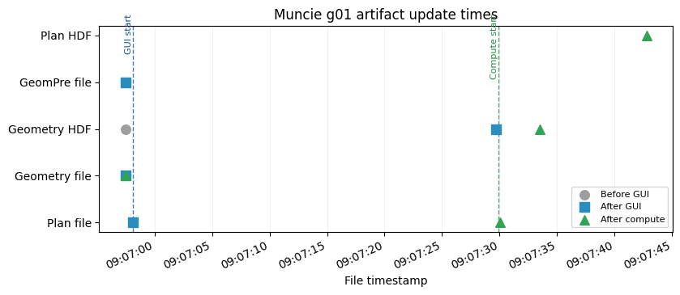

Displayed 2 validation figure(s).
{'label': 'Muncie: lateral structure river stations',
'project': 'Muncie',
'geometry_number': '01',
'plan_number': '02',
'status': 'passed',
'passed': True,
'plan_path': 'C:\\GH\\ras-commander\\working\\notebook_runs\\122_full_live_20260429_085928\\example_projects\\Muncie_122_rasmapper_updates_rm09_muncie_lateral_stru\\Muncie.p02',
'plan_encoding': 'utf-8',
'geometry_path': 'C:\\GH\\ras-commander\\working\\notebook_runs\\122_full_live_20260429_085928\\example_projects\\Muncie_122_rasmapper_updates_rm09_muncie_lateral_stru\\Muncie.g01',
'geometry_encoding': 'utf-8',
'geometry_hdf_path': 'C:\\GH\\ras-commander\\working\\notebook_runs\\122_full_live_20260429_085928\\example_projects\\Muncie_122_rasmapper_updates_rm09_muncie_lateral_stru\\Muncie.g01.hdf',
'geometry_hdf_keys': 'Geometry',
'plan_hdf_path': 'C:\\GH\\ras-commander\\working\\notebook_runs\\122_full_live_20260429_085928\\example_projects\\Muncie_122_rasmapper_updates_rm09_muncie_lateral_stru\\Muncie.p02.hdf',
'plan_hdf_keys': 'Event Conditions, Geometry, Plan Data, Results',
'plan_file_read': True,
'plan_shortid_updated': True,
'plan_title_updated': True,
'plan_geometry_updated': True,
'geometry_preprocessor_enabled': True,
'geometry_file_read': True,
'gui_update_succeeded': True,
'geometry_artifact_updated': True,
'geometry_hdf_read': True,
'compute_ran': True,
'compute_succeeded': True,
'result_hdf_read': True,
'result_hdf_updated': True,
'figures_displayed': 2}
Demonstration 10: Muncie: create edge lines at XS limits¶
2026-04-29 09:07:43 - ras_commander.RasExamples - INFO - ----- RasExamples Extracting Project -----
2026-04-29 09:07:43 - ras_commander.RasExamples - INFO - Extracting project 'Muncie' as 'Muncie_122_rasmapper_updates_rm10_muncie_create_edge_'
--------------------------------------------------------------------------------
Muncie: create edge lines at XS limits
Model: Muncie -> suffix 122_rasmapper_updates_rm10_muncie_create_edge_
Function: RasMapperLayerCommandWorkflow.run_command
Geometry: g01
Plan clone metadata: shortid=RM10_MUNCIE_CREATE_EDGE_, title=RM 10 Muncie create edge lines a
Args: ('Edge Lines', 'edge_lines_compute', '01')
Kwargs: {'timeout': 900}
2026-04-29 09:07:43 - ras_commander.RasExamples - INFO - Successfully extracted project 'Muncie' to C:\GH\ras-commander\working\notebook_runs\122_full_live_20260429_085928\example_projects\Muncie_122_rasmapper_updates_rm10_muncie_create_edge_
2026-04-29 09:07:43 - ras_commander.RasUtils - INFO - Discovered HEC-RAS 7.0 at C:\Program Files (x86)\HEC\HEC-RAS\7.0\Ras.exe via filesystem (x86)
2026-04-29 09:07:43 - ras_commander.RasUtils - INFO - Discovered HEC-RAS 6.7 Beta 5 at C:\Program Files (x86)\HEC\HEC-RAS\6.7 Beta 5\Ras.exe via filesystem (x86)
2026-04-29 09:07:43 - ras_commander.RasUtils - INFO - Discovered HEC-RAS 6.7 Beta 4 at C:\Program Files (x86)\HEC\HEC-RAS\6.7 Beta 4\Ras.exe via filesystem (x86)
2026-04-29 09:07:43 - ras_commander.RasUtils - INFO - Discovered HEC-RAS 6.5 at C:\Program Files (x86)\HEC\HEC-RAS\6.5\Ras.exe via filesystem (x86)
2026-04-29 09:07:43 - ras_commander.RasUtils - INFO - Discovered HEC-RAS 6.4.1 at C:\Program Files (x86)\HEC\HEC-RAS\6.4.1\Ras.exe via filesystem (x86)
2026-04-29 09:07:43 - ras_commander.RasUtils - INFO - Discovered HEC-RAS 6.3.1 at C:\Program Files (x86)\HEC\HEC-RAS\6.3.1\Ras.exe via filesystem (x86)
2026-04-29 09:07:43 - ras_commander.RasUtils - INFO - Discovered HEC-RAS 6.3 at C:\Program Files (x86)\HEC\HEC-RAS\6.3\Ras.exe via filesystem (x86)
2026-04-29 09:07:43 - ras_commander.RasUtils - INFO - Discovered HEC-RAS 6.2 at C:\Program Files (x86)\HEC\HEC-RAS\6.2\Ras.exe via filesystem (x86)
2026-04-29 09:07:43 - ras_commander.RasUtils - INFO - Discovered HEC-RAS 6.1 at C:\Program Files (x86)\HEC\HEC-RAS\6.1\Ras.exe via filesystem (x86)
2026-04-29 09:07:43 - ras_commander.RasUtils - INFO - Discovered HEC-RAS 6.0 at C:\Program Files (x86)\HEC\HEC-RAS\6.0\Ras.exe via filesystem (x86)
2026-04-29 09:07:43 - ras_commander.RasUtils - INFO - Discovered HEC-RAS 5.0.7 at C:\Program Files (x86)\HEC\HEC-RAS\5.0.7\Ras.exe via filesystem (x86)
2026-04-29 09:07:43 - ras_commander.RasUtils - INFO - Discovered HEC-RAS 5.0.6 at C:\Program Files (x86)\HEC\HEC-RAS\5.0.6\Ras.exe via filesystem (x86)
2026-04-29 09:07:43 - ras_commander.RasUtils - INFO - Discovered HEC-RAS 5.0.5 at C:\Program Files (x86)\HEC\HEC-RAS\5.0.5\Ras.exe via filesystem (x86)
2026-04-29 09:07:43 - ras_commander.RasUtils - INFO - Discovered HEC-RAS 5.0.4 at C:\Program Files (x86)\HEC\HEC-RAS\5.0.4\Ras.exe via filesystem (x86)
2026-04-29 09:07:43 - ras_commander.RasUtils - INFO - Discovered HEC-RAS 5.0.3 at C:\Program Files (x86)\HEC\HEC-RAS\5.0.3\Ras.exe via filesystem (x86)
2026-04-29 09:07:43 - ras_commander.RasUtils - INFO - Discovered HEC-RAS 5.0.1 at C:\Program Files (x86)\HEC\HEC-RAS\5.0.1\Ras.exe via filesystem (x86)
2026-04-29 09:07:43 - ras_commander.RasUtils - INFO - Discovered HEC-RAS 5.0 at C:\Program Files (x86)\HEC\HEC-RAS\5.0\Ras.exe via filesystem (x86)
2026-04-29 09:07:43 - ras_commander.RasUtils - INFO - Discovered HEC-RAS 4.1.0 at C:\Program Files (x86)\HEC\HEC-RAS\4.1.0\Ras.exe via filesystem (x86)
2026-04-29 09:07:43 - ras_commander.RasUtils - INFO - Discovered HEC-RAS 4.0 at C:\Program Files (x86)\HEC\HEC-RAS\4.0\Ras.exe via filesystem (x86)
2026-04-29 09:07:43 - ras_commander.RasUtils - INFO - Discovered HEC-RAS 6.6 at C:\Program Files (x86)\HEC\HEC-RAS\6.6\Ras.exe via filesystem (x86)
2026-04-29 09:07:43 - ras_commander.RasUtils - INFO - Discovered 20 installed HEC-RAS version(s)
2026-04-29 09:07:43 - ras_commander.RasPrj - INFO - HEC-RAS 7.0 found via version discovery: C:\Program Files (x86)\HEC\HEC-RAS\7.0\Ras.exe
2026-04-29 09:07:43 - ras_commander.RasMap - INFO - Successfully parsed RASMapper file: C:\GH\ras-commander\working\notebook_runs\122_full_live_20260429_085928\example_projects\Muncie_122_rasmapper_updates_rm10_muncie_create_edge_\Muncie.rasmap
2026-04-29 09:07:43 - ras_commander.hdf.HdfBase - INFO - Found projection in projection file: C:\GH\ras-commander\working\notebook_runs\122_full_live_20260429_085928\example_projects\Muncie_122_rasmapper_updates_rm10_muncie_create_edge_\GIS_Data\Muncie_IA_Clip.prj
2026-04-29 09:07:43 - ras_commander.RasPrj - INFO - Updated results_df with 3 plan(s)
2026-04-29 09:07:43 - ras_commander.RasPrj - INFO - ras-commander v0.94.0 | An open-source project of CLB Engineering Corporation (https://clbengineering.com/) | Docs: https://ras-commander.readthedocs.io | GitHub: https://github.com/gpt-cmdr/ras-commander
2026-04-29 09:07:43 - ras_commander.RasPrj - INFO - Project initialized: Muncie | Folder: C:\GH\ras-commander\working\notebook_runs\122_full_live_20260429_085928\example_projects\Muncie_122_rasmapper_updates_rm10_muncie_create_edge_
2026-04-29 09:07:43 - ras_commander.RasPrj - INFO - Using HEC-RAS executable: C:\Program Files (x86)\HEC\HEC-RAS\7.0\Ras.exe
2026-04-29 09:07:43 - ras_commander.RasUtils - INFO - File cloned from C:\GH\ras-commander\working\notebook_runs\122_full_live_20260429_085928\example_projects\Muncie_122_rasmapper_updates_rm10_muncie_create_edge_\Muncie.p01 to C:\GH\ras-commander\working\notebook_runs\122_full_live_20260429_085928\example_projects\Muncie_122_rasmapper_updates_rm10_muncie_create_edge_\Muncie.p02
2026-04-29 09:07:43 - ras_commander.RasUtils - INFO - Successfully updated file: C:\GH\ras-commander\working\notebook_runs\122_full_live_20260429_085928\example_projects\Muncie_122_rasmapper_updates_rm10_muncie_create_edge_\Muncie.p02
2026-04-29 09:07:43 - ras_commander.RasUtils - INFO - Project file updated with new Plan entry: 02
2026-04-29 09:07:43 - ras_commander.RasMap - INFO - Successfully parsed RASMapper file: C:\GH\ras-commander\working\notebook_runs\122_full_live_20260429_085928\example_projects\Muncie_122_rasmapper_updates_rm10_muncie_create_edge_\Muncie.rasmap
2026-04-29 09:07:44 - ras_commander.hdf.HdfBase - INFO - Found projection in projection file: C:\GH\ras-commander\working\notebook_runs\122_full_live_20260429_085928\example_projects\Muncie_122_rasmapper_updates_rm10_muncie_create_edge_\GIS_Data\Muncie_IA_Clip.prj
2026-04-29 09:07:44 - ras_commander.RasPrj - INFO - Updated results_df with 4 plan(s)
2026-04-29 09:07:44 - ras_commander.RasPlan - INFO - Updated Geom File in plan file to g01 for plan 02
2026-04-29 09:07:44 - ras_commander.RasPlan - INFO - Geometry for plan 02 set to 01
2026-04-29 09:07:44 - ras_commander.RasPlan - INFO - Successfully updated run flags in plan file: C:\GH\ras-commander\working\notebook_runs\122_full_live_20260429_085928\example_projects\Muncie_122_rasmapper_updates_rm10_muncie_create_edge_\Muncie.p02 (flags modified: 1)
2026-04-29 09:07:44 - ras_commander.RasUtils - INFO - Constructed plan file path: C:\GH\ras-commander\working\notebook_runs\122_full_live_20260429_085928\example_projects\Muncie_122_rasmapper_updates_rm10_muncie_create_edge_\Muncie.p02
2026-04-29 09:07:44 - ras_commander.RasPlan - INFO - Updated Short Identifier in plan file to: RM10_MUNCIE_CREATE_EDGE_
2026-04-29 09:07:44 - ras_commander.RasUtils - INFO - Constructed plan file path: C:\GH\ras-commander\working\notebook_runs\122_full_live_20260429_085928\example_projects\Muncie_122_rasmapper_updates_rm10_muncie_create_edge_\Muncie.p02
2026-04-29 09:07:44 - ras_commander.RasPlan - INFO - Updated Plan Title in plan file to: RM 10 Muncie create edge lines a
2026-04-29 09:07:44 - ras_commander.RasPlan - INFO - Successfully updated run flags in plan file: C:\GH\ras-commander\working\notebook_runs\122_full_live_20260429_085928\example_projects\Muncie_122_rasmapper_updates_rm10_muncie_create_edge_\Muncie.p02 (flags modified: 1)
2026-04-29 09:07:44 - ras_commander.RasMap - INFO - Found 3 geometries in .rasmap
2026-04-29 09:07:44 - ras_commander.gui.workflow_base - INFO - Starting RASMapperLayerCommand[Edge Lines > Create Edge Lines at XS Limits] (8 steps)
2026-04-29 09:07:44 - ras_commander.gui.workflow_base - INFO - [1/8] Verify HEC-RAS is closed
2026-04-29 09:07:44 - ras_commander.gui.workflow_base - INFO - [1/8] Verify HEC-RAS is closed completed (0.0s)
2026-04-29 09:07:44 - ras_commander.gui.workflow_base - INFO - [2/8] Launch HEC-RAS
2026-04-29 09:07:44 - ras_commander.gui.hecras_elements - INFO - Opening HEC-RAS...
2026-04-29 09:07:44 - ras_commander.gui.hecras_elements - INFO - HEC-RAS opened with Process ID: 110312
2026-04-29 09:07:45 - ras_commander.gui.hecras_elements - INFO - Found 'already running' dialog - clicking Yes to continue
2026-04-29 09:07:45 - ras_commander.gui.win32_primitives - INFO - Clicked button: &Yes
2026-04-29 09:07:45 - ras_commander.gui.hecras_elements - INFO - Clicked 'Yes' button on already running dialog
2026-04-29 09:07:45 - ras_commander.gui.hecras_elements - INFO - Waiting for HEC-RAS main window...
2026-04-29 09:07:47 - ras_commander.gui.hecras_elements - INFO - Found HEC-RAS main window: HEC-RAS 7.0
2026-04-29 09:07:47 - ras_commander.gui.workflow_base - INFO - [2/8] Launch HEC-RAS completed (3.5s)
2026-04-29 09:07:47 - ras_commander.gui.workflow_base - INFO - [3/8] Open RASMapper
2026-04-29 09:07:48 - ras_commander.gui.hecras_elements - INFO - Found menu item: 'RAS Mapper ...' (ID: 103)
2026-04-29 09:07:48 - ras_commander.gui.win32_primitives - INFO - Clicked menu item ID: 103
2026-04-29 09:07:48 - ras_commander.gui.workflow_base - INFO - [3/8] Open RASMapper completed (0.5s)
2026-04-29 09:07:48 - ras_commander.gui.workflow_base - INFO - [4/8] Wait for RASMapper
2026-04-29 09:07:51 - ras_commander.gui.rasmapper_elements - INFO - RASMapper opened: RAS Mapper (took 3s)
2026-04-29 09:07:51 - ras_commander.gui.workflow_base - INFO - [4/8] Wait for RASMapper completed (3.0s)
2026-04-29 09:07:51 - ras_commander.gui.workflow_base - INFO - [5/8] Start geometry editing
[*] Trying physical mouse right-click...
[*] Physical mouse click at screen (517, 272)
[+] Context menu via physical mouse: hwnd=0x4d02cc
[+] Found menu path item: 'Edit Geometry'
2026-04-29 09:07:57 - ras_commander.gui.workflows.xsec_update - INFO - Started RASMapper geometry edit mode
2026-04-29 09:07:58 - ras_commander.gui.workflow_base - INFO - [5/8] Start geometry editing completed (7.0s)
2026-04-29 09:07:58 - ras_commander.gui.workflow_base - INFO - [6/8] Run layer command
[*] Trying physical mouse right-click...
[*] Physical mouse click at screen (517, 272)
[+] Context menu via physical mouse: hwnd=0x4d02cc
[+] Found menu path item: 'Create Edge Lines at XS Limits'
2026-04-29 09:08:03 - ras_commander.gui.workflows.xsec_update - INFO - Triggered RASMapper layer command: Muncie Base Geometry - 9 SAs > Cross Sections > Edge Lines > Create Edge Lines at XS Limits
2026-04-29 09:08:03 - ras_commander.gui.workflow_base - INFO - [6/8] Run layer command completed (5.6s)
2026-04-29 09:08:03 - ras_commander.gui.workflow_base - INFO - [7/8] Wait for command to complete
2026-04-29 09:08:11 - ras_commander.gui.rasmapper_elements - INFO - RASMapper remained responsive; treating as idle (6s)
2026-04-29 09:08:11 - ras_commander.gui.workflow_base - INFO - [7/8] Wait for command to complete completed (8.0s)
2026-04-29 09:08:11 - ras_commander.gui.workflow_base - INFO - [8/8] Save geometry
2026-04-29 09:08:12 - ras_commander.gui.workflows.xsec_update - INFO - Sent Ctrl+S to RASMapper
2026-04-29 09:08:12 - ras_commander.gui.workflow_base - INFO - [8/8] Save geometry completed (0.7s)
2026-04-29 09:08:12 - ras_commander.gui.workflow_base - INFO - RASMapperLayerCommand[Edge Lines > Create Edge Lines at XS Limits] completed successfully (28.3s)
2026-04-29 09:08:12 - ras_commander.gui.win32_primitives - INFO - Closed window: RAS Mapper
2026-04-29 09:08:14 - ras_commander.gui.win32_primitives - INFO - Clicked button: &No
2026-04-29 09:08:14 - ras_commander.gui.hecras_elements - INFO - Dismissed save prompt
2026-04-29 09:08:14 - ras_commander.gui.win32_primitives - INFO - Closed window: HEC-RAS 7.0
2026-04-29 09:08:14 - ras_commander.RasCmdr - INFO - Using ras_object with project folder: C:\GH\ras-commander\working\notebook_runs\122_full_live_20260429_085928\example_projects\Muncie_122_rasmapper_updates_rm10_muncie_create_edge_
2026-04-29 09:08:14 - ras_commander.RasCurrency - INFO - Deleted geometry HDF: C:\GH\ras-commander\working\notebook_runs\122_full_live_20260429_085928\example_projects\Muncie_122_rasmapper_updates_rm10_muncie_create_edge_\Muncie.g01.hdf
2026-04-29 09:08:14 - ras_commander.geom.GeomPreprocessor - INFO - Clearing geometry preprocessor file for single plan: C:\GH\ras-commander\working\notebook_runs\122_full_live_20260429_085928\example_projects\Muncie_122_rasmapper_updates_rm10_muncie_create_edge_\Muncie.p02
2026-04-29 09:08:14 - ras_commander.geom.GeomPreprocessor - INFO - Deleted geometry preprocessor file: C:\GH\ras-commander\working\notebook_runs\122_full_live_20260429_085928\example_projects\Muncie_122_rasmapper_updates_rm10_muncie_create_edge_\Muncie.c01
2026-04-29 09:08:14 - ras_commander.geom.GeomPreprocessor - INFO - Geometry dataframe updated successfully.
2026-04-29 09:08:14 - ras_commander.RasCmdr - INFO - Force-cleared all geometry preprocessor files for plan: 02
2026-04-29 09:08:14 - ras_commander.RasUtils - INFO - Using provided plan file path: C:\GH\ras-commander\working\notebook_runs\122_full_live_20260429_085928\example_projects\Muncie_122_rasmapper_updates_rm10_muncie_create_edge_\Muncie.p02
2026-04-29 09:08:14 - ras_commander.RasUtils - INFO - Successfully updated file: C:\GH\ras-commander\working\notebook_runs\122_full_live_20260429_085928\example_projects\Muncie_122_rasmapper_updates_rm10_muncie_create_edge_\Muncie.p02
2026-04-29 09:08:14 - ras_commander.RasCmdr - INFO - Set number of cores to 2 for plan: 02
2026-04-29 09:08:14 - ras_commander.RasCmdr - INFO - Running HEC-RAS from the Command Line:
2026-04-29 09:08:14 - ras_commander.RasCmdr - INFO - Running command: "C:\Program Files (x86)\HEC\HEC-RAS\7.0\Ras.exe" -c "C:\GH\ras-commander\working\notebook_runs\122_full_live_20260429_085928\example_projects\Muncie_122_rasmapper_updates_rm10_muncie_create_edge_\Muncie.prj" "C:\GH\ras-commander\working\notebook_runs\122_full_live_20260429_085928\example_projects\Muncie_122_rasmapper_updates_rm10_muncie_create_edge_\Muncie.p02"
GUI update success: True
2026-04-29 09:08:28 - ras_commander.RasCmdr - INFO - HEC-RAS execution completed for plan: 02
2026-04-29 09:08:28 - ras_commander.RasCmdr - INFO - Total run time for plan 02: 13.09 seconds
2026-04-29 09:08:28 - ras_commander.hdf.HdfResultsPlan - INFO - Using existing Path object HDF file: C:\GH\ras-commander\working\notebook_runs\122_full_live_20260429_085928\example_projects\Muncie_122_rasmapper_updates_rm10_muncie_create_edge_\Muncie.p02.hdf
2026-04-29 09:08:28 - ras_commander.hdf.HdfResultsPlan - INFO - Final validated file path: C:\GH\ras-commander\working\notebook_runs\122_full_live_20260429_085928\example_projects\Muncie_122_rasmapper_updates_rm10_muncie_create_edge_\Muncie.p02.hdf
2026-04-29 09:08:28 - ras_commander.hdf.HdfResultsPlan - INFO - Reading computation messages from HDF: Muncie.p02.hdf
2026-04-29 09:08:28 - ras_commander.hdf.HdfResultsPlan - INFO - Successfully extracted 2661 characters from HDF
2026-04-29 09:08:28 - ras_commander.hdf.HdfResultsPlan - INFO - Using existing Path object HDF file: C:\GH\ras-commander\working\notebook_runs\122_full_live_20260429_085928\example_projects\Muncie_122_rasmapper_updates_rm10_muncie_create_edge_\Muncie.p02.hdf
2026-04-29 09:08:28 - ras_commander.hdf.HdfResultsPlan - INFO - Final validated file path: C:\GH\ras-commander\working\notebook_runs\122_full_live_20260429_085928\example_projects\Muncie_122_rasmapper_updates_rm10_muncie_create_edge_\Muncie.p02.hdf
2026-04-29 09:08:28 - ras_commander.hdf.HdfResultsPlan - INFO - Extracting Plan Information from: Muncie.p02.hdf
2026-04-29 09:08:28 - ras_commander.hdf.HdfResultsPlan - INFO - Plan Name: RM 10 Muncie create edge lines a
2026-04-29 09:08:28 - ras_commander.hdf.HdfResultsPlan - INFO - Simulation Duration (hours): 24.0
2026-04-29 09:08:28 - ras_commander.hdf.HdfResultsPlan - INFO - Using existing Path object HDF file: C:\GH\ras-commander\working\notebook_runs\122_full_live_20260429_085928\example_projects\Muncie_122_rasmapper_updates_rm10_muncie_create_edge_\Muncie.p02.hdf
2026-04-29 09:08:28 - ras_commander.hdf.HdfResultsPlan - INFO - Final validated file path: C:\GH\ras-commander\working\notebook_runs\122_full_live_20260429_085928\example_projects\Muncie_122_rasmapper_updates_rm10_muncie_create_edge_\Muncie.p02.hdf
2026-04-29 09:08:28 - ras_commander.RasPrj - INFO - Updated results_df with 1 plan(s)
Compute success: True
WorkflowResult(success=True, steps_completed=['Verify HEC-RAS is closed', 'Launch HEC-RAS', 'Open RASMapper', 'Wait for RASMapper', 'Start geometry editing', 'Run layer command', 'Wait for command to complete', 'Save geometry'], steps_failed=[], step_results={'Verify HEC-RAS is closed': None, 'Launch HEC-RAS': None, 'Open RASMapper': None, 'Wait for RASMapper': None, 'Start geometry editing': None, 'Run layer command': None, 'Wait for command to complete': None, 'Save geometry': None}, elapsed_seconds=28.25086808204651, error=None)
| label | project | geometry_number | plan_number | status | passed | plan_path | plan_encoding | geometry_path | geometry_encoding | ... | plan_geometry_updated | geometry_preprocessor_enabled | geometry_file_read | gui_update_succeeded | geometry_artifact_updated | geometry_hdf_read | compute_ran | compute_succeeded | result_hdf_read | result_hdf_updated | |
|---|---|---|---|---|---|---|---|---|---|---|---|---|---|---|---|---|---|---|---|---|---|
| 0 | Muncie: create edge lines at XS limits | Muncie | 01 | 02 | passed | True | C:\GH\ras-commander\working\notebook_runs\122_... | utf-8 | C:\GH\ras-commander\working\notebook_runs\122_... | utf-8 | ... | True | True | True | True | True | True | True | True | True | True |
1 rows × 27 columns
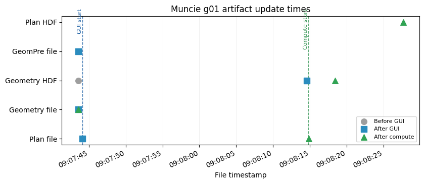
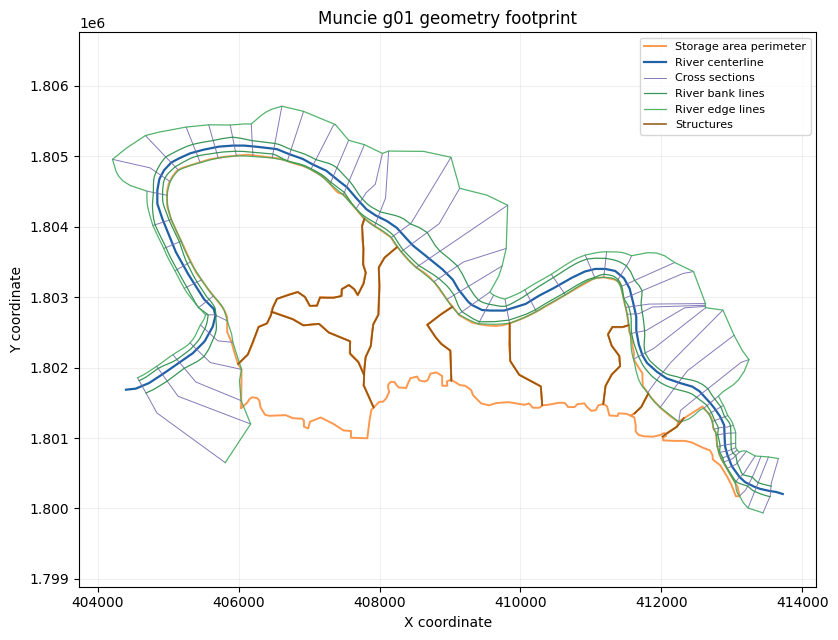
Displayed 2 validation figure(s).
{'label': 'Muncie: create edge lines at XS limits',
'project': 'Muncie',
'geometry_number': '01',
'plan_number': '02',
'status': 'passed',
'passed': True,
'plan_path': 'C:\\GH\\ras-commander\\working\\notebook_runs\\122_full_live_20260429_085928\\example_projects\\Muncie_122_rasmapper_updates_rm10_muncie_create_edge_\\Muncie.p02',
'plan_encoding': 'utf-8',
'geometry_path': 'C:\\GH\\ras-commander\\working\\notebook_runs\\122_full_live_20260429_085928\\example_projects\\Muncie_122_rasmapper_updates_rm10_muncie_create_edge_\\Muncie.g01',
'geometry_encoding': 'utf-8',
'geometry_hdf_path': 'C:\\GH\\ras-commander\\working\\notebook_runs\\122_full_live_20260429_085928\\example_projects\\Muncie_122_rasmapper_updates_rm10_muncie_create_edge_\\Muncie.g01.hdf',
'geometry_hdf_keys': 'Geometry',
'plan_hdf_path': 'C:\\GH\\ras-commander\\working\\notebook_runs\\122_full_live_20260429_085928\\example_projects\\Muncie_122_rasmapper_updates_rm10_muncie_create_edge_\\Muncie.p02.hdf',
'plan_hdf_keys': 'Event Conditions, Geometry, Plan Data, Results',
'plan_file_read': True,
'plan_shortid_updated': True,
'plan_title_updated': True,
'plan_geometry_updated': True,
'geometry_preprocessor_enabled': True,
'geometry_file_read': True,
'gui_update_succeeded': True,
'geometry_artifact_updated': True,
'geometry_hdf_read': True,
'compute_ran': True,
'compute_succeeded': True,
'result_hdf_read': True,
'result_hdf_updated': True,
'figures_displayed': 2}
Demonstration 11: HCFCD M3 Clear Creek: update blocked obstructions on XSs¶
2026-04-29 09:08:28 - ras_commander.sources.county.m3_model - INFO - ----- M3Model Extracting Model -----
2026-04-29 09:08:28 - ras_commander.sources.county.m3_model - INFO - Extracting model 'A' - Clear Creek
2026-04-29 09:08:28 - ras_commander.sources.county.m3_model - INFO - Downloading from: https://files.m3models.org/modellibrary/A_Clear_FEMA_Effective.zip?effectivedate=2022-05-05%2005:00
2026-04-29 09:08:28 - ras_commander.sources.county.m3_model - INFO - Size: 0.03 GB
--------------------------------------------------------------------------------
HCFCD M3 Clear Creek: update blocked obstructions on XSs
Model: HCFCD M3 Clear Creek A120-00-00 -> suffix 122_rasmapper_updates_rm11_hcfcd_m3_clear_cree
Function: RasMapperLayerCommandWorkflow.run_command
Geometry: g01
Plan clone metadata: shortid=RM11_HCFCD_M3_CLEAR_CREE, title=RM 11 HCFCD M3 Clear Creek updat
Args: ('Blocked Obstructions', 'blocked_obstructions_update_on_xss', '01')
Kwargs: {'timeout': 900}
Downloading A: 0%| | 0.00/25.7M [00:00<?, ?iB/s]
Downloading A: 28%|██▊ | 7.19M/25.7M [00:00<00:00, 75.3MiB/s]
Downloading A: 56%|█████▌ | 14.4M/25.7M [00:00<00:00, 26.6MiB/s]
Downloading A: 71%|███████▏ | 18.4M/25.7M [00:00<00:00, 27.4MiB/s]
Downloading A: 100%|██████████| 25.7M/25.7M [00:00<00:00, 36.3MiB/s]
2026-04-29 09:08:29 - ras_commander.sources.county.m3_model - INFO - Downloaded to C:\GH\ras-commander\working\notebook_runs\122_full_live_20260429_085928\working\notebook_runs\m3_models\A_Clear_FEMA_Effective.zip
2026-04-29 09:08:29 - ras_commander.sources.county.m3_model - INFO - Extracting to C:\GH\ras-commander\working\notebook_runs\122_full_live_20260429_085928\working\notebook_runs\m3_models\Clear Creek...
2026-04-29 09:08:29 - ras_commander.sources.county.m3_model - INFO - Successfully extracted model 'A' to C:\GH\ras-commander\working\notebook_runs\122_full_live_20260429_085928\working\notebook_runs\m3_models\Clear Creek
2026-04-29 09:08:29 - ras_commander.RasUtils - INFO - Discovered HEC-RAS 7.0 at C:\Program Files (x86)\HEC\HEC-RAS\7.0\Ras.exe via filesystem (x86)
2026-04-29 09:08:29 - ras_commander.RasUtils - INFO - Discovered HEC-RAS 6.7 Beta 5 at C:\Program Files (x86)\HEC\HEC-RAS\6.7 Beta 5\Ras.exe via filesystem (x86)
2026-04-29 09:08:29 - ras_commander.RasUtils - INFO - Discovered HEC-RAS 6.7 Beta 4 at C:\Program Files (x86)\HEC\HEC-RAS\6.7 Beta 4\Ras.exe via filesystem (x86)
2026-04-29 09:08:29 - ras_commander.RasUtils - INFO - Discovered HEC-RAS 6.5 at C:\Program Files (x86)\HEC\HEC-RAS\6.5\Ras.exe via filesystem (x86)
2026-04-29 09:08:29 - ras_commander.RasUtils - INFO - Discovered HEC-RAS 6.4.1 at C:\Program Files (x86)\HEC\HEC-RAS\6.4.1\Ras.exe via filesystem (x86)
2026-04-29 09:08:29 - ras_commander.RasUtils - INFO - Discovered HEC-RAS 6.3.1 at C:\Program Files (x86)\HEC\HEC-RAS\6.3.1\Ras.exe via filesystem (x86)
2026-04-29 09:08:29 - ras_commander.RasUtils - INFO - Discovered HEC-RAS 6.3 at C:\Program Files (x86)\HEC\HEC-RAS\6.3\Ras.exe via filesystem (x86)
2026-04-29 09:08:29 - ras_commander.RasUtils - INFO - Discovered HEC-RAS 6.2 at C:\Program Files (x86)\HEC\HEC-RAS\6.2\Ras.exe via filesystem (x86)
2026-04-29 09:08:29 - ras_commander.RasUtils - INFO - Discovered HEC-RAS 6.1 at C:\Program Files (x86)\HEC\HEC-RAS\6.1\Ras.exe via filesystem (x86)
2026-04-29 09:08:29 - ras_commander.RasUtils - INFO - Discovered HEC-RAS 6.0 at C:\Program Files (x86)\HEC\HEC-RAS\6.0\Ras.exe via filesystem (x86)
2026-04-29 09:08:29 - ras_commander.RasUtils - INFO - Discovered HEC-RAS 5.0.7 at C:\Program Files (x86)\HEC\HEC-RAS\5.0.7\Ras.exe via filesystem (x86)
2026-04-29 09:08:29 - ras_commander.RasUtils - INFO - Discovered HEC-RAS 5.0.6 at C:\Program Files (x86)\HEC\HEC-RAS\5.0.6\Ras.exe via filesystem (x86)
2026-04-29 09:08:29 - ras_commander.RasUtils - INFO - Discovered HEC-RAS 5.0.5 at C:\Program Files (x86)\HEC\HEC-RAS\5.0.5\Ras.exe via filesystem (x86)
2026-04-29 09:08:29 - ras_commander.RasUtils - INFO - Discovered HEC-RAS 5.0.4 at C:\Program Files (x86)\HEC\HEC-RAS\5.0.4\Ras.exe via filesystem (x86)
2026-04-29 09:08:29 - ras_commander.RasUtils - INFO - Discovered HEC-RAS 5.0.3 at C:\Program Files (x86)\HEC\HEC-RAS\5.0.3\Ras.exe via filesystem (x86)
2026-04-29 09:08:29 - ras_commander.RasUtils - INFO - Discovered HEC-RAS 5.0.1 at C:\Program Files (x86)\HEC\HEC-RAS\5.0.1\Ras.exe via filesystem (x86)
2026-04-29 09:08:29 - ras_commander.RasUtils - INFO - Discovered HEC-RAS 5.0 at C:\Program Files (x86)\HEC\HEC-RAS\5.0\Ras.exe via filesystem (x86)
2026-04-29 09:08:29 - ras_commander.RasUtils - INFO - Discovered HEC-RAS 4.1.0 at C:\Program Files (x86)\HEC\HEC-RAS\4.1.0\Ras.exe via filesystem (x86)
2026-04-29 09:08:29 - ras_commander.RasUtils - INFO - Discovered HEC-RAS 4.0 at C:\Program Files (x86)\HEC\HEC-RAS\4.0\Ras.exe via filesystem (x86)
2026-04-29 09:08:29 - ras_commander.RasUtils - INFO - Discovered HEC-RAS 6.6 at C:\Program Files (x86)\HEC\HEC-RAS\6.6\Ras.exe via filesystem (x86)
2026-04-29 09:08:29 - ras_commander.RasUtils - INFO - Discovered 20 installed HEC-RAS version(s)
2026-04-29 09:08:29 - ras_commander.RasPrj - INFO - HEC-RAS 7.0 found via version discovery: C:\Program Files (x86)\HEC\HEC-RAS\7.0\Ras.exe
2026-04-29 09:08:29 - ras_commander.RasPrj - INFO - No unsteady flow files found in the project.
2026-04-29 09:08:29 - ras_commander.RasMap - WARNING - RASMapper file not found: C:\GH\ras-commander\working\notebook_runs\122_full_live_20260429_085928\working\notebook_runs\example_projects\A120-00-00_122_rasmapper_updates_rm11_hcfcd_m3_clear_cree\A120_00_00.rasmap
2026-04-29 09:08:29 - ras_commander.RasMap - WARNING - No .rasmap file found for this project. Creating empty rasmap_df.
2026-04-29 09:08:29 - ras_commander.RasPrj - WARNING - Could not resolve project CRS for C:\GH\ras-commander\working\notebook_runs\122_full_live_20260429_085928\working\notebook_runs\example_projects\A120-00-00_122_rasmapper_updates_rm11_hcfcd_m3_clear_cree
2026-04-29 09:08:29 - ras_commander.RasPrj - INFO - Updated results_df with 2 plan(s)
2026-04-29 09:08:29 - ras_commander.RasPrj - INFO - ras-commander v0.94.0 | An open-source project of CLB Engineering Corporation (https://clbengineering.com/) | Docs: https://ras-commander.readthedocs.io | GitHub: https://github.com/gpt-cmdr/ras-commander
2026-04-29 09:08:29 - ras_commander.RasPrj - INFO - Project initialized: A120_00_00 | Folder: C:\GH\ras-commander\working\notebook_runs\122_full_live_20260429_085928\working\notebook_runs\example_projects\A120-00-00_122_rasmapper_updates_rm11_hcfcd_m3_clear_cree
2026-04-29 09:08:29 - ras_commander.RasPrj - INFO - Using HEC-RAS executable: C:\Program Files (x86)\HEC\HEC-RAS\7.0\Ras.exe
2026-04-29 09:08:29 - ras_commander.RasUtils - INFO - File cloned from C:\GH\ras-commander\working\notebook_runs\122_full_live_20260429_085928\working\notebook_runs\example_projects\A120-00-00_122_rasmapper_updates_rm11_hcfcd_m3_clear_cree\A120_00_00.p02 to C:\GH\ras-commander\working\notebook_runs\122_full_live_20260429_085928\working\notebook_runs\example_projects\A120-00-00_122_rasmapper_updates_rm11_hcfcd_m3_clear_cree\A120_00_00.p01
2026-04-29 09:08:29 - ras_commander.RasUtils - INFO - Successfully updated file: C:\GH\ras-commander\working\notebook_runs\122_full_live_20260429_085928\working\notebook_runs\example_projects\A120-00-00_122_rasmapper_updates_rm11_hcfcd_m3_clear_cree\A120_00_00.p01
2026-04-29 09:08:29 - ras_commander.RasUtils - INFO - Project file updated with new Plan entry: 01
2026-04-29 09:08:29 - ras_commander.RasPrj - INFO - No unsteady flow files found in the project.
2026-04-29 09:08:29 - ras_commander.RasMap - WARNING - RASMapper file not found: C:\GH\ras-commander\working\notebook_runs\122_full_live_20260429_085928\working\notebook_runs\example_projects\A120-00-00_122_rasmapper_updates_rm11_hcfcd_m3_clear_cree\A120_00_00.rasmap
2026-04-29 09:08:29 - ras_commander.RasMap - WARNING - No .rasmap file found for this project. Creating empty rasmap_df.
2026-04-29 09:08:29 - ras_commander.RasPrj - WARNING - Could not resolve project CRS for C:\GH\ras-commander\working\notebook_runs\122_full_live_20260429_085928\working\notebook_runs\example_projects\A120-00-00_122_rasmapper_updates_rm11_hcfcd_m3_clear_cree
2026-04-29 09:08:29 - ras_commander.RasPrj - INFO - Updated results_df with 3 plan(s)
2026-04-29 09:08:29 - ras_commander.RasPlan - INFO - Updated Geom File in plan file to g01 for plan 01
2026-04-29 09:08:29 - ras_commander.RasPlan - INFO - Geometry for plan 01 set to 01
2026-04-29 09:08:29 - ras_commander.RasPlan - INFO - Successfully updated run flags in plan file: C:\GH\ras-commander\working\notebook_runs\122_full_live_20260429_085928\working\notebook_runs\example_projects\A120-00-00_122_rasmapper_updates_rm11_hcfcd_m3_clear_cree\A120_00_00.p01 (flags modified: 1)
2026-04-29 09:08:29 - ras_commander.RasUtils - INFO - Constructed plan file path: C:\GH\ras-commander\working\notebook_runs\122_full_live_20260429_085928\working\notebook_runs\example_projects\A120-00-00_122_rasmapper_updates_rm11_hcfcd_m3_clear_cree\A120_00_00.p01
2026-04-29 09:08:29 - ras_commander.RasPlan - INFO - Updated Short Identifier in plan file to: RM11_HCFCD_M3_CLEAR_CREE
2026-04-29 09:08:29 - ras_commander.RasUtils - INFO - Constructed plan file path: C:\GH\ras-commander\working\notebook_runs\122_full_live_20260429_085928\working\notebook_runs\example_projects\A120-00-00_122_rasmapper_updates_rm11_hcfcd_m3_clear_cree\A120_00_00.p01
2026-04-29 09:08:29 - ras_commander.RasPlan - INFO - Updated Plan Title in plan file to: RM 11 HCFCD M3 Clear Creek updat
2026-04-29 09:08:29 - ras_commander.RasPlan - INFO - Successfully updated run flags in plan file: C:\GH\ras-commander\working\notebook_runs\122_full_live_20260429_085928\working\notebook_runs\example_projects\A120-00-00_122_rasmapper_updates_rm11_hcfcd_m3_clear_cree\A120_00_00.p01 (flags modified: 1)
2026-04-29 09:08:29 - ras_commander.RasMap - WARNING - RASMapper file not found: C:\GH\ras-commander\working\notebook_runs\122_full_live_20260429_085928\working\notebook_runs\example_projects\A120-00-00_122_rasmapper_updates_rm11_hcfcd_m3_clear_cree\A120_00_00.rasmap
2026-04-29 09:08:29 - ras_commander.gui.workflow_base - INFO - Starting RASMapperLayerCommand[Blocked Obstructions > Update Blocked Obstructions on XSs] (8 steps)
2026-04-29 09:08:29 - ras_commander.gui.workflow_base - INFO - [1/8] Verify HEC-RAS is closed
2026-04-29 09:08:29 - ras_commander.gui.workflow_base - INFO - [1/8] Verify HEC-RAS is closed completed (0.0s)
2026-04-29 09:08:29 - ras_commander.gui.workflow_base - INFO - [2/8] Launch HEC-RAS
2026-04-29 09:08:29 - ras_commander.gui.hecras_elements - INFO - Opening HEC-RAS...
2026-04-29 09:08:29 - ras_commander.gui.hecras_elements - INFO - HEC-RAS opened with Process ID: 103404
2026-04-29 09:08:30 - ras_commander.gui.hecras_elements - INFO - Found 'already running' dialog - clicking Yes to continue
2026-04-29 09:08:30 - ras_commander.gui.win32_primitives - INFO - Clicked button: &Yes
2026-04-29 09:08:30 - ras_commander.gui.hecras_elements - INFO - Clicked 'Yes' button on already running dialog
2026-04-29 09:08:31 - ras_commander.gui.hecras_elements - INFO - Waiting for HEC-RAS main window...
2026-04-29 09:08:33 - ras_commander.gui.hecras_elements - INFO - Found HEC-RAS main window: HEC-RAS 7.0
2026-04-29 09:08:33 - ras_commander.gui.workflow_base - INFO - [2/8] Launch HEC-RAS completed (3.5s)
2026-04-29 09:08:33 - ras_commander.gui.workflow_base - INFO - [3/8] Open RASMapper
2026-04-29 09:08:33 - ras_commander.gui.hecras_elements - INFO - Found menu item: 'RAS Mapper ...' (ID: 103)
2026-04-29 09:08:33 - ras_commander.gui.win32_primitives - INFO - Clicked menu item ID: 103
2026-04-29 09:08:33 - ras_commander.gui.workflow_base - INFO - [3/8] Open RASMapper completed (0.5s)
2026-04-29 09:08:33 - ras_commander.gui.workflow_base - INFO - [4/8] Wait for RASMapper
2026-04-29 09:08:36 - ras_commander.gui.rasmapper_elements - INFO - RASMapper opened: RAS Mapper (took 3s)
2026-04-29 09:08:36 - ras_commander.gui.workflow_base - INFO - [4/8] Wait for RASMapper completed (3.0s)
2026-04-29 09:08:36 - ras_commander.gui.workflow_base - INFO - [5/8] Start geometry editing
[*] Trying physical mouse right-click...
[*] Physical mouse click at screen (532, 256)
[+] Context menu via physical mouse: hwnd=0xe2168c
[+] Found menu path item: 'Edit Geometry'
2026-04-29 09:08:42 - ras_commander.gui.workflows.xsec_update - INFO - Started RASMapper geometry edit mode
2026-04-29 09:08:43 - ras_commander.gui.workflow_base - INFO - [5/8] Start geometry editing completed (6.8s)
2026-04-29 09:08:43 - ras_commander.gui.workflow_base - INFO - [6/8] Run layer command
[*] Trying physical mouse right-click...
[*] Physical mouse click at screen (532, 256)
[+] Context menu via physical mouse: hwnd=0xe2168c
[+] Found menu path item: 'Update Blocked Obstructions on XSs'
2026-04-29 09:08:49 - ras_commander.gui.workflows.xsec_update - INFO - Triggered RASMapper layer command: A120-00-00 June 2007 > Cross Sections > Blocked Obstructions > Update Blocked Obstructions on XSs
2026-04-29 09:08:49 - ras_commander.gui.workflow_base - INFO - [6/8] Run layer command completed (5.4s)
2026-04-29 09:08:49 - ras_commander.gui.workflow_base - INFO - [7/8] Wait for command to complete
2026-04-29 09:08:57 - ras_commander.gui.rasmapper_elements - INFO - RASMapper remained responsive; treating as idle (6s)
2026-04-29 09:08:57 - ras_commander.gui.workflow_base - INFO - [7/8] Wait for command to complete completed (8.0s)
2026-04-29 09:08:57 - ras_commander.gui.workflow_base - INFO - [8/8] Save geometry
2026-04-29 09:08:57 - ras_commander.gui.workflows.xsec_update - INFO - Sent Ctrl+S to RASMapper
2026-04-29 09:08:57 - ras_commander.gui.workflow_base - INFO - [8/8] Save geometry completed (0.7s)
2026-04-29 09:08:57 - ras_commander.gui.workflow_base - INFO - RASMapperLayerCommand[Blocked Obstructions > Update Blocked Obstructions on XSs] completed successfully (28.0s)
2026-04-29 09:08:57 - ras_commander.gui.win32_primitives - INFO - Closed window: RAS Mapper
2026-04-29 09:08:59 - ras_commander.gui.win32_primitives - INFO - Clicked button: &No
2026-04-29 09:08:59 - ras_commander.gui.hecras_elements - INFO - Dismissed save prompt
2026-04-29 09:08:59 - ras_commander.gui.win32_primitives - INFO - Closed window: HEC-RAS 7.0
GUI update success: True
WorkflowResult(success=True, steps_completed=['Verify HEC-RAS is closed', 'Launch HEC-RAS', 'Open RASMapper', 'Wait for RASMapper', 'Start geometry editing', 'Run layer command', 'Wait for command to complete', 'Save geometry'], steps_failed=[], step_results={'Verify HEC-RAS is closed': None, 'Launch HEC-RAS': None, 'Open RASMapper': None, 'Wait for RASMapper': None, 'Start geometry editing': None, 'Run layer command': None, 'Wait for command to complete': None, 'Save geometry': None}, elapsed_seconds=27.962700843811035, error=None)
| label | project | geometry_number | plan_number | status | passed | plan_path | plan_encoding | geometry_path | geometry_encoding | ... | plan_file_read | plan_shortid_updated | plan_title_updated | plan_geometry_updated | geometry_preprocessor_enabled | geometry_file_read | gui_update_succeeded | geometry_artifact_updated | geometry_hdf_read | compute_skipped_by_operation | |
|---|---|---|---|---|---|---|---|---|---|---|---|---|---|---|---|---|---|---|---|---|---|
| 0 | HCFCD M3 Clear Creek: update blocked obstructi... | HCFCD M3 Clear Creek A120-00-00 | 01 | 01 | passed | True | C:\GH\ras-commander\working\notebook_runs\122_... | utf-8 | C:\GH\ras-commander\working\notebook_runs\122_... | utf-8 | ... | True | True | True | True | True | True | True | True | True | True |
1 rows × 24 columns
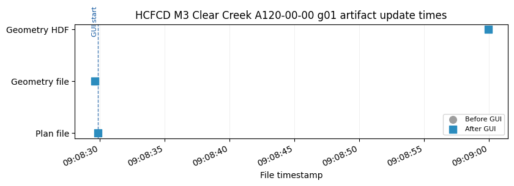
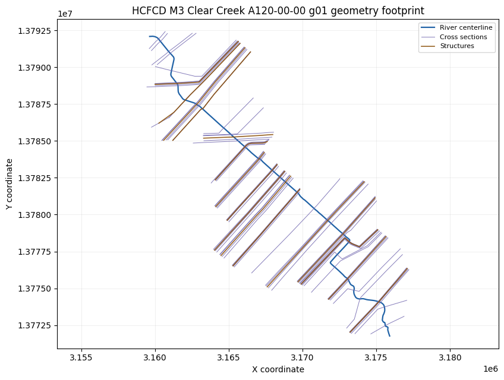
Displayed 2 validation figure(s).
{'label': 'HCFCD M3 Clear Creek: update blocked obstructions on XSs',
'project': 'HCFCD M3 Clear Creek A120-00-00',
'geometry_number': '01',
'plan_number': '01',
'status': 'passed',
'passed': True,
'plan_path': 'C:\\GH\\ras-commander\\working\\notebook_runs\\122_full_live_20260429_085928\\working\\notebook_runs\\example_projects\\A120-00-00_122_rasmapper_updates_rm11_hcfcd_m3_clear_cree\\A120_00_00.p01',
'plan_encoding': 'utf-8',
'geometry_path': 'C:\\GH\\ras-commander\\working\\notebook_runs\\122_full_live_20260429_085928\\working\\notebook_runs\\example_projects\\A120-00-00_122_rasmapper_updates_rm11_hcfcd_m3_clear_cree\\A120_00_00.g01',
'geometry_encoding': 'utf-8',
'geometry_hdf_path': 'C:\\GH\\ras-commander\\working\\notebook_runs\\122_full_live_20260429_085928\\working\\notebook_runs\\example_projects\\A120-00-00_122_rasmapper_updates_rm11_hcfcd_m3_clear_cree\\A120_00_00.g01.hdf',
'geometry_hdf_keys': 'Geometry',
'plan_hdf_path': 'C:\\GH\\ras-commander\\working\\notebook_runs\\122_full_live_20260429_085928\\working\\notebook_runs\\example_projects\\A120-00-00_122_rasmapper_updates_rm11_hcfcd_m3_clear_cree\\A120_00_00.p01.hdf',
'plan_hdf_keys': '',
'plan_file_read': True,
'plan_shortid_updated': True,
'plan_title_updated': True,
'plan_geometry_updated': True,
'geometry_preprocessor_enabled': True,
'geometry_file_read': True,
'gui_update_succeeded': True,
'geometry_artifact_updated': True,
'geometry_hdf_read': True,
'compute_skipped_by_operation': True,
'figures_displayed': 2}
Demonstration 12: Muncie: create blocked-obstruction polygons from XS data¶
2026-04-29 09:09:00 - ras_commander.RasExamples - INFO - ----- RasExamples Extracting Project -----
2026-04-29 09:09:00 - ras_commander.RasExamples - INFO - Extracting project 'Muncie' as 'Muncie_122_rasmapper_updates_rm12_muncie_create_block'
--------------------------------------------------------------------------------
Muncie: create blocked-obstruction polygons from XS data
Model: Muncie -> suffix 122_rasmapper_updates_rm12_muncie_create_block
Function: RasMapperLayerCommandWorkflow.run_command
Geometry: g01
Plan clone metadata: shortid=RM12_MUNCIE_CREATE_BLOCK, title=RM 12 Muncie create blocked obst
Args: ('Blocked Obstructions', 'blocked_obstructions_create_polygons_from_xs', '01')
Kwargs: {'timeout': 900}
2026-04-29 09:09:00 - ras_commander.RasExamples - INFO - Successfully extracted project 'Muncie' to C:\GH\ras-commander\working\notebook_runs\122_full_live_20260429_085928\example_projects\Muncie_122_rasmapper_updates_rm12_muncie_create_block
2026-04-29 09:09:00 - ras_commander.RasUtils - INFO - Discovered HEC-RAS 7.0 at C:\Program Files (x86)\HEC\HEC-RAS\7.0\Ras.exe via filesystem (x86)
2026-04-29 09:09:00 - ras_commander.RasUtils - INFO - Discovered HEC-RAS 6.7 Beta 5 at C:\Program Files (x86)\HEC\HEC-RAS\6.7 Beta 5\Ras.exe via filesystem (x86)
2026-04-29 09:09:00 - ras_commander.RasUtils - INFO - Discovered HEC-RAS 6.7 Beta 4 at C:\Program Files (x86)\HEC\HEC-RAS\6.7 Beta 4\Ras.exe via filesystem (x86)
2026-04-29 09:09:00 - ras_commander.RasUtils - INFO - Discovered HEC-RAS 6.5 at C:\Program Files (x86)\HEC\HEC-RAS\6.5\Ras.exe via filesystem (x86)
2026-04-29 09:09:00 - ras_commander.RasUtils - INFO - Discovered HEC-RAS 6.4.1 at C:\Program Files (x86)\HEC\HEC-RAS\6.4.1\Ras.exe via filesystem (x86)
2026-04-29 09:09:00 - ras_commander.RasUtils - INFO - Discovered HEC-RAS 6.3.1 at C:\Program Files (x86)\HEC\HEC-RAS\6.3.1\Ras.exe via filesystem (x86)
2026-04-29 09:09:00 - ras_commander.RasUtils - INFO - Discovered HEC-RAS 6.3 at C:\Program Files (x86)\HEC\HEC-RAS\6.3\Ras.exe via filesystem (x86)
2026-04-29 09:09:00 - ras_commander.RasUtils - INFO - Discovered HEC-RAS 6.2 at C:\Program Files (x86)\HEC\HEC-RAS\6.2\Ras.exe via filesystem (x86)
2026-04-29 09:09:00 - ras_commander.RasUtils - INFO - Discovered HEC-RAS 6.1 at C:\Program Files (x86)\HEC\HEC-RAS\6.1\Ras.exe via filesystem (x86)
2026-04-29 09:09:00 - ras_commander.RasUtils - INFO - Discovered HEC-RAS 6.0 at C:\Program Files (x86)\HEC\HEC-RAS\6.0\Ras.exe via filesystem (x86)
2026-04-29 09:09:00 - ras_commander.RasUtils - INFO - Discovered HEC-RAS 5.0.7 at C:\Program Files (x86)\HEC\HEC-RAS\5.0.7\Ras.exe via filesystem (x86)
2026-04-29 09:09:00 - ras_commander.RasUtils - INFO - Discovered HEC-RAS 5.0.6 at C:\Program Files (x86)\HEC\HEC-RAS\5.0.6\Ras.exe via filesystem (x86)
2026-04-29 09:09:00 - ras_commander.RasUtils - INFO - Discovered HEC-RAS 5.0.5 at C:\Program Files (x86)\HEC\HEC-RAS\5.0.5\Ras.exe via filesystem (x86)
2026-04-29 09:09:00 - ras_commander.RasUtils - INFO - Discovered HEC-RAS 5.0.4 at C:\Program Files (x86)\HEC\HEC-RAS\5.0.4\Ras.exe via filesystem (x86)
2026-04-29 09:09:00 - ras_commander.RasUtils - INFO - Discovered HEC-RAS 5.0.3 at C:\Program Files (x86)\HEC\HEC-RAS\5.0.3\Ras.exe via filesystem (x86)
2026-04-29 09:09:00 - ras_commander.RasUtils - INFO - Discovered HEC-RAS 5.0.1 at C:\Program Files (x86)\HEC\HEC-RAS\5.0.1\Ras.exe via filesystem (x86)
2026-04-29 09:09:00 - ras_commander.RasUtils - INFO - Discovered HEC-RAS 5.0 at C:\Program Files (x86)\HEC\HEC-RAS\5.0\Ras.exe via filesystem (x86)
2026-04-29 09:09:00 - ras_commander.RasUtils - INFO - Discovered HEC-RAS 4.1.0 at C:\Program Files (x86)\HEC\HEC-RAS\4.1.0\Ras.exe via filesystem (x86)
2026-04-29 09:09:00 - ras_commander.RasUtils - INFO - Discovered HEC-RAS 4.0 at C:\Program Files (x86)\HEC\HEC-RAS\4.0\Ras.exe via filesystem (x86)
2026-04-29 09:09:00 - ras_commander.RasUtils - INFO - Discovered HEC-RAS 6.6 at C:\Program Files (x86)\HEC\HEC-RAS\6.6\Ras.exe via filesystem (x86)
2026-04-29 09:09:00 - ras_commander.RasUtils - INFO - Discovered 20 installed HEC-RAS version(s)
2026-04-29 09:09:00 - ras_commander.RasPrj - INFO - HEC-RAS 7.0 found via version discovery: C:\Program Files (x86)\HEC\HEC-RAS\7.0\Ras.exe
2026-04-29 09:09:01 - ras_commander.RasMap - INFO - Successfully parsed RASMapper file: C:\GH\ras-commander\working\notebook_runs\122_full_live_20260429_085928\example_projects\Muncie_122_rasmapper_updates_rm12_muncie_create_block\Muncie.rasmap
2026-04-29 09:09:01 - ras_commander.hdf.HdfBase - INFO - Found projection in projection file: C:\GH\ras-commander\working\notebook_runs\122_full_live_20260429_085928\example_projects\Muncie_122_rasmapper_updates_rm12_muncie_create_block\GIS_Data\Muncie_IA_Clip.prj
2026-04-29 09:09:01 - ras_commander.RasPrj - INFO - Updated results_df with 3 plan(s)
2026-04-29 09:09:01 - ras_commander.RasPrj - INFO - ras-commander v0.94.0 | An open-source project of CLB Engineering Corporation (https://clbengineering.com/) | Docs: https://ras-commander.readthedocs.io | GitHub: https://github.com/gpt-cmdr/ras-commander
2026-04-29 09:09:01 - ras_commander.RasPrj - INFO - Project initialized: Muncie | Folder: C:\GH\ras-commander\working\notebook_runs\122_full_live_20260429_085928\example_projects\Muncie_122_rasmapper_updates_rm12_muncie_create_block
2026-04-29 09:09:01 - ras_commander.RasPrj - INFO - Using HEC-RAS executable: C:\Program Files (x86)\HEC\HEC-RAS\7.0\Ras.exe
2026-04-29 09:09:01 - ras_commander.RasUtils - INFO - File cloned from C:\GH\ras-commander\working\notebook_runs\122_full_live_20260429_085928\example_projects\Muncie_122_rasmapper_updates_rm12_muncie_create_block\Muncie.p01 to C:\GH\ras-commander\working\notebook_runs\122_full_live_20260429_085928\example_projects\Muncie_122_rasmapper_updates_rm12_muncie_create_block\Muncie.p02
2026-04-29 09:09:01 - ras_commander.RasUtils - INFO - Successfully updated file: C:\GH\ras-commander\working\notebook_runs\122_full_live_20260429_085928\example_projects\Muncie_122_rasmapper_updates_rm12_muncie_create_block\Muncie.p02
2026-04-29 09:09:01 - ras_commander.RasUtils - INFO - Project file updated with new Plan entry: 02
2026-04-29 09:09:01 - ras_commander.RasMap - INFO - Successfully parsed RASMapper file: C:\GH\ras-commander\working\notebook_runs\122_full_live_20260429_085928\example_projects\Muncie_122_rasmapper_updates_rm12_muncie_create_block\Muncie.rasmap
2026-04-29 09:09:01 - ras_commander.hdf.HdfBase - INFO - Found projection in projection file: C:\GH\ras-commander\working\notebook_runs\122_full_live_20260429_085928\example_projects\Muncie_122_rasmapper_updates_rm12_muncie_create_block\GIS_Data\Muncie_IA_Clip.prj
2026-04-29 09:09:01 - ras_commander.RasPrj - INFO - Updated results_df with 4 plan(s)
2026-04-29 09:09:01 - ras_commander.RasPlan - INFO - Updated Geom File in plan file to g01 for plan 02
2026-04-29 09:09:01 - ras_commander.RasPlan - INFO - Geometry for plan 02 set to 01
2026-04-29 09:09:01 - ras_commander.RasPlan - INFO - Successfully updated run flags in plan file: C:\GH\ras-commander\working\notebook_runs\122_full_live_20260429_085928\example_projects\Muncie_122_rasmapper_updates_rm12_muncie_create_block\Muncie.p02 (flags modified: 1)
2026-04-29 09:09:01 - ras_commander.RasUtils - INFO - Constructed plan file path: C:\GH\ras-commander\working\notebook_runs\122_full_live_20260429_085928\example_projects\Muncie_122_rasmapper_updates_rm12_muncie_create_block\Muncie.p02
2026-04-29 09:09:01 - ras_commander.RasPlan - INFO - Updated Short Identifier in plan file to: RM12_MUNCIE_CREATE_BLOCK
2026-04-29 09:09:01 - ras_commander.RasUtils - INFO - Constructed plan file path: C:\GH\ras-commander\working\notebook_runs\122_full_live_20260429_085928\example_projects\Muncie_122_rasmapper_updates_rm12_muncie_create_block\Muncie.p02
2026-04-29 09:09:01 - ras_commander.RasPlan - INFO - Updated Plan Title in plan file to: RM 12 Muncie create blocked obst
2026-04-29 09:09:01 - ras_commander.RasPlan - INFO - Successfully updated run flags in plan file: C:\GH\ras-commander\working\notebook_runs\122_full_live_20260429_085928\example_projects\Muncie_122_rasmapper_updates_rm12_muncie_create_block\Muncie.p02 (flags modified: 1)
2026-04-29 09:09:01 - ras_commander.RasMap - INFO - Found 3 geometries in .rasmap
2026-04-29 09:09:01 - ras_commander.gui.workflow_base - INFO - Starting RASMapperLayerCommand[Blocked Obstructions > Create Blocked Obstruction Polygons from XS Blocked Obstructions] (8 steps)
2026-04-29 09:09:01 - ras_commander.gui.workflow_base - INFO - [1/8] Verify HEC-RAS is closed
2026-04-29 09:09:01 - ras_commander.gui.workflow_base - INFO - [1/8] Verify HEC-RAS is closed completed (0.0s)
2026-04-29 09:09:01 - ras_commander.gui.workflow_base - INFO - [2/8] Launch HEC-RAS
2026-04-29 09:09:01 - ras_commander.gui.hecras_elements - INFO - Opening HEC-RAS...
2026-04-29 09:09:01 - ras_commander.gui.hecras_elements - INFO - HEC-RAS opened with Process ID: 109888
2026-04-29 09:09:02 - ras_commander.gui.hecras_elements - INFO - Found 'already running' dialog - clicking Yes to continue
2026-04-29 09:09:02 - ras_commander.gui.win32_primitives - INFO - Clicked button: &Yes
2026-04-29 09:09:02 - ras_commander.gui.hecras_elements - INFO - Clicked 'Yes' button on already running dialog
2026-04-29 09:09:02 - ras_commander.gui.hecras_elements - INFO - Waiting for HEC-RAS main window...
2026-04-29 09:09:04 - ras_commander.gui.hecras_elements - INFO - Found HEC-RAS main window: HEC-RAS 7.0
2026-04-29 09:09:04 - ras_commander.gui.workflow_base - INFO - [2/8] Launch HEC-RAS completed (3.5s)
2026-04-29 09:09:04 - ras_commander.gui.workflow_base - INFO - [3/8] Open RASMapper
2026-04-29 09:09:05 - ras_commander.gui.hecras_elements - INFO - Found menu item: 'RAS Mapper ...' (ID: 103)
2026-04-29 09:09:05 - ras_commander.gui.win32_primitives - INFO - Clicked menu item ID: 103
2026-04-29 09:09:05 - ras_commander.gui.workflow_base - INFO - [3/8] Open RASMapper completed (0.5s)
2026-04-29 09:09:05 - ras_commander.gui.workflow_base - INFO - [4/8] Wait for RASMapper
2026-04-29 09:09:08 - ras_commander.gui.rasmapper_elements - INFO - RASMapper opened: RAS Mapper (took 3s)
2026-04-29 09:09:08 - ras_commander.gui.workflow_base - INFO - [4/8] Wait for RASMapper completed (3.0s)
2026-04-29 09:09:08 - ras_commander.gui.workflow_base - INFO - [5/8] Start geometry editing
[*] Trying physical mouse right-click...
[*] Physical mouse click at screen (532, 256)
[+] Context menu via physical mouse: hwnd=0x4aa0a90
[+] Found menu path item: 'Edit Geometry'
2026-04-29 09:09:14 - ras_commander.gui.workflows.xsec_update - INFO - Started RASMapper geometry edit mode
2026-04-29 09:09:15 - ras_commander.gui.workflow_base - INFO - [5/8] Start geometry editing completed (6.9s)
2026-04-29 09:09:15 - ras_commander.gui.workflow_base - INFO - [6/8] Run layer command
[*] Trying physical mouse right-click...
[*] Physical mouse click at screen (532, 256)
[+] Context menu via physical mouse: hwnd=0x4aa0a90
[+] Found menu path item: 'Create Blocked Obstruction Polygons from XS Blocked Obstructions'
2026-04-29 09:09:20 - ras_commander.gui.workflows.xsec_update - INFO - Triggered RASMapper layer command: Muncie Base Geometry - 9 SAs > Cross Sections > Blocked Obstructions > Create Blocked Obstruction Polygons from XS Blocked Obstructions
2026-04-29 09:09:20 - ras_commander.gui.workflow_base - INFO - [6/8] Run layer command completed (5.4s)
2026-04-29 09:09:20 - ras_commander.gui.workflow_base - INFO - [7/8] Wait for command to complete
2026-04-29 09:09:28 - ras_commander.gui.rasmapper_elements - INFO - RASMapper remained responsive; treating as idle (6s)
2026-04-29 09:09:28 - ras_commander.gui.workflow_base - INFO - [7/8] Wait for command to complete completed (8.0s)
2026-04-29 09:09:28 - ras_commander.gui.workflow_base - INFO - [8/8] Save geometry
2026-04-29 09:09:29 - ras_commander.gui.workflows.xsec_update - INFO - Sent Ctrl+S to RASMapper
2026-04-29 09:09:29 - ras_commander.gui.workflow_base - INFO - [8/8] Save geometry completed (0.7s)
2026-04-29 09:09:29 - ras_commander.gui.workflow_base - INFO - RASMapperLayerCommand[Blocked Obstructions > Create Blocked Obstruction Polygons from XS Blocked Obstructions] completed successfully (28.0s)
2026-04-29 09:09:29 - ras_commander.gui.win32_primitives - INFO - Closed window: RAS Mapper
2026-04-29 09:09:31 - ras_commander.gui.win32_primitives - INFO - Clicked button: &No
2026-04-29 09:09:31 - ras_commander.gui.hecras_elements - INFO - Dismissed save prompt
2026-04-29 09:09:31 - ras_commander.gui.win32_primitives - INFO - Closed window: HEC-RAS 7.0
2026-04-29 09:09:31 - ras_commander.RasCmdr - INFO - Using ras_object with project folder: C:\GH\ras-commander\working\notebook_runs\122_full_live_20260429_085928\example_projects\Muncie_122_rasmapper_updates_rm12_muncie_create_block
2026-04-29 09:09:31 - ras_commander.RasCurrency - INFO - Deleted geometry HDF: C:\GH\ras-commander\working\notebook_runs\122_full_live_20260429_085928\example_projects\Muncie_122_rasmapper_updates_rm12_muncie_create_block\Muncie.g01.hdf
2026-04-29 09:09:31 - ras_commander.geom.GeomPreprocessor - INFO - Clearing geometry preprocessor file for single plan: C:\GH\ras-commander\working\notebook_runs\122_full_live_20260429_085928\example_projects\Muncie_122_rasmapper_updates_rm12_muncie_create_block\Muncie.p02
2026-04-29 09:09:31 - ras_commander.geom.GeomPreprocessor - INFO - Deleted geometry preprocessor file: C:\GH\ras-commander\working\notebook_runs\122_full_live_20260429_085928\example_projects\Muncie_122_rasmapper_updates_rm12_muncie_create_block\Muncie.c01
2026-04-29 09:09:31 - ras_commander.geom.GeomPreprocessor - INFO - Geometry dataframe updated successfully.
2026-04-29 09:09:31 - ras_commander.RasCmdr - INFO - Force-cleared all geometry preprocessor files for plan: 02
2026-04-29 09:09:31 - ras_commander.RasUtils - INFO - Using provided plan file path: C:\GH\ras-commander\working\notebook_runs\122_full_live_20260429_085928\example_projects\Muncie_122_rasmapper_updates_rm12_muncie_create_block\Muncie.p02
2026-04-29 09:09:31 - ras_commander.RasUtils - INFO - Successfully updated file: C:\GH\ras-commander\working\notebook_runs\122_full_live_20260429_085928\example_projects\Muncie_122_rasmapper_updates_rm12_muncie_create_block\Muncie.p02
2026-04-29 09:09:31 - ras_commander.RasCmdr - INFO - Set number of cores to 2 for plan: 02
2026-04-29 09:09:31 - ras_commander.RasCmdr - INFO - Running HEC-RAS from the Command Line:
2026-04-29 09:09:31 - ras_commander.RasCmdr - INFO - Running command: "C:\Program Files (x86)\HEC\HEC-RAS\7.0\Ras.exe" -c "C:\GH\ras-commander\working\notebook_runs\122_full_live_20260429_085928\example_projects\Muncie_122_rasmapper_updates_rm12_muncie_create_block\Muncie.prj" "C:\GH\ras-commander\working\notebook_runs\122_full_live_20260429_085928\example_projects\Muncie_122_rasmapper_updates_rm12_muncie_create_block\Muncie.p02"
GUI update success: True
2026-04-29 09:09:44 - ras_commander.RasCmdr - INFO - HEC-RAS execution completed for plan: 02
2026-04-29 09:09:44 - ras_commander.RasCmdr - INFO - Total run time for plan 02: 12.80 seconds
2026-04-29 09:09:44 - ras_commander.hdf.HdfResultsPlan - INFO - Using existing Path object HDF file: C:\GH\ras-commander\working\notebook_runs\122_full_live_20260429_085928\example_projects\Muncie_122_rasmapper_updates_rm12_muncie_create_block\Muncie.p02.hdf
2026-04-29 09:09:44 - ras_commander.hdf.HdfResultsPlan - INFO - Final validated file path: C:\GH\ras-commander\working\notebook_runs\122_full_live_20260429_085928\example_projects\Muncie_122_rasmapper_updates_rm12_muncie_create_block\Muncie.p02.hdf
2026-04-29 09:09:44 - ras_commander.hdf.HdfResultsPlan - INFO - Reading computation messages from HDF: Muncie.p02.hdf
2026-04-29 09:09:44 - ras_commander.hdf.HdfResultsPlan - INFO - Successfully extracted 2661 characters from HDF
2026-04-29 09:09:44 - ras_commander.hdf.HdfResultsPlan - INFO - Using existing Path object HDF file: C:\GH\ras-commander\working\notebook_runs\122_full_live_20260429_085928\example_projects\Muncie_122_rasmapper_updates_rm12_muncie_create_block\Muncie.p02.hdf
2026-04-29 09:09:44 - ras_commander.hdf.HdfResultsPlan - INFO - Final validated file path: C:\GH\ras-commander\working\notebook_runs\122_full_live_20260429_085928\example_projects\Muncie_122_rasmapper_updates_rm12_muncie_create_block\Muncie.p02.hdf
2026-04-29 09:09:44 - ras_commander.hdf.HdfResultsPlan - INFO - Extracting Plan Information from: Muncie.p02.hdf
2026-04-29 09:09:44 - ras_commander.hdf.HdfResultsPlan - INFO - Plan Name: RM 12 Muncie create blocked obst
2026-04-29 09:09:44 - ras_commander.hdf.HdfResultsPlan - INFO - Simulation Duration (hours): 24.0
2026-04-29 09:09:44 - ras_commander.hdf.HdfResultsPlan - INFO - Using existing Path object HDF file: C:\GH\ras-commander\working\notebook_runs\122_full_live_20260429_085928\example_projects\Muncie_122_rasmapper_updates_rm12_muncie_create_block\Muncie.p02.hdf
2026-04-29 09:09:44 - ras_commander.hdf.HdfResultsPlan - INFO - Final validated file path: C:\GH\ras-commander\working\notebook_runs\122_full_live_20260429_085928\example_projects\Muncie_122_rasmapper_updates_rm12_muncie_create_block\Muncie.p02.hdf
2026-04-29 09:09:44 - ras_commander.RasPrj - INFO - Updated results_df with 1 plan(s)
Compute success: True
WorkflowResult(success=True, steps_completed=['Verify HEC-RAS is closed', 'Launch HEC-RAS', 'Open RASMapper', 'Wait for RASMapper', 'Start geometry editing', 'Run layer command', 'Wait for command to complete', 'Save geometry'], steps_failed=[], step_results={'Verify HEC-RAS is closed': None, 'Launch HEC-RAS': None, 'Open RASMapper': None, 'Wait for RASMapper': None, 'Start geometry editing': None, 'Run layer command': None, 'Wait for command to complete': None, 'Save geometry': None}, elapsed_seconds=28.045397520065308, error=None)
| label | project | geometry_number | plan_number | status | passed | plan_path | plan_encoding | geometry_path | geometry_encoding | ... | plan_geometry_updated | geometry_preprocessor_enabled | geometry_file_read | gui_update_succeeded | geometry_artifact_updated | geometry_hdf_read | compute_ran | compute_succeeded | result_hdf_read | result_hdf_updated | |
|---|---|---|---|---|---|---|---|---|---|---|---|---|---|---|---|---|---|---|---|---|---|
| 0 | Muncie: create blocked-obstruction polygons fr... | Muncie | 01 | 02 | passed | True | C:\GH\ras-commander\working\notebook_runs\122_... | utf-8 | C:\GH\ras-commander\working\notebook_runs\122_... | utf-8 | ... | True | True | True | True | True | True | True | True | True | True |
1 rows × 27 columns
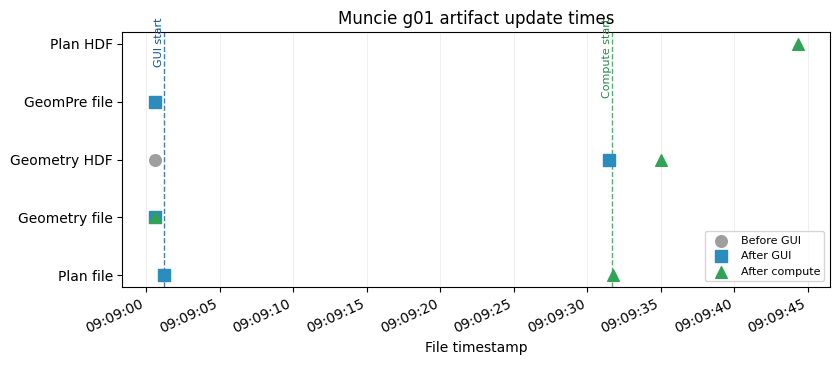

Displayed 2 validation figure(s).
{'label': 'Muncie: create blocked-obstruction polygons from XS data',
'project': 'Muncie',
'geometry_number': '01',
'plan_number': '02',
'status': 'passed',
'passed': True,
'plan_path': 'C:\\GH\\ras-commander\\working\\notebook_runs\\122_full_live_20260429_085928\\example_projects\\Muncie_122_rasmapper_updates_rm12_muncie_create_block\\Muncie.p02',
'plan_encoding': 'utf-8',
'geometry_path': 'C:\\GH\\ras-commander\\working\\notebook_runs\\122_full_live_20260429_085928\\example_projects\\Muncie_122_rasmapper_updates_rm12_muncie_create_block\\Muncie.g01',
'geometry_encoding': 'utf-8',
'geometry_hdf_path': 'C:\\GH\\ras-commander\\working\\notebook_runs\\122_full_live_20260429_085928\\example_projects\\Muncie_122_rasmapper_updates_rm12_muncie_create_block\\Muncie.g01.hdf',
'geometry_hdf_keys': 'Geometry',
'plan_hdf_path': 'C:\\GH\\ras-commander\\working\\notebook_runs\\122_full_live_20260429_085928\\example_projects\\Muncie_122_rasmapper_updates_rm12_muncie_create_block\\Muncie.p02.hdf',
'plan_hdf_keys': 'Event Conditions, Geometry, Plan Data, Results',
'plan_file_read': True,
'plan_shortid_updated': True,
'plan_title_updated': True,
'plan_geometry_updated': True,
'geometry_preprocessor_enabled': True,
'geometry_file_read': True,
'gui_update_succeeded': True,
'geometry_artifact_updated': True,
'geometry_hdf_read': True,
'compute_ran': True,
'compute_succeeded': True,
'result_hdf_read': True,
'result_hdf_updated': True,
'figures_displayed': 2}
Operation Summary¶
summary = pd.DataFrame([
{
"demo_type": item["demo_type"],
"label": item["label"],
"project": item["project_label"],
"geometry_number": item["geometry_number"],
"plan_template": item["plan_template"],
"plan_number": item["plan_number"],
"plan_shortid": item["plan_shortid"],
"enabled": item["enabled"],
"skip_reason": item["skip_reason"],
"executed": item["executed"],
"success": item["success"],
"compute_executed": item["compute_executed"],
"compute_success": item["compute_success"],
"validation_status": item["validation_status"],
"validation_passed": item["validation_passed"],
"error": item["error"],
}
for item in operation_log
])
display(summary)
_ = display_summary_figures(summary)
| demo_type | label | project | geometry_number | plan_template | plan_number | plan_shortid | enabled | skip_reason | executed | success | compute_executed | compute_success | validation_status | validation_passed | error | |
|---|---|---|---|---|---|---|---|---|---|---|---|---|---|---|---|---|
| 0 | 1D cross sections | Balde Eagle Creek 1D: all XS attributes except... | Balde Eagle Creek 1D | 01 | 01 | 03 | RM01_BALDE_EAGLE_CREEK_1 | True | None | True | True | True | True | passed | True | None |
| 1 | 2D/pipe model cross sections | Davis pipe model: river stations table | Davis | 02 | 02 | 01 | RM02_DAVIS_PIPE_MODEL_RI | True | None | True | False | False | None | failed | False | Could not find RASMapper tree node: Davis Full... |
| 2 | Special pipe/2D model cross sections | New Orleans Metro: elevation profiles from ter... | NewOrleansMetro | 02 | 01 | 02 | RM03_NEW_ORLEANS_METRO_E | True | None | True | False | False | None | failed | False | Could not find RASMapper tree node: 2D Surface... |
| 3 | XS interpolation surface | Muncie: compute XS interpolation surface | Muncie | 04 | 04 | 02 | RM04_MUNCIE_COMPUTE_XS_I | True | None | True | True | True | True | passed | True | None |
| 4 | Storage area curves | Muncie: storage area elevation-volume curves | Muncie | 01 | 01 | 02 | RM05_MUNCIE_STORAGE_AREA | True | None | True | True | True | True | passed | True | None |
| 5 | SA/2D connections | BaldEagle Multi2D: SA/2D connection from/to | BaldEagleCrkMulti2D | 12 | 19 | 07 | RM06_BALDEAGLE_MULTI2D_S | True | None | True | True | True | True | passed | True | None |
| 6 | Bridge/culvert properties | BaldEagle Multi2D: bridge/culvert river stations | BaldEagleCrkMulti2D | 03 | 05 | 07 | RM07_BALDEAGLE_MULTI2D_B | True | None | True | False | False | None | failed | False | Could not find RASMapper tree node: Single 2D ... |
| 7 | Bridge/culvert terrain profiles | BaldEagle Multi2D: bridge/culvert terrain prof... | BaldEagleCrkMulti2D | 03 | 05 | 07 | RM08_BALDEAGLE_MULTI2D_B | True | None | True | False | False | None | failed | False | Could not find RASMapper tree node: Single 2D ... |
| 8 | Lateral structures | Muncie: lateral structure river stations | Muncie | 01 | 01 | 02 | RM09_MUNCIE_LATERAL_STRU | True | None | True | True | True | True | passed | True | None |
| 9 | Edge lines | Muncie: create edge lines at XS limits | Muncie | 01 | 01 | 02 | RM10_MUNCIE_CREATE_EDGE_ | True | None | True | True | True | True | passed | True | None |
| 10 | Blocked obstructions | HCFCD M3 Clear Creek: update blocked obstructi... | HCFCD M3 Clear Creek A120-00-00 | 01 | 02 | 01 | RM11_HCFCD_M3_CLEAR_CREE | True | None | True | True | False | None | passed | True | None |
| 11 | Blocked obstruction polygons | Muncie: create blocked-obstruction polygons fr... | Muncie | 01 | 01 | 02 | RM12_MUNCIE_CREATE_BLOCK | True | None | True | True | True | True | passed | True | None |
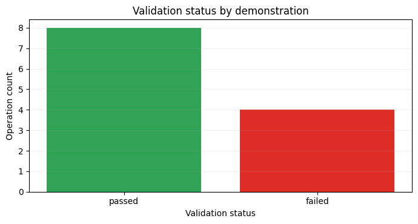
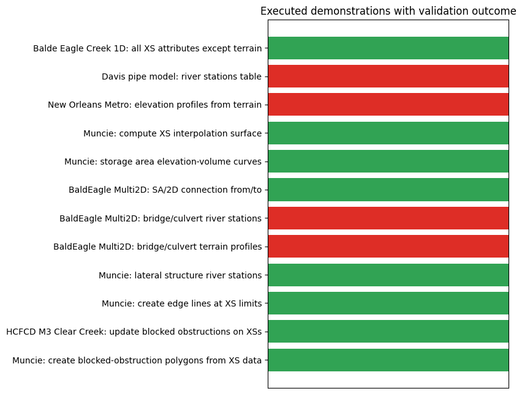
Notes¶
- The notebook deliberately uses isolated project copies so repeated validation does not mutate the source examples.
NewOrleansMetrois a special downloadable example project. The project file contains Windows-1252 characters, soRasPrjneeds fallback encoding support when reading project entries.- The HCFCD M3 example uses the local
examples/m3_models/Clear Creek/HEC-RAS/A120-00-00project when present. If that folder is missing, the helper falls back toM3Model.extract_model("A")and extractsA120-00-00.zip. - Individual feature-level operations remain configurable through the optional node variables; the main matrix focuses on one all-feature demonstration per geometry/update type.